Traité du Mercure - Nouvelle Lumière Chymique -
NOVUM LUMEN CHYMICUM SETHON - SENDIVOGIUS
Pour servir d'éclaircissement aux trois Principes de la nature exactement décrits dans les trois Traités suivants Le I : traité du Mercure
A PARIS, Chez Laurent d'Houry, rue S. Jacques devant la Fontaine S. Séverin, au S. Esprit M. DC.XCI AVEC PRIVILEGE DU ROY revu le 22 janvier 2009 Plan : préambule - Préface - I.
Ce que c'est que la Nature, et quels doivent être ceux qui la cherchent - II.
De l'opération de la Nature en notre proposition et semence - III.
De la vraie et première matière des métaux - IV.
De quelle manière les métaux sont engendrés aux entrailles de la Terre - V.
De la génération de toutes sortes de pierres - VI.
De la seconde matière et de la perfection de toutes choses - VII. De la vertu de la seconde matière - VIII.
De l'Art, et comme la Nature opère par l'Art en la semence - IX.
De la commixtion des métaux ou de la façon de tirer la semence métallique - X.
De la génération surnaturelle du fils du Soleil - XI.
De la pratique et composition de la Pierre ou Teinture Physique, selon l'Art - XII. De la Pierre, et de sa vertu -
Epilogue, Sommaire et Conclusion des douze traités ou chapitres ci-dessus -
Enigme philosophique du même auteur aux fils de vérité -
S'ensuit la Parabole ou Enigme philosophique, ajoutée pour mettre fin à l'Suvre -
Dialogue du Mercure, de l'alchimiste et de la Nature - Notes personnelles -
Les vignettes reproduisent des photos d'Alain Mauranne [© 2009] représentant des bas-reliefs de la cathédrale d'Amiens [portail saint Firmin]. Préambule : Le Traité du Mercure
est le seul des trois traités attribués au Cosmopolite, qui soit sans doute de la main d'Alexandre Sethon ; les deux autres [ Traité du Soufre ; Traité du Sel
] ont été compilés par Michel Sendivogius, et il n'est pas dit que le Traité du Mercure
n'ait lui-même été compilé d'après des notes laissés à sa mort par Alexandre Sethon, que Sendivogius se serait appropriées, lors de son mariage avec la veuve de Sethon. Une section entière est consacrée à Alexandre Sethon : c'est en effet l'un des alchimistes les plus curieux qui ait été, l'un de ceux, très rares, qui ait réalisé des transmutations qui résistent à l'examen critique, au point que Louis Figuier [ L'Alchimie et les Alchimistes , Hachette, 1862
] a été obligé d'en arriver à de explications grotesques pour essayer de prouver que Sethon était un faussaire...Quoi qu'il en soit, les Douze Traités
forment un compendium sur l'Art sacré et dans l'ensemble, le texte de Sethon apparaît peu envieux [
on appelle envieux un alchimiste qui prêche systématiquement le faux pour le vrai
]. Ce texte n'a point d'illustration. Toutefois, il est divisé en douze chapitres [ on l'appelle aussi les Douze Traités
] et il était bien tentant de faire correspondre un signe zodiacal avec chaque chapitre. Pour cela, nous avons utilisé les formes ésotérique et « exotérique » des signes du zodiaque qui forment les bas-reliefs du portail saint Firmin de Notre-Dame d'Amiens. Ces signes sont en fait disposés en deux séries : la première série représente, au vrai, le signe du zodiaque et la deuxième série, située au-dessous de la première, représente les activités agricoles correspondant au mois et à la saison. Si l'on n'est pas versé dans la cabale hermétique, on en restera là ; en revanche, l'Amoureux de science aura tôt fait de deviner une intention cachée ou voilée derrière ces quatre-feuilles représentant les travaux de l'agriculture terrestre et leur trouvera facilement leurs correspondances, dans le domaine de l'agriculture céleste, c'est-à-dire dans les opérations du grand oeuvre. Aussi avons-nous divisé chaque série de quatre-feuilles de la manière suivante : chaque chapitre du Traité du Mercure
a été mis en rapport avec un signe zodiacal : c'est ce que nous appellerons le signe à correspondance « ésotérique
». L'autre quatre-feuille se trouve intégré dans la section des notes
où nous essayons de trouver l'interprétation claire du texte d'Alexandre Sethon, autrement dit, où nous tâchons de débusquer l' exotérisme
voilé par le texte ; là encore, les notes sont divisées en douze chapitres correspondant à chacun des chapitres du Traité et le signe corrspondant de l'agriculture terrestre - autrement dit le signe exotérique - lui est attribué, allant de pair avec le signe zodiacal correspondant. frontispice de la Nouvelle Lumière Chymique
Voici à présent quelques notes sur Sendivogius et Alexandre Sethon tirées de Ferguson : SETON (ALEXANDER).
Alexand. Sitonii aus Schottland eines wahren Besitzers der Kunst Zwölf Bücher von dem rechten wahren Philosophischen Steine. Aus einer sehr alten Handschrift. Als des grossen und kleinen Bauers Chymischer Bücher Zweyter Theil. Franckfurt und Leipzig, 1751. 8°. Pp .[12] 76. This contains also:
- Philosopbische Rätzel, an die Kinder der Wahrheit, p. 63.
- Ein philosophisch Gleichnifs oder Rätzel als eine Gabe hinzugesetzt, p. 67. This work is identical with the Novum Lumen Chymicum , published by Sendivogius (q.v.).
Among the reputed adepts no one had a more circumstantial history, or one supported by more trustworthy authorities, than Alexander Seton. His name has been modified in various ways, and appears as Setonios, Sitonius, Sedonius, Sidonius, Sutoneus, Suchthenius, Sydon, and he is known also as the ' Cosmopolite. ' His story is briefly this: ln the summer of 1601, a Dutch skipper, Jakob Hanssen (or Haussen ?) by name, was driven ashore by stress of weather at Seton, near Edinburgh, where he was rescued and hospitably entertained by the said Alexander, who apparently belonged to the family of that ilk, and who helped him to get his vessel repaired and to send him back to Holland. The following spring, Seton arrived at Enkhuysen on a visit to his former guest and stayed a short time with him, and as their intimacy increased, Seton informed his friend that he knew the art of transmutation. To convince hm that it was so, he changed some lead into gold and with a needle inscribed the date, 13 May, 1602, 4 P.M., and gave it him as a memento. Hanssen afterwards confided an account of this affair to his friend and physician, Joannes van der Linden, and gave him a piece of the gold. Fifty years later his son, J. Antonides van der Linden, the author of the medical bibliography, who was in Amsterdam and knew the whole occurrence, was still in possession of the gold. He showed it to Morhof, who to the authority for the preceding narrative. From Enkhuysen Seton went to Amsterdam and Rotterdam, whence he is supposed to have travelled to Italy, for nothing definite is heard about him till the following year, when he was on his way back to Germany and was encountered by Dr. Dienheim, who gives a narrative which may be outlined.
' In midsummer, 1603,' he says. ' as I was returning from Rome to Germany, I made acquaintance with a fellow-traveller, elderly, intelligent, unusually shy, small but well set up, of fresh colour and cheerful temperament, with a chestnut-brown beard cut in the French fashion, and dressed id a damasked black silk tunic. He had a servant, who could be known among a thousand by his red hair and beard. His name was Alexander Setonius, and he came from Molia, an island kingdom In the ocean.
'In Zurich, where Pastor Eghlin gave him a letter to Dr. Zwinger In Basel, we hired a boat to take us to Basel by water. After we were settled there in the Golden Stork, he said to me: You will remember how throughout the whole journey, and especially on board toe boat, you have repudiated alchemy and reviled the alchemists, ami how I have said that I would reply not with arguments but with matters of fact. Before the sun sets I will keep my word. I am now waiting for another person, who, I intend, shall be a witness of the demonstration, so that the adversary may have Iess doubt as to the truth of the event.
'Thereupon appeared a man, whom I knew by sight, and who, I subsequently ascertained, was Dr. Zwinger. We all went to a goldsmith's; Dr. Zwinger brought some plates of lead, the goldsmith supplied a crucible, and some common sulphur we bought on the way. Seton touched nothing, but bade a fire be kindled, the lead and sulphur be placed time about in the crucible, the bellows be turned on, and the mass be stirred together. Meantime he cracked jokes with us, but after a quarter of an hour he said: Throw this little paper into the melted lead, and see that it goes right in and not into the fire. The paper contained a heavy greasy powder of a citron yellow colour, but it would have taken lynx eyes to detect it on the point of a knife.
'We did as he bade us, though more sceptical than Thomas himself, and, at the end of another quarter of an hour when the mass was In fusion and had been stirred with a glowing iron, the goldsmith was directed to empty the crucible. Lead was no longer there, but the purest gold, which after test-log was found far superior to gold from Hungary or Arabia. It weighed as much as the previous lead.
' There we stood, hardly believing our eyes, but he laughed and bantered us. Now, said he, be off with your scholastic subleties and argue to your heart's content. Here you have the truth in reality, and that is far better than all your syllogisms. He gave a piece of the gold to Dr. Zwinger as a remembrance, and I got a piece weighing about four ducats, which I preserve in memory of the great demonstration.'
At the request of Dr. Schobinger of St. Gallen, Dr. Jacob Zwinger (q.v.) afterwards in 1606 wrote an account of the occurrence in a Latin epistle, printed by Professor Emanuel König In the 'Ephemerides' of the Academia Naturae Curiosorum (Norib., 1690, Dec. ii.) It agrees with Dienheim's narrative, and from it it also appears that Seton gave another example of his skill, and the portion of the gold which Zwinger got was preserved to his family. Seton apparently went next to Strasburg, and though he concealed his came and took that of Hirschberger, he may have been the adept who inadvertently caused trouble to a goldsmith there. It was in the summer of 1603 that a stranger came to this goldsmith, whose name is given variously as Philip Jacob Gustenhofer, Gusstenhover, Güstenhöver, Gossenhauer, Gassenhauer, Justenhofer, and did some work in his place. In return the stranger gave him a little red powder and showed bin bow to use it, and Gustenhofer having incautiously shown its effects to his friends, soon had a report spreading that he could make gold. The affair was investigated by a committee of the Council, gold was again produced, one specimen at least of which remained and was still in existence in 1647. The story at length reached the ears of the Emperor Rudolph
, who requested Gustenhofer to be sent to him. When he was questioned he stated that he was unable to make the powder, that the portion he had received was exhausted, and he effected his escape. He was apprehended again, however, and was kept in the 'white Tower,' for the Emperor was convinced that he knew more than he would reveal, and his story forms part of the poem on the alchemists written by de Delle, the Court poet. and printed In the ' Fegfeuer
,' and afterwards In 'Jungfer Alchimia,' 'Beytrag,' and by Schmieder. It is to be observed, however, that it is only Schmieder who couples this incident with Seton, the other authorities making no reference whatever to him in this connection. From Strasburg Seton proceeded to Frankfurt a. M. He made acquaintance there with a merchant called Koch, who, with a powder which was given him by Seton, effected a transmutation as he describes in a letter to Hoghelande, Cologne is the next place where Seton is heard of, and here he called on an alchemist, Anton Verdemann, with whom he stayed some time. In a visit to an apothecary's, where he wanted to buy some lapis lazuli, he heard certain persons denying the reality of transmutation, which irritated him very much. Next day, in the apothecary's shop. he transmuted first a quantity of antimony, and afterwards lead, to which the apothecary had added a piece of tin. Gold of the finest quality was produced in both trials, much to the apothecary's surprise. With a fellow-countryman, a surgeon, called Master George, a fell opponent of the alchemists, he had another experiment, to which he converted lead and iron into gold. The surgeon, now convinced of the reality of the art, warned Seton of the risk he was running to making such public demonstrations. This took place on 11 August, 1603. The Cologne people were divided in their opinions, but both the son of the goldsmith, in whose place; the trial took place, and his assistants maintained the truth of the facts and the absence of any deception. The next place Seton visited was Hamburg, and here, according to Morhof, he made several important projections.
A story is told by Zwelfler about what took place at Helmstädt (though the scene has been placed at Rostock and other Universities), where Cornelius Martini, professor of philosophy, was to the habit of stating arguments against the possibility of transmutation. One day when he had concluded, a stranger in the audience called for a charcoal fire, a crucible, and some lead, and when these were procured, there and then transmuted the lead and handed the still warm gold to Martini with the words: 'Solve mihi hunc syllogismum.' Schmieder tries to connect this event also with Seton, but others who tell the story make no allusion to him. It may be admitted, however, that if Seton were not actually concerned in it, it is very much after his manner of showing the opponents of transmutation the error of their views.
Seton went to Munich, but lived quite privately. He had seen a burgher's daughter, and together they disappeared from Munich, and Seton was not heard of until he arrived at Dresden, presumably to resume his propaganda. His companion, called William Hamilton, whom he had entrusted with his powder, had changed lead into fine gold in presence of the Elector and his guests. After this Hamilton returned by Holland to England, but Seton stayed on. He could hardly have chosen a more dangerous place than Dresden, The Elector, Christian II., who succeeded in 1601, unlike his predecessors Augustus, who was the patron of Beuther end Schwärtzer, and Christian I., who also retained the services of the latter alchemist, had no belief whatever in alchemy, but after what he had just seen, his greed was aroused, and he contrived to get Seton into his power. At first he treated him well, in hope of persuading him to reveal the secret, but not succeeding he threatened and then tortured bis victim. Seton was put on the rack, and burned with red hot irons, but he confessed nothing, and a second course of torture some time later made no further impression. Seeing that this method was unavailing, and that he might die and take the secret with him, the Elector immured him in a noisome dungeon where he was watched by forty soldiers of the body guard, who relieved each other at intervals. His wife was not allowed to visit him.
At Dresden, there was living at this time Michael Sendivogius, a Polish nobleman, as he is usually called. He was interested in alchemy and had heard of Seton, and it occurred to him that if he could rescue the adept from his prison, he might be rewarded by being told the mystery of the 'stone.' He ingratiated himself with the Elector, and obtained permission to visit tbe prisoner on the plea that he might be able to persuade him to disclose the secret As soon as he got an opportunity he laid his plan of rescue before Seton, who promised him an ample reward if to was successful. Upon this, Sendivogius went to Cracow, sold a house he had there, and, with the price and some other moneys which he got, returned to Dresden. He now visited the prisoner frequently, became very friendly with the keeper, and treated the soldiers liberally. One evening, on the occasion of a festival, he plied the guards so freely with wine that they were helpless from intoxication. Sendivogius carried away Seton, who was too maimed and mutilated to walk, put him into a carriage, drove to his wife's lodging, got her and the ' tincture,' and set off as fast as they could to the frontier, and never stopped tilt they arrived at Cracow. Seton survived only a short time, and died in January 1604. See also the note upon Sendivogius. SENDIVOGIUS (Michael) . Sohn Sendivogii; Filius Sendivogii. See HARPRECHT (JOHANN).
Michaelis Sendivogii Chymische Schrifften, darinnen gar deutlich von dem Ursprung, Bereit- und Vollendung des gebenedeiten Steins der Weisen gehandelt wird. Nebst einem kurtzen Vorbericht ans Liecht gestellet durch Friederich Roth-Scholtzen Siles. Nürnberg, bey Job. Dan. Taubers seel. Erben. 1718.
8°. Pp. [4, including the frontispiece] 43 [i] 250 (for 350). Title red and black. Folding title: Speculum Philosophicum, at p. i. Title: Vom Mercurio, p. 60. Title: Vom Schwefel, p. 93. Title: Epistotae LV., between pp. 192-3, red and black. Title: Des Vortrefflichen Abts Synesii aus Griechenland Chymische Schrifften, . . . between 202-3 (302-3), in red and black. Title: Fr. Basils Valentini Ordin. Benedict. Via Veritatis ... p. 223 (323). Abhandlung vom Mercur.
See birkholz (ADAM melchior), Die ganze hohere Chemie, 1787, p. 283.
Aenigma philosophicum ad filios veritatis.
See THEATRUM CHEM1CUM, l659, iv. p. 442. See MUSEUM HERMETICUM, 1749, p. 585.
Anrede an die Söhne der Wahrheit über das philosophische Räthsel.
See ALBINEUS (nathan), Bibliotheca Chemica Contracta, 1673, Part ii. p. 55.
See MANGET (j. j.), Bibliotheca Chemica Curiosa, 1702, ii. p. 473.
See SETON (ALEXANDER), Zwölf Biicher, 1751, p. 63.
See birkholz (ADAM melchior), Die ganze höhere Chemie, 1787, p. 335.
Philosophisches Rätzel an die Kinder der Wahrheit.
See TANCKE (joachih), Promptuarium Alchymiae, Ander Buch, 1614, p. 350.
Parabola seiu AEnigma Philosophicum coronidis & superadditamenti loco adjunctum.
See THEATRUM CHEMICUM, l659, iv. p. 444.
See albineus (nathan), Bibliotheca Chemica Contracta, 1673, Part ii. p. 59.
See manget (j. j.), Bibliotheca Chemica Curiosa, 1702, ii. p. 474. See MUSEUM hermeticum, 1749, p. 585-
This is identical with the AENIGMA philosophorum sive Symbolum Saturni (q.v.).
Gleichnifs, oder philosophisches Räthsel.
See birkholz (adam melcHior), Die gantze höhere Chemie, 1787. p. 338.
See SETON (ALEXANDER), Zwolf Bücher, 1751, p. 67.
See tancke (joachim), Promptuarium Alchemiae, Ander Buch, p. 356.
Apographum Epistolarum hactenus ineditarum super Chemia.
See manget (j. j.) Bibliotheca Chemica Curiosa, 1702, ii. p. 493. The Briefe form a translation of this.
Michaelis Sendivogii, eines grofsen Philosopher! Fünf und funfzig Briefe, den Stein der Weisen betreffend. Aus dem Lateinischen übersetzt. Frankfurt und Leipzig, In Johann Georg Fleischers Buchbandlung 1770. 8°. Pp. 152.
Dialogus Mercurii, Alchymistae et Naturae. Scriptus in Gratiam Amici Coroades. Auctore eo, Qui DIVI LESCHI GENUS AMat. Coloniae, Imprimebat Seruatius Erffens. Anno M.DC.VII. 8°. Pp. 28.
This famous dialogue, which forms part of the Novum Lumen, has been often printed: Paris, 1608, 12°; Coloniae. 1612, 1614, 12°; Venice, 1644; Wittebergae, 1614, 1623, 12° (with Milller's Miracula); in French with the Cosmopolite ou
Nouvelle Lumiere de la Phisique Naturelle
, Paris, 1629, 12° La Haye, 1639,12°; Paris, 1669, 12°; English to J. F.'s translation of the Novum Lumen Chymicum, 1650, p. 59; 1674, p. 60; and in Digby's, 1722, p. 93.
Colloquium Hermetico-Spagyricum, das ist: ein wunderhöfliches, wotgegründetes Chymisches Gespräch zwischen der Natur, dem Metcurio, und einem Alchymisten. See FIGULUS (benedictus), Tbesaurinella, 1682, p. 121.
Dialogus Mercurii, Alchymistae et Naturae.
See THEATRUM CHEMICUM, 1659, IV. p. 448.
See ALbineus (NATHAN), Bibliotheca Chemica Contracta, 1673, Part ii., p. 68.
See figulus (BENEDICTUS), Thesaurinella, 1682, p. 384.
See manget (j. J.), Bibliotheca Chemica Curiosa, 1702, ii. p. 475. See MUSEUM HERMETICUM, 1749, p. 590.
Gespräch zwischen dem Merkur, einem Alchemisten, und der Natur. See birkholz (adam MELCHiOR), Die ganze höhere Chemie, 1787, p. 346.
De Lapide Philosophorum, Tractatus Duodecim, è naturae fonte, & Manuali experientia deprompti. Author sum, qui DIVI LESCHI GENUS AMO. Francofurti, Typis Ioannis Bringeri, Sumptibus AnthonI Humml. M.DC.XI. 8°. Pp. 64.
This is the same as the Novum Lumen Chymicum.
'Ad filios veritatis; Aenigma Philosophicum,' pp. 53-56. ' Parabola seu Aenigma Philosophorum," pp. 57-64.
Novum Lumen Chymicum, e Naturae Fonte et Manuali Experientia depromptum, & in duodecim Tractatus divisum: Cut accessit, 1. Dialogus Mercurij, Alchymistae, & naturae perquam utilis. 2. Tyrociniu Chymicum loan. Beguini, Christianiss. Regis Francor. Elemosyn. Coloniae, Apud Antonium Boëtzerum, sub signo Rubri Leonis. Anno M.DC.XVII. 12°. Pp. [6] 89 [i blank]. Title red and black. Vignette.
The Tyrocinium has a separate pagination, and the following separate title-page (all in black):
Tyrocinium Chyimicum e Nature Fonte et Manuali Experientia deproroptum. Autore Joanne Beguino, Christianiss. Regis Franc, Eleemosynario, Hac postrema editione ab ipsomet autore quam diligentissime recognitum & auctum. Coloniae, Apud Antonium Boëtzerura, M.DC.XV. Cum Privilegio. Pp. [14, 2 blank] 19s [5 blank]. Vignette.
As this 1615 edition appears under a 1617 title-page, it looks as if there were two editions. See BEGUIN (JEAN).
Michaelis SendivogI Poloni Lumen Chymicum Novum XII. Tractatibus divisum & totidem antiqvis figuris in Germania nuper repertis, notisq; clarissimis illuminatum, renovatum, illustratum Opera & Studio ' AvdroV OrqoV HhlioV
' In gratiam genuinorum Hermetis filiorun publici juris factum. Erphordiae Typis Philippi Wittelii Impensis Johannis Birckneri Bibliopolae. Anno M.DC.XXIV.
8°. Sigs. A to E in eights; or pp. [3] 77 (even numbers on the recto). 13 woodcuts.
The commentary is separate, and has this title-page:
Epilogus & Recapitulatio in Michaelis Sendivogi Poloni Novum Lumen Cbymicum Opera & Studio 'AndroV OrqoV HlioV In gratiam genuinorum Hermetis filiorum publici juris facti Anno M.DC.XXIV. 8°. Sigs. F to V in eights, or pp. [1] 230,
but the pagination is irregular. Though the title is in Latin, the book is in German. The Epilogus is by Orthelius , whom see for another copy .
With this commentary the following tracts are incorporated :
- Epistola Andreae de Blawen, geschrieben ad Petrum Andream Matthiolum, in qua agitur de multiplici auri potabilis parandi ratione, p. 76.
- Epistola Anonymi de principiis artis Hermeticae, p. 118.
- Expositio & practica Lapidis Adrop, collects ex libra Plinii Philosophi, qui intitulatur: - Aromaticum Philosophorum, Thesaurus & Secretum Secretorum, p. 125.
- Excerpta ex interlocutione Mariae prophetissae sororis Moysis & Aaronis, habita cum aliquo Philosopho, dicto Aros, de excellentissimo Opere trium horarum, p. 129.
- Epistola Joannis Pontani, in qua de lapide, quem Philosophorum vocant, agitur, p. 149.
- Epistola Haimonis de quatuor Lapidibus philo-sophicis, materiara suam ex minore mundo desumentibus, p. 177.
- Epistola Cornelii Alvetani Arnsrodii de confidendo Divino Elixire sive Lapide philosophico, p. 187.
- Astronomla inferior, seu Planetarum terrestrium motus & variatio, p. 199.
- Rythmi de opere universali, ex caelo soloque prodeunte, p. 208.
- Extract vand Summarischer Inhaldt des Büch-leins genandt Gloria Mundi, oder Paradeifs Taffel, p. 213.
- Ein sonderbar Werck, ex Theophrasto redivivo Michaelis Perelii, p. 224.
- Das Vrtheil oder Vergleichung des Gotts und Richters Mercurii im vralten Ritterkrieg, p. 227, - Rythmi, p. 230. Abréviations : Myst . : Mystère des Cathédrales [Fulcanelli] ; DM I ou II : Demeures Philosophales [Fulcanelli, Eugène Canseliet] Préface
A tous les inquisiteurs de l'Art chymique, vrais enfants d'Hermès, SALUT
Considérant en moi-même (ami Lecteur) combien de fausses recettes d'alchimistes, qu'ils appellent ; et combien de livres contrefaits et pernicieux, dans lesquels on ne saurait remarquer la moindre trace de Vérité, ont été composés par la fraude et l'avarice des imposteurs, dont la lecture a trompé et trompe encore tous les jours les véritables inquisiteurs des arts et des secrets les plus cachés de la Nature. J'ai cru que je pouvais rien faire de plus utile et de plus profitable, que de communiquer aux vrais fils et héritiers de la Science, le talent qu'il a plu au Père des Lumières de me confier : afin de donner à connaître à la postérité, que Dieu a octroyé cette bénédiction singulière et ce trésor philosophique à quelques signalés personnages, non seulement dans les siècles passés , mais encore à quelques-uns de notre temps. Plusieurs raisons m'ont obligé à ne pas publier mon nom, parce que je ne cherche point d'être loué et estimé et que je n'ai autre dessein que de rendre office aux amateurs de la Philosophie. Je laisse librement ce vain désir de gloire à ceux qui aiment mieux paraître savants que de l'être en effet. Ce que j'écris en peu de paroles a été confirmé par l'expérience manuelle que j'en ai faite, avec la grâce du Très-Haut, afin d'exhorter ceux qui ont déjà posé les premiers et réels fondements de cette louable Science, à ne pas abandonner l'exercice et la pratique des belles choses, et les garantir par ce moyen de la méchante et frauduleuse troupe de charlatans et vendeurs de fumée auxquels rien n'est si doux que de tromper. Ce ne sont point des
songes (comme parle le vulgaire ignorant), ce ne sont point de vaines fictions de quelques hommes oisifs comme veulent les fols et insensés qui se moquent de cet Art. C'est la pure Vérité philosophique, dont je suis passionné sectateur, que je veux vous découvrir, et que je n'ai pu ni dû vous cacher ni passer sous silence, parce que ce serait refuser l'appui et le secours qui est dû à la vraie Science chymique indignement décriée; et qui pour cette raison appréhende extrêmement de paraître en public dans ce siècle malheureux et pervers, où le vice marche de pair avec la vertu, à cause de l'ingratitude et de la perfidie des hommes, et des malédictions qu'on vomit sans cesse contre les Philosophes. Je pourrais rapporter plusieurs auteurs renommés pour témoins incontestables de la certitude de cette Science. Mais les choses que nous voyons sensiblement, et dont nous sommes convaincus par notre propre expérience, n'ont pas besoin d'autres preuves. Il n'y a pas longtemps, et j'en parle comme savant, que plusieurs personnes de grande et petite condition, ont vu cette Diane toute nue. Et quoiqu'il se trouve quelques personnes qui, par envie, ou par malice, ou par la crainte qu'ils ont que leurs impostures ne soient découvertes, crient incessamment que, par un certain artifice qu'ils couvrent sous une vaine ostentation de paroles fastueuses et ampoulées, l'on peu extraire l'âme de l'Or et la rendre à un autre corps : ce qu'ils entreprennent témérairement et non sans grande perte de temps, de labeur et d'argent. Que les enfants d'Hermès sachent, et tiennent pour certain, que cette extraction d'âme (pour parler en leurs termes) soit de l'Or, soit de la Lune, par quelque voie sophistique vulgaire qu'elle se fasse, n'est autre chose qu'une pure fantaisie et une vaine persuasion. Ce que plusieurs ne veulent pas croire, mais qu'ils seront enfin contraints d'avouer à leur dommage lorsqu'ils en feront l'expérience, seule et unique maîtresse de la Vérité. Au contraire, je puis assurer avec raison que celui qui pourra, par voie philosophique, sans fraude et sans déguisement, teindre réellement le moindre métal du monde, soit avec profit, ou sans profit, en couleur de Sol ou de Lune, demeurant et résistant à toute sorte d'examens requis et nécessaires, aura toutes les portes de la Nature ouvertes pour rechercher d'autres plus hauts et plus excellents secrets, et même les acquérir avec la grâce et la bénédiction de Dieu. Au reste, j'offre aux enfants de la Science ces présents Traités, que je n'ai écrits que sur ma propre expérience, afin qu'en étudiant et mettant leur application et toute la force de leur esprit à la recherche des opérations cachées de la Nature ils puissent par là découvrir et connaître la vérité des choses, et la Nature même, en laquelle seule connaissance consiste toute la perfection de ce saint Art philosophique, pourvu qu'on y procède par le chemin royal que la Nature nous a prescrit en toutes ses actions et opérations. C'est pourquoi je veux ici avertir le lecteur qu'il ne juge point mes écrits selon l'écorce et le sens extérieur des paroles, mais plutôt par la force de la Nature, de peur qu'en après il ne déplore son temps, son travail et son bien vainement dépensés. Qu'il considère que c'est la Science des Sages, et non pas la Science des fols et des ignorants; et que l'intention des Philosophes est toute autre que ne le peuvent comprendre tous ces glorieux Thrasons, tous ces lettrés moqueurs, tous ces hommes vicieux et pervers, qui ne se pouvant mettre en réputation par leurs propres vertus, tâchent de se rendre illustres par leurs crimes et par leurs calomnies et impostures contre les gens d'honneur. Fuyez tous ces vagabonds et ignorants souffleurs, qui ont déjà presque trompé tout le monde avec leurs blanchissements et rubifications, non sans grande diffamation et ignominie de cette noble Science. Les personnes de cette farine ne seront jamais admis dans les plus secrets mystères de ce saint Art : parce que c'est un don de Dieu auquel on ne peut parvenir que par la seule grâce du Très-Haut, qui ne manque pas ou d'illuminer l'esprit de celui qui la lui demande avec une humilité constante et religieuse, ou de la lui communiquer par une démonstration oculaire d'un maître fidèle et expert. C'est pourquoi Dieu refuse à bon droit la révélation de ses secrets à ceux qu'il en trouve indignes, et qui sont éloignés de sa grâce. Au surplus, je prie instamment les enfants de l'Art qu'ils prennent en bonne part l'envie que j'ai de leur rendre service; et lorsqu'ils auront fait que ce qui est occulte devienne manifeste
, et que, suivant la volonté de Dieu, par leur travail constant et assidu, ils auront atteint le port désiré des Philosophes, ils excluent de la connaissance de cet Art (à l'exemple des Sages) tous ceux qui en sont indignes. Qu'ils se souviennent de la charité qu'ils doivent à leur prochain pauvre et incommodé, et qui vivra en la crainte de Dieu; qu'ils le fassent sans aucune vaine ostentation; et qu'en reconnaissance de ce don spécial dont ils n'abuseront pas ils chantent sans cesse, et en leur particulier, et dans l'intérieur de leur cSur, des louanges à Dieu Tout-Puissant, très bon ét très grand.
La simplicité est le vrai sceau de la Vérité. --------------------------- I.Traité du Mercure --------------------------- Chapitre I
Ce que c'est que la Nature, et quels doivent être ceux qui la cherchent. figure I : le Bélier à la Toyson d'or
Plusieurs hommes sages et très doctes ont, avant plusieurs siècles, et même avant le Déluge 1
(selon le témoignage d'Hermès), écrit beaucoup de préceptes touchant la manière de trouver la Pierre des Philosophes, et nous en ont laissé tant d'écrits, que si la Nature n'opérait tous les jours devant nos yeux des effets si surprenants que nous ne pouvons absolument les nier, je crois qu'il ne se trouverait personne qui estimât qu'il y eût véritablement une Nature, vu qu'aux temps passés il ne fut jamais tant d'inventeurs de choses ni tant d'inventions qu'il s'en voit aujourd'hui. Aussi nos prédécesseurs, sans s'amuser à ces vaines recherches, ne considéraient autre chose que la Nature et sa possibilité : c'est-à-dire ce qu'il était possible de faire. Et bien qu'ils aient demeuré seulement en cette voie simple de la Nature, ils ont néanmoins trouvé tant de choses qu'à peine pourrions-nous les imaginer avec toutes nos subtilités et toute cette multitude d'inventions. Ce qui se fait à cause que la Nature et la génération ordinaire des choses qui croissent sur la Terre, nous semble trop simple et de trop peu d'effet pour y appliquer notre esprit, qui ne s'exerce cependant qu'à imaginer des choses subtiles qui, loin d'être connues, à peine se peuvent faire ou, du moins, très difficilement. C'est pourquoi il ne faut pas s'étonner s'il arrive que nous inventions plus aisément quelques vaines subtilités, et telles qu'à la vérité les vrais Philosophes n'eussent pu presque imaginer, plutôt que de parvenir à leur intention et au vrai cours de la Nature. Mais quoi! Telle est l'humeur naturelle des hommes de ce siècle, telle est leur inclination de négliger ce qu'ils savent, et de rechercher toujours quelque chose de nouveau, et surtout les esprits des hommes auxquels la Nature est sujette.
Vous verrez, par exemple, qu'un artisan qui aura atteint la perfection de son Art, cherchera d'autres choses, ou qu'il en abusera, ou même qu'il le laissera là tout à fait. Ainsi la généreuse Nature agit toujours sans relâche jusqu'à son Iliade 2
, c'est-à-dire jusqu'à son dernier terme, et puis elle cesse : car, dès le commencement, il lui a été accordé qu'elle pourrait s'améliorer dans son cours, et qu'elle parviendrait enfin à un repos solide et entier, auquel, pour cet effet, elle tend de tout son pouvoir, se réjouissant de sa fin comme les fourmis se réjouissent de leur vieillesse qui leur donne des ailes à la fin de leurs jours. De même, nos esprits ont poussé si avant, principalement dans l'Art philosophique et dans la pratique de la Pierre, que nous sommes presque parvenus jusqu'à l'Iliade, c'est-à-dire jusqu'au dernier but. Car les Philosophes de ce temps ont trouvé tant de subtilités qu'il est presque impossible d'en trouver de plus grandes ; et ils différent autant de l'Art des anciens Philosophes que l'horlogerie est différente de la simple serrurerie. En effet, quoique le serrurier et l'horloger manient tous deux le fer et qu'ils soient maîtres tous deux dans leur Art, l'un néanmoins ignore l'artifice de l'autre. Pour moi, je m'assure que si Hermès 3 , Geber 4 et Lulle 5
, tous subtils et tous profonds Philosophes qu'ils pouvaient être, revenaient maintenant au monde, ils ne seraient pas tenus par ceux d'aujourd'hui à grand-peine pour des Philosophes, mais plutôt pour des disciples, tant notre présomption est grande. Sans doute qu'aussi ces bons et doctes personnages ignoraient tant d'inutiles distillations 6
qui sont usitées aujourd'hui, tant de circulations 7
, tant de calcinations et tant de vaines opérations que nos modernes ont inventées, lesquels n'ayant pas bien entendu le sens des écrits de ces Anciens, resteront encore longtemps à rechercher une chose seulement : c'est de savoir la Pierre des Philosophes 8 , ou la teinture physique 9
que les Anciens ont su faire. Enfin, il nous arrive, au contraire, qu'en la cherchant où elle n'est pas nous rencontrons autre chose ; mais n'était que tel est l'instinct naturel de l'homme, et que la Nature n'usât en ceci de son droit, à peine nous fourvoierions-nous maintenant.
Pour retourner donc à notre propos, j'ai promis en ce premier Traité d'expliquer la Nature, afin que nos vaines imaginations ne nous détournent point de la vraie et simple voie. Je dis donc que la Nature est une , vraie , simple , entière en son être
, et que Dieu l'a faite devant tous les siècles, et lui a enclos un certain esprit universel 10
. Il faut savoir néanmoins que le terme de la Nature est Dieu, comme il en est le principe ; car toute chose finit toujours en ce en quoi elle a pris son être et son commencement. J'ai dit qu'elle est unique
et que c'est par elle que Dieu a fait tout ce qu'il a fait ; non que je dise qu'il ne peut rien faire sans elle (car c'est lui qui l'a faite, et il est tout-puissant), mais il lui a plu ainsi, et il l'a fait. Toutes choses proviennent de cette seule et unique Nature, et il n'y a rien en tout le monde hors la Nature. Que si quelquefois nous voyons arriver des avortons, c'est la faute ou du lieu, ou de l'artisan, et non pas de la Nature. Or cette Nature est principalement divisée en quatre régions ou lieux, où elle fait tout ce qui se voit et tout ce qui est cache; car, sans doute, toutes choses sont plutôt à l'ombre et cachées que véritablement elles n'apparaissent. Elle se change au mâle et à la femelle ; elle est comparée au Mercure 11
, parce qu'elle se joint à divers lieux ; et selon les lieux de la Terre, bons ou mauvais, elle produit chaque chose, bien qu'à la vérité il n'y ait point de mauvais lieux en Terre, comme il nous semble. Il y a quatre qualités élémentaires en toutes choses, lesquelles ne sont jamais d'accord, car l'une excède toujours l'autre.
II est donc à remarquer que la Nature n'est point visible bien qu'elle agisse sans cesse ; car ce n'est qu'un esprit volatil 12
, qui fait son office dans les corps et qui a son siège et son lieu en la Volonté divine. En cet endroit elle ne nous sert d'autre chose, sinon que nous sachions connaître les lieux d'icelle, et principalement ceux qui lui sont plus proches et plus convenables ; c'est-à-dire afin que nous sachions conjoindre les choses ensemble selon la Nature, de peur de conjoindre le bois à l'homme, ou le boeuf ou quelque autre bête avec le métal 13
; mais au contraire qu'un semblable agisse sur son semblable, car alors la Nature ne manquera pas de faire son office. Or le lieu de la Nature n'est ailleurs qu'en la volonté de Dieu, comme nous avons déjà dit ci-devant.
Les scrutateurs de la Nature doivent être tels qu'est la Nature même : c'est-à-dire vrais, simples, patients, constants, etc., mais, ce qui est le principal point, pieux, craignant Dieu et ne nuisant aucunement à leur prochain 14
. Puis après, qu'ils considèrent exactement si ce qu'ils se proposent est selon la Nature, s'il est possible et faisable ; et cela, qu'ils l'apprennent par des exemples apparents et sensibles ; à savoir, avec quoi toute chose se fait, comment, et avec quel vaisseau. Car si tu veux simplement faire quelque chose comme fait la Nature, suis-là ; mais si tu veux faire quelque chose de plus excellent que la Nature ne fait, regarde en quoi et par quoi elle s'améliore, et tu trouveras que c'est toujours avec son semblable. Si tu veux, par exemple, étendre la vertu intrinsèque de quelque métal plus outre que la Nature (ce qui est notre intention), il te faut prendre la Nature métallique, et ce encore au mâle et en la femelle, autrement tu ne feras rien 15
. Car si tu penses faire un métal d'une herbe, tu travailleras en vain, de même que d'un chien ou de quelque autre bête tu ne saurais produire un arbre. Chapitre II
De l'opération de la Nature en notre proposition et semence
figure II : le Taureau avec le signe du Sel
J'ai dit ci-dessus que la Nature est unique, vraie et partout apparente, continue ; qu'elle est connue par les choses qu'elle produit, comme bois, herbes, etc., Je vous ai dit aussi que le scrutateur d'icelle doit être de même, c'est-à-dire véritable, simple, patient, constant, et qu'il n'applique son esprit qu'à une chose seulement. Il faut maintenant parler de l'action de la Nature. Vous remarquerez que tout ainsi que la Nature est en la volonté de Dieu, et que Dieu l'a créée et l'a mise en toute imagination ; de même la Nature s'est fait une semence dans les éléments procédant de sa volonté. Il est vrai qu'elle est unique, et toutefois elle produit choses diverses ; mais néanmoins elle ne produit rien sans sperme 16
. Car la Nature fait tout ce que veut le sperme, et elle n'est que comme l'instrument de quelque artisan. Le sperme, donc, de chaque chose est meilleur et plus utile à l'artiste que la Nature même ; car par la Nature seule vous ne ferez non plus sans sperme, qu'un orfèvre pourrait faire sans feu, sans or ou sans argent, ou le laboureur sans grain. Ayez donc cette semence ou sperme, et la Nature sera prête de faire son devoir, soit à mal, soit à bien. Elle agit sur le sperme comme Dieu sur le franc arbitre de l'homme. Et c'est une grande merveille de voir que la Nature obéisse à la semence, toutefois sans y être forcée mais de sa propre volonté. De même, Dieu accorde à l'homme tout ce qu'il veut, non qu'il y soit forcé, mais de son bon et libre vouloir. C'est pourquoi il a donné à l'homme le libéral arbitre, soit au bien, soit au mal. Le sperme, donc, c'est l'Elixir ou la quintessence de chaque chose, ou bien encore la plus parfaite et la plus accomplie décoction et digestion de chaque chose, ou le baume de Soufre, qui est la même chose que l'humide radical 17
dans les métaux. Nous pourrions, à la vérité, faire ici un grand et ample discours de ce sperme ; mais nous ne voulons tendre à autre chose qu'à ce que nous nous sommes proposés en cet Art. Les quatre Eléments engendrent le sperme par la volonté de Dieu et par l'imagination de la Nature : car tout ainsi que le sperme de l'homme a son centre ou réceptacle convenable dans les reins 18
, de même les quatre Eléments, par un mouvement infatigable et perpétuel (chacun selon sa qualité), jettent leur sperme au centre de la Terre, où il est digéré et, par le mouvement, poussé dehors. Quant au centre de la Terre, c'est un certain lieu vide où rien ne peut reposer. Les quatre Eléments jettent leurs qualités en l'excentre (s'il faut ainsi parler) ou à la marge 19
et circonférence du centre, comme l'homme jette sa semence dans la matrice de la femme, dans laquelle il ne demeure rien de la semence : mais après que la matrice en a pris une due portion, elle jette le reste dehors. De même arrive-t-il au centre de la Terre, que la force magnétique ou aimantée de la partie de quelque lieu attire à soi ce qui lui est propre pour engendrer quelque chose et, le reste, elle le pousse dehors pour en faire des pierres et autres excréments. Car toutes choses prennent leur origine de cette fontaine 20
, et rien ne naît en tout le monde que par l'arrosement de ses ruisseaux. Par exemple, que l'on mette sur une table bien unie un vaisseau plein d'eau, qui soit placé au milieu de cette t mélange
des hommes avec les bêtes, il naîtrait diverses sortes d'animaux semblables aux hommes. Car il arrive infailliblement que si le sperme entre au centre, il naît ce qu'il en doit naître; mais sitôt qu'il est venu en un lieu certain et qui le conçoit, alors il ne change plus de forme. Toutefois, tant que le sperme est dans le centre, il se peut aussitôt créer de lui un arbre qu'un métal, une herbe qu'une pierre, et une chose enfin plus pure que l'autre selon la pureté des lieux. Mais il nous faut dire maintenant en quelle façon les Eléments engendrent cette semence.
Il faut bien remarquer qu'il y a quatre Eléments, deux desquels sont graves ou pesants, et deux autres légers, deux secs et deux humides, toutefois l'un extrêmement sec et l'autre extrêmement humide, et en outre sont masculins et féminins. Or chacun d'eux est très prompt à produire choses semblables à soi en sa sphère : car ainsi l'a voulu le Très-Haut. Ces quatre ne reposent jamais ; ils agissent continuellement l'un en l'autre, et chacun pousse de soi et par soi ce qu'il a de plus subtil : tous ont leur rendez-vous général au centre, et dans le centre est l'Archée 21
serviteur de la Nature, qui, venant à mêler ces spermes-là, les jette dehors. Mais vous pourrez voir plus au long dans la conclusion de ces douze traités ou chapitres comment cela se fait.
Chapitre III De la vraie et première matière des métaux figure III : les Gémeaux, le Rebis
La première matière des métaux est double ; mais néanmoins l'une sans l'autre ne crée point un métal. La première et la principale est une humidité de l'air mêlée avec chaleur, et cette humidité a été nommée par les Philosophes Mercure
, lequel est gouverné par les rayons du Soleil et de la Lune, en notre mer philosophique 22
. La seconde est la chaleur de la Terre, c'est-à-dire une chaleur sèche, qu'ils appellent Soufre
. Mais parce que tous les vrais Philosophes l'ont cachée le plus qu'ils ont pu, nous, au contraire, l'expliquerons le plus clairement qu'il nous sera possible, et principalement le poids, lequel étant ignoré, toutes choses se détruisent 23
. De là vient que plusieurs d'une bonne chose ne produisent que des avortons. Car il y en a quelques-uns qui prennent tout le corps pour leur matière, c'est-à-dire pour leur semence ou sperme : les autres n'en prennent qu'un morceau, et tous se détournent du droit chemin. Si quelqu'un, par exemple, était assez idiot pour prendre le pied d'un homme et la main d'une femme, et que de cette commixion il présumât pouvoir faire un homme, il n'y a personne, pour ignorant qu'il fût, qui ne jugeât très bien que cela est impossible, puisqu'en chaque corps il y a un centre et un lieu certain où le sperme se repose et est toujours comme un point ; c'est-à-dire qui est comme environ la huit mille deux centième partie du corps, pour petit qu'il soit, voire même en un grain de froment : ce qui ne peut être autrement. Aussi est-ce folie de croire que tout le grain ou tout le corps se convertissent en semence ; il n'y en a qu'une petite étincelle ou partie nécessaire, laquelle est préservée par son corps de toute excessive chaleur et froideur, etc 24
. Si tu as des oreilles et de l'entendement, prends garde à ce que je te dis, et tu seras assuré contre ceux non seulement qui ignorent le vrai lieu de la semence, et veulent prendre tout le corps au lieu d'icelle, et qui essaient inutilement de réduire tout le grain en semence, mais encore contre ceux qui s'amusent à une vaine dissolution des métaux, s'efforçant de les dissoudre entièrement, afin de créer un nouveau métal de leur mutuelle commixion. Mais si ces gens considéraient le procédé de la Nature, ils verraient clairement que la chose va bien autrement : car il n'y a point de métal, si pur qu'il soit, qui n'ait ses impuretés, l'un toutefois plus ou moins que l'autre, Toi donc, ami Lecteur, prends garde surtout au point de la Nature, et tu as assez; mais tiens toujours cette maxime pour assurée, qu'il ne faut pas chercher ce point aux métaux du vulgaire, car il n'est point en eux, parce que ces métaux, principalement l'Or du vulgaire, sont morts 25
; au lieu que les nôtres, au contraire, sont vifs et ayant esprit; et ce sont ceux-là qu'il faut prendre. Car tu dois savoir que la vie des métaux n'est autre chose que le feu, lorsqu'ils sont encore dans leur mine ; et que la mort des métaux est aussi le feu, c'est-à-dire le feu de fusion, Or la première matière des métaux est une certaine humidité mêlée avec un air chaud, en forme d'une eau grasse, adhérente à chaque chose pour pure ou impure qu'elle soit, en un lieu pourtant plus abondamment qu'en l'autre : ce qui se fait parce que la Terre est en un endroit plus ouverte et poreuse, et ayant une plus grande force attractive qu'en un autre. Elle provient quelquefois, et paraît au jour de soi-même, mais vêtue de quelque robe 26
, et principalement aux endroits où elle ne trouve pas à quoi s'attacher. Elle se connaît ainsi, parce que toute chose est composée de trois principes; mais en la matière des métaux, elle est unique et sans conjonction, excepté sa robe ou son ombre, c'est-à-dire son Soufre.
Chapitre IV De quelle manière les métaux sont engendrés aux entrailles de la Terre
figure IV : le Cancer ou Ecrevisse, la Canicule
Les métaux sont produits en cette façon. Après que les quatre Eléments ont poussé leur force et leurs vertus
dans le centre de la Terre, l'Archée de la Nature, en distillant, les sublime à la superficie par la chaleur d'un mouvement perpétuel; car la Terre est poreuse, et le vent, en distillant par les pores de la Terre, se résout en eau, de laquelle naissent toutes choses 27
. Que les enfants de la Science sachent donc que le sperme des métaux n'est point différent du sperme de toutes les choses qui sont au monde, lequel n'est qu'une vapeur humide. C'est pourquoi les Alchimistes recherchent en vain la réduction des métaux en leur première matière, qui n'est autre chose qu'une vapeur. Aussi les Philosophes n'ont point entendu cette première matière, mais seulement la seconde, comme dispute très bien Bernard Trévisan
, quoiqu'à la vérité ce soit un peu obscurément, parce qu'il parle des quatre Eléments : néanmoins, il a voulu dire cela, mais il prétendait parler seulement aux enfants de doctrine. Quant à moi, afin de découvrir plus ouvertement la théorie, j'ai bien voulu ici avertir tout le monde de laisser là tant de solutions, tant de circulations, tant de calcinations et réitérations ; puisque c'est en vain que l'on cherche cela en une chose dure, qui de soi est molle partout
. C'est pourquoi ne cherchez plus cette première matière, mais la seconde seulement, laquelle est telle qu'aussitôt qu'elle est conçue elle ne peut changer de forme 28
. que si quelqu'un demande comment est-ce que le métal se peut réduire en cette seconde matière, je réponds que je suis en cela l'intention des Philosophes, mais j'y insiste plus que les autres afin que les enfants de la Science prennent le sens des auteurs, et non pas les syllabes, et que là où la Nature finit, principalement dans les métalliques qui semblent des corps parfaits devant nos yeux, là il faut que l'Art commence.
Mais pour retourner à notre propos (car nous n'entendons pas parler ici seulement de la Pierre), traitons de la matière des métaux. J'ai dit un peu auparavant que toutes choses sont produites d'un air liquide, c'est-à-dire d'une vapeur que les Eléments distillent dans les entrailles de la Terre par un continuel mouvement; et si tôt que l'Archée l'a reçu, il le sublime par les pores et le distribue par sa sagesse à chaque lieu (comme nous avons déjà dit ci-dessus) 29
. Et ainsi, par la variété des lieux, les choses proviennent et naissent diverses. Il y en a qui estiment que le Saturne a une semence particulière, que l'Or en a une autre, et ainsi chaque métal; mais cette opinion est vaine, car il n'y a qu'une unique semence, tant au Saturne, qu'en l'Or, en l'Argent, et au Fer. Mais le lieu de leur naissance a été cause de leur différence (si tu m'entends comme il faut), encore que la Nature a bien plutôt achevé son oeuvre en la procréation de l'Argent, qu'en celle de l'Or, et ainsi des autres
. Car quand cette vapeur que nous avons dit est sublimée au centre de la Terre, il est nécessaire qu'elle passe par des lieux ou froids ou chauds; que si elle passe par des lieux chauds et purs, et où une certaine graisse de Soufre adhère aux parois, alors cette vapeur que les Philosophes ont appelée leur Mercure, s'accommode et se joint à cette graisse, laquelle elle sublime après avec soi; et de ce mélange se fait une certaine onctuosité qui, laissant le nom de vapeur, prend le nom de graisse 30
; et venant puis après à se sublimer en d'autres lieux qui ont été nettoyés par la vapeur précédente et où la Terre est subtile, pure et humide, elle remplit les pores de cette Terre et se joint à elle ; et ainsi il se fait de l'Or. Que si cette onctuosité ou graisse parvient à des lieux impurs et froids, c'est là que s'engendre le Saturne ; et si cette Terre est pure, mais mêlée de Soufre, alors s'engendre le Vénus. Car plus le lieu est pur et net, plus les métaux qu'il procrée sont purs 31 .
II faut aussi remarquer que cette vapeur sort continuellement du centre à la superficie, et qu'en allant elle purge les lieux. C'est pourquoi il arrive qu'aujourd'hui il se trouve des mines là où il y a mille ans il n'y en avait point : car cette vapeur, par son continuel progrès, subtilise toujours le cru et l'impur, tirant aussi successivement le pur avec soi. Et voilà comme se fait la réitération ou circulation de la Nature, laquelle se sublime tant de fois, produisant choses nouvelles, jusqu'à ce que le lieu soit entièrement dépuré, lequel plus il est nettoyé, plus il produit des choses riches et très belles. Mais en hiver quand la froideur de l'air vient à resserrer la Terre, cette vapeur onctueuse vient aussi à se congeler, qui après au retour du printemps se mêle avec la Terre et l'Eau ; et de là se fait la Magnésie, tirant à soi un semblable Mercure de l'Air, qui donne vie à toutes choses par les rayons du Soleil, de la Lune et des Etoiles ; et ainsi sont produites les herbes, les fleurs et autres choses semblables; car la Nature ne demeure jamais un moment de temps oisive. 32
Quant aux métaux, ils s'engendrent en cette façon. La Terre est purgée par une longue distillation : puis, à l'arrivée de cette vapeur onctueuse ou graisse, ils sont procréés et ne s'engendrent point d'autre manière, comme quelques-uns estiment vainement, interprétant mal à cet égard les écrits des Philosophes.
Chapitre V De la génération de toutes sortes de pierres
figure V : le Lion ou dissolvant des Sages
La matière des pierres est la même que celle des autres choses et, selon la pureté des lieux, elles naissent de cette façon. Quand les quatre Eléments distillent leur vapeur au centre de la Terre, l'Archée de la Nature la repousse et la sublime : de sorte que, passant par les lieux et par les pores de la Terre, elle attire avec soi toute l'impureté de la Terre, jusqu'à la superficie ; là où étant, elle est puis après congelée par l'air, parce que tout ce que l'air pur engendre est aussi congelé par l'air cru ; car l'air a ingré dans l'air et, se joignent l'un l'autre, parce que la Nature s'éjouit avec Nature : et ainsi se font les pierres et les rochers pierreux, selon la grandeur ou la petitesse des pores de la Terre, lesquels, plus ils sont grands, font que le lieu en est mieux purgé ; car une plus grande chaleur et une plus grande quantité d'eau passant par ce soupirail, la dépuration de la Terre en est plus tôt faite, et par ce moyen les métaux naissent plus commodément en ces lieux, comme le témoigne l'expérience, qui nous apprend qu'il ne faut point chercher l'Or 33
ailleurs qu'aux montagnes, parce que rarement se trouve-t-il dans les campagnes qui sont des lieux ordinairement humides et marécageux, non pas à cause de cette vapeur que j'ai dit, mais à cause de l'Eau élémentaire, laquelle attire à soi ladite vapeur de telle façon qu'ils ne se peuvent séparer : si bien que le Soleil venant à la digérer, en fait de l'argile, de laquelle usent les potiers. Mais aux lieux où il y a une grosse arène, auxquels cette vapeur n'est pas conjointe avec la graisse ou le Soufre, comme dans les prés, elle crée des herbes et du foin.
Il y a encore d'autres pierres précieuses, comme le Diamant, le Rubis , l' Emeraude , le Crisoperas, l' Onyx
et l'Escarboucle, lesquelles sont toutes engendrées en cette façon 34
. Quand cette vapeur de Nature se sublime de soi-même sans ce Soufre, ou cette onctuosité que nous avons dit, et qu'elle rencontre un lieu d'eau pure de Sel, alors se font les Diamants 35
; et cela dans les lieux les plus froids, auxquels cette graisse ne peut parvenir, parce que, si elle y arrivait, elle empêcherait cet effet. Car on sait bien 36
. Si la graisse du Soufre est congelée par ce mouvement perpétuel, l'esprit de l'Eau puis après le digère en passant, et le purifie par la vertu du Sel, jusqu'à ce qu'il soit coloré d'une couleur digeste, rouge ou blanche ; laquelle couleur, tendant à sa perfection, s'élève avec cet esprit, parce qu'il est subtilisé par tant de distillations réitérées : l'esprit puis après a puissance de pénétrer dans les choses imparfaites ; et ainsi il introduit la couleur, qui se joint puis après à cette Eau en partie congelée, et remplit ainsi ses pores et se fixe avec elle d'une fixation inséparable. Car toute Eau se congèle par la chaleur si elle est sans esprit ; et si elle est jointe à l'esprit, elle se congèle au froid. Mais quiconque sait congeler l'Eau par le chaud et joindre l'esprit avec elle, certainement il a trouvé une chose mille fois plus précieuse que l'Or et que toute chose qui soit au monde 37
. Faites donc en sorte que l'esprit se sépare de l'Eau, afin qu'il se pourrisse et que le grain apparaisse : puis après en avoir rejeté les fèces, réduisez l'esprit en Eau, et les faites joindre ensemble ; car cette conjonction engendrera un rameau dissemblable en forme et excellence à ses parents.
Chapitre VI De la seconde matière et de la perfection de toutes choses
figure VI : la Vierge, ou croissance du Rebis
Nous avons traité ci-dessus de la première matière de toutes choses, et comme elles naissent par la Nature sans semence; c'est-à-dire comme la Nature reçoit la matière des Eléments, de laquelle elle engendre la semence : maintenant, nous parlerons de la semence et des choses qui s'engendrent avec semence. Toute chose donc qui a semence est multipliée par icelle, mais il est sans doute que cela ne se fait pas sans l'aide de la Nature : car la semence 38
en un corps n'est autre chose qu'un air congelé ou une vapeur humide, laquelle, si elle n'est résoute par une vapeur chaude, est tout à fait inutile 39 .
Que ceux qui cherchent l'Art sachent donc ce que c'est que semence, afin qu'ils ne cherchent point une chose qui n'est pas : qu'ils sachent, dis-je, que la semence est triple et qu'elle est engendrée des quatre Eléments. La première espèce de semence est la minérale, dont il s'agit ici : la seconde est la végétable : et la troisième l'animale. La semence minérale est seulement connue des vrais Philosophes ; la semence végétable est commune et vulgaire, de même que nous voyons dans les fruits ; et l'animale se connaît par l'imagination 40
. La végétable nous montre à l'oeil comment la Nature l'a crée des quatre Eléments : car il faut savoir que l'hiver est cause de putréfaction, parce qu'il congèle les esprits vitaux dans les arbres ; et, lorsqu'ils sont résous par la chaleur du Soleil (auquel il y a une force magnétique ou aimantine qui attire à soi toute humidité), alors la chaleur de la Nature, excitée par le mouvement, pousse à la circonférence une vapeur d'eau subtile qui ouvre les pores de l'arbre et en fait distiller des gouttes, séparant toujours le pur de l'impur. Néanmoins l'impur précède quelquefois le pur ; le pur se congèle en fleurs, l'impur en feuilles ; le gros et épais en écorce, laquelle demeure fixe : mais les feuilles tombent ou par le froid ou par le chaud, quand les pores de l'arbre sont bouchés ; les fleurs se congèlent en une couleur proportionnée à la chaleur et apportent fruit ou semence. De même que la pomme, en laquelle est le sperme, d'où l'arbre ne naît pas ; mais dans ce sperme est la semence ou le grain intérieurement, duquel l'arbre naît même sans sperme : car la multiplication ne se fait pas au sperme, mais en la semence; comme nous voyons clairement que la Nature crée la semence des quatre Eléments, de peur que nous ne fussions occupés à cc[a inutilement; car ce qui est crée n'a pas besoin de créateur. Il suffira en cet endroit d'avoir averti le Lecteur par cet exemple. Retournons maintenant à notre propos minéral.
Il faut donc savoir que la Nature crée la semence minérale ou métallique dans les entrailles de la Terre; c'est pourquoi on ne croit pas qu'il y ait une telle semence dans la Nature, à cause qu'elle est invisible. Mais ce n'est pas merveille, si les ignorants en doutent; car puisqu'ils ne peuvent même comprendre ce qui est devant leurs yeux, à grand-peine concevraient-ils ce qui est caché et invisible. Et pourtant c'est une chose très vraie, que ce qui est en haut est comme ce qui est en bas : et, au contraire, ce qui naît en haut naît d'une même source que ce qui est dessous, dans les entrailles de la Terre 41
. Et, je vous prie, quelle prérogative auraient les végétables par-dessus les métaux, pour que Dieu eût donné de la semence à ceux-là et en eût exclu ceux-ci ? Les métaux ne sont-ils pas en aussi grande autorité et considération envers Dieu que les arbres ? Tenons donc pour assuré que rien ne croît sans semence ; car là où il n'y a point de semence, la chose est morte. Il est donc nécessaire que les quatre Eléments créent la semence des métaux ou qu'ils les produisent sans semence : s'ils sont produits sans semence, ils ne peuvent être parfaits, car toute chose sans semence est imparfaite, eu égard au composé. Qui n'ajoute point foi à cette vérité indubitable n'est pas digne de rechercher les secrets de la Nature, car rien ne naît au monde sans semence. Les métaux ont en eux vraiment et réellement leur semence; mais leur génération se fait ainsi. Les quatre Eléments, en la première opération de la Nature, distillent, par l'artifice de l' Archée
dans le centre de la Terre, une vapeur d'eau pondéreuse, qui est la semence des métaux et s'appelle Mercure
, non pas à cause de son essence, mais à cause de sa fluidité et facile adhérence à chaque chose. Il est comparé au Soufre
, à cause de sa chaleur interne ; et, après la congélation, c'est l' humide radical
. Et quoique le corps des métaux soit procréé du Mercure (ce qui se doit entendre du Mercure des Philosophes), néanmoins il ne faut point écouter ceux qui estiment que le Mercure vulgaire soit la semence des métaux et ainsi prennent le corps au lieu de la semence, ne considérant pas que le Mercure vulgaire a aussi bien en soi sa semence que les autres. L'erreur de tous ces gens-là sera manifeste par l'exemple suivant.
II est certain que les hommes ont leur semence, en laquelle ils sont multipliés. Le corps de l'homme c'est le Mercure, la semence est cachée dans ce corps; et, eu égard au corps, la quantité de son poids est très petite. Qui veut donc engendrer cet homme métallique 42
, il ne faut pas qu'il prenne le Mercure qui est un corps, mais la semence qui est cette vapeur d'eau congelée. Ainsi les opérateurs vulgaires procèdent mal en la régénération des métaux ; ils dissolvent les corps métalliques, soit Mercure, soit Or, soit Argent, soit Plomb, et les corrodent avec les eaux-fortes, et autres choses hétérogènes et étrangères, non requises à la vraie science : puis après, ils conjoignent ces dissolutions, ignorant ou ne prenant pas garde que des pièces et des morceaux d'un corps un homme ne peut pas être engendré ; car, par ce moyen, la corruption du corps et la destruction de la semence ont précédé. Chaque chose se multiplie au mâle et à la femelle, comme j'ai fait mention au chapitre de la double Matière : La disjonction du sexe n'engendre rien, c'est la due conjonction, laquelle produit une nouvelle forme. Qui veut donc faire quelque chose de bon, doit prendre les spermes ou semences, non pas les corps entiers.
Prends donc le mâle vif, et la femelle vive, et les conjoints ensemble, afin qu'ils s'imaginent un sperme pour procréer un fruit de leur Nature : car il ne faut point que personne se mette en tête de pouvoir faire la première matière. La première matière de l'homme, c'est la Terre, de laquelle il n'y a homme si hardi qui voulût entreprendre d'en créer un homme ; c'est Dieu seul qui sait cet artifice : mais la seconde matière, qui est déjà crée, si l'homme la sait mettre dans un lieu convenable, avec l'aide de la Nature, il s'en engendrera facilement la forme de laquelle elle est semence. L'artiste ne fait rien en ceci, sinon de séparer ce qui est subtil de ce qui est épais, et le mettre dans un vaisseau convenable : car il faut bien considérer que, comme une chose se commence, ainsi elle finit ; d'un se font deux, et de deux un, et rien plus, Il y a un Dieu, de cet un est engendré le Fils, tellement qu'un en a donné deux, et deux ont donné un saint Esprit, procédant de l'un et de l'autre. Ainsi a été créé le monde, et ainsi sera sa fin. Considérez exactement ces quatre points, et vous y trouverez premièrement le Père, puis le Père et le Fils, enfin le saint Esprit : Vous y trouverez les quatre Eléments, et quatre Luminaires, deux célestes, deux centriques : bref , il n y a rien au monde qui soit autrement qu'il paraît en cette figure, jamais n'a été et jamais ne sera ; et si je voulais remarquer tous les mystères qui se pourraient tirer de là, il en naîtrait un grand volume 43 .
Je retourne donc à mon propos, et te dis, en vérité, mon fils, que d'un tu ne saurais faire un, c'est à Dieu seul à qui cela est réservé en propre. Qu'il te suffise que tu puisses de deux en créer un qui te soit utile ; et, à cet effet, sache que le sperme multiplicatif est la seconde, et non la première matière de tous métaux et de toutes choses : car la première matière des choses est invisible, elle est cachée dans la Nature ou dans les Eléments ; mais la seconde apparaît quelquefois aux enfants de la Science.
Chapitre VII De la vertu de la seconde matière
figure VII : la Balance, ou connaissance du poids de Nature
Mais afin que tu puisses plus facilement comprendre quelle est cette seconde matière, je te décrirai les vertus qu'elle a et par lesquelles tu la pourras connaître. Sache donc, en premier lieu, que la Nature est divisée en trois règnes, desquels il y en a deux dont un chacun peut être lui seul, encore que les deux autres ne fussent pas. Il y a le règne minéral, végétable et animal. Pour le règne minéral, il est manifeste qu'il peut subsister de soi-même, encore qu'il n'y eût au monde ni hommes ni arbres. Le végétable, de même, n'a que faire pour son établissement qu'il y ait au monde ni animaux ni métaux : ces deux sont créés d'un par un. Le troisième, au contraire, prends vie des deux précédents, sans lesquels il ne pourrait être ; et il est plus noble et plus précieux que les deux susdits : de même, à cause qu'il est le dernier d'entre eux, il domine sur eux, parce que la vertu se finit toujours au troisième et se multiplie au second. Vois-tu bien : au règne végétable, la première matière est l'herbe ou l'arbre que tu ne saurais créer; la Nature seule fait cet ouvrage. Dans ce règne, la seconde matière est la semence que tu vois, et c'est en icelle que se multiplie l'herbe ou l'arbre. Au règne animal, la première matière, c'est la bête ou l'homme que tu ne saurais créer; mais la seconde matière que tu connais est son sperme, auquel il se multiplie. Au règne minéral, tu ne peux créer un métal 44
; et si tu t'en vantes, tu es vain et menteur, parce que la Nature a fait cela. Et bien que tu eusses la première matière, selon les Philosophes, c'est-à-dire, ce Sel centrique
, toutefois tu ne le saurais multiplier sans l'Or : mais la semence végétable des métaux est connue seulement des fils de la Science. Dans les végétaux, les semences apparaissent extérieurement, et les reins de leur digestion, c'est l'air chaud. Dans les animaux, la semence apparaît dedans et dehors ; les reins ou le lieu de sa digestion sont les reins de l'homme. L'eau qui se trouve dans le centre du cSur des minéraux est leur semence 45
ou leur vie ; les reins ou le lieu de la digestion d'icelle, c'est le feu. Le réceptacle de la semence des végétaux, c'est la terre. Le réceptacle de la semence animale, c'est la matrice de la femelle; et le réceptacle enfin de la semence de l'Eau minérale, c'est l'air. Et il est à remarquer que le réceptacle de la semence est tel qu'est la congélation des corps ; telle la digestion, qu'est la solution : et telle la putréfaction, qu'est la destruction 46
. Or la vertu de chaque semence est de se pouvoir conjoindre à chaque chose de son règne, d'autant qu'elle est subtile et n'est autre chose qu'un air congelé dans l'eau par le moyen de la graisse. Et c'est ainsi qu'elle se connaît, parce qu'elle ne se mêle point naturellement à autre chose quelconque hors de son règne ; elle ne se dissout point, mais se congèle; car elle n'a pas besoin de solution, mais de congélation. Il est donc nécessaire que les pores du corps s'ouvrent, afin que le sperme (au centre duquel est la semence, qui n'est autre chose que de l'air) soit poussé dehors; lequel, quand il rencontre une matrice convenable, se congèle et congèle quant et soi ce qu'il trouve de pur, ou impur mêlé avec le pur. Tant qu'il y a de semence au corps, le corps est en vie ; mais quand elle est toute consumée, le corps meurt : car tous corps après l'émission de la semence, sont débilités. Et l'expérience nous montre que les hommes les plus adonnés à Vénus sont volontiers les plus débiles, comme les arbres, après avoir porté trop de fruits, deviennent après stériles. La semence est donc chose invisible, comme nous avons dit tant de fois; mais le sperme est visible, et est presque comme une âme vivante qui ne se trouve point dans les choses mortes. Elle se tire en deux façons; la première se fait doucement, l'autre avec violence. Mais parce qu'en cet endroit nous parlons seulement de la vertu de la semence, je dis que rien ne naît au monde sans semence et que, par la vertu d'icelle, toutes choses se font et sont engendrés. Que tous les fils de la Science sachent donc que c'est en vain qu'on cherche de la semence en un arbre coupé ; il faut la chercher seulement en ceux qui sont verts et entiers 47
Chapitre VIII De l'Art, et comme la Nature opère par l'Art en la semence
figure VIII : le Scorpion ou l'envenimation du Monde
Toute semence quelle qu'elle soit est de nulle valeur, si elle n'est mise ou par l'Art, ou par la Nature, en une matrice convenable. Et encore que la semence de soi soit plus noble que toute créature, toutefois la matrice est sa vie, laquelle fait pourrir le grain ou le sperme et cause la congélation du point pur. En outre, par la chaleur de son corps, elle le nourrit et le fait croître; et cela se fait en tous les trois règnes susdits de la Nature, et le fait naturellement par mois, par année et par succession de temps. Mais subtil est l'artiste qui peut, dans les règnes minéral et végétable, trouver quelque accourcissement ou abréviation, non pas au règne animal. Au minéral, l'artifice achève seulement ce que la Nature ne peut parachever, à cause de la crudité de l'air qui, par sa violence, a rempli les pores de chaque corps, non dans les entrailles de la Terre, mais en la superficie d'icelle, comme j'ai dit ci-devant dans les chapitres précédents.Mais afin qu'on entende plus facilement ces choses, j'ai bien voulu encore ajouter que les Eléments jettent par un combat réciproque leur semence au centre de la Terre, comme dans leurs reins ; et le centre, par le mouvement continuel, la pousse dans les matrices, lesquelles sont sans nombre ; car autant de lieux, autant de matrices, l'une toutefois plus pure que l'autre, et ainsi presque à l'infini. Notez donc qu'une pure matrice engendrera un fruit pur et net en son semblable. Comme, par exemple, dans les animaux, vous avez les matrices des femmes, des vaches, des juments, des chiennes, etc. Ainsi au règne minéral et végétable sont les métaux, les pierres, les sels 48
: car, en ces deux règnes, les sels principalement sont à considérer, et leurs lieux, selon le plus ou le moins.
Chapitre IX De la commixtion des métaux ou de la façon de tirer la semence métallique
figure IX : le Sagittaire, ou la Réincrudation
Nous avons parlé ci-dessus de la Nature, de l'Art, du corps, du sperme et de la semence : venons maintenant à la pratique, à savoir comment les métaux se doivent mêler, et quelle est la correspondance qu'ils ont entre eux. Sachez donc que la femme est une même chose que l'homme 49
; car ils naissent tous deux d'une même semence, et dans une même matrice, il n'y a que faute de digestion en la femme ; et que, comme la matrice qui produit le mâle a le sang et le sel le plus pur, ainsi la Lune est de même semence que le Soleil et d'une même matrice : mais, en la procréation de la Lune, la matrice a eu plus d'eau que de sang digeste, selon le temps de la Lune céleste. Mais afin que tu te puisses plus facilement imaginer comment les métaux s'assemblent et se joignent ensemble pour jeter et recevoir la semence, regarde le Ciel et les sphères des Planètes : tu vois que Saturne est le plus haut de tous, auquel succède Jupiter, et puis Mars, le Soleil, Vénus, Mercure et, enfin, la Lune 50 .
Considère maintenant que les vertus des Planètes ne montent pas, mais qu'elles descendent : même l'expérience nous apprend que le Mars se convertit facilement en Vénus et non le Vénus en Mars, comme plus basse d'une sphère. Ainsi le Jupiter se transmute facilement en Mercure, pour ce que Jupiter est plus haut que Mercure ; celui-là est le second après le Firmament, celui-ci le second au-dessus de la Terre ; et Saturne le plus haut, la Lune la plus basse ; le Soleil se mêle avec tous, mais il n'est jamais amélioré par les inférieurs. Or tu remarqueras qu'il y a une grande correspondance entre Saturne et la Lune 51
, au milieu desquels est le Soleil ; comme aussi entre Mercure et Jupiter, Mars et Vénus 52
, lesquels ont tous le Soleil au milieu. La plupart des opérateurs savent bien comme on transmue le Fer en Cuivre sans le Soleil, et comme il faut convertir le Jupiter en Mercure ; même il y en a quelques-uns qui du Saturne en font de la Lune. Mais s'ils savaient à ces changements administrer la Nature du Soleil, certes ils trouveraient une chose plus précieuse que tous les trésors du monde. C'est pourquoi je dis qu'il faut savoir quels métaux on doit conjoindre ensemble, et desquels la Nature corresponde l'un à l'autre. II y a un certain métal qui a la puissance de consumer tous les autres ; car il est presque comme leur eau, et presque leur mère : et il n'y a qu'une seule chose qui lui résiste et qui l'améliore, c'est à savoir l' humide radical
du Soleil et de la Lune. Mais enfin que je te le découvre, c'est l' Acier 53
, il s'appelle ainsi : que s'il se joint une fois avec l'Or, il jette sa semence et est débilité jusqu'à la mort. Alors l'Acier conçoit et engendre un fils plus clair que le père ; puis après, lorsque la semence de ce fils déjà né est mise en sa matrice, elle purge et la rend mille fois plus propre à enfanter de très bons Fruits 54
. Il y a encore un autre Acier qui est comparé à celui-ci, lequel est de soi créé de la Nature et sait, par une admirable force et puissance, tirer et extraire des rayons du Soleil ce que tant d'hommes ont cherché, et qui est le commencement de notre oeuvre 55 .
Chapitre X De la génération surnaturelle du fils du Soleil
figure X : le Capricorne ou réduction en cendres de la matière
Nous avons traité des choses que la Nature produit, et que Dieu a créées, afin que ceux qui recherchent cette Science entendissent plus facilement la possibilité de la Nature, et jusqu'où elle peut étendre ses forces. Mais pour ne différer plus longuement, je commencerai à déclarer la manière et l'art de faire la Pierre des Philosophes. Sachez donc que la Pierre, ou la teinture des Philosophes, n'est autre chose que l'Or extrêmement digeste, c'est-à-dire réduit et amené à une suprême digestion 56
. Car l'Or vulgaire est comme l'herbe sans semence, laquelle, quand elle vient à mûrir, produit de la semence : de même l'Or, quand il mûrit, pousse dehors sa semence ou sa teinture. Mais quelqu'un demandera pourquoi l'Or, ou quelque autre métal, ne produit point de semence ? La raison est, d'autant qu'il ne peut se mûrir à cause de la crudité de l'air qui empêche qu'il n'ait une chaleur suffisante ; et en quelques lieux il se trouve de l'Or impur, que la Nature eût bien voulu parfaire ; mais elle en a été empêchée par la crudité de l'air. Par exemple, nous voyons qu'en Pologne les orangers croissent aussi bien que les autres arbres. En Italie et ailleurs où est leur terre naturelle, non seulement ils y croissent, mais encore ils y portent fruits parce qu'ils ont de la chaleur à suffisance : mais en ces lieux froids, nullement; car, lorsqu'ils devraient mûrir, ils cessent à cause du froid, et ainsi, au lieu de pousser, ils en sont empêchés par la crudité de l'air. C'est pourquoi naturellement ils n'y portent jamais de bons fruits : mais si quelquefois la Nature est aidée doucement et avec industrie, comme de les arroser d'eau tiède, et les tenir en des caves, alors l'art parfait ce que la Nature n'aurait pu faire. Le même entièrement arrive aux métaux ; l'Or peut apporter fruit et semence, dans laquelle il se peut multiplier par l'industrie d'un habile artiste, qui sait aider et pousser la Nature; autrement, s'il voulait l'entreprendre sans la Nature, il errerait. Car non seulement en cette Science, mais aussi en toutes les autres, nous ne pouvons rien faire qu'aider la Nature, et encore ne la pouvons-nous aider par autre moyen que par le feu et par la chaleur. Mais parce que cela ne se peut faire, à cause que dans un corps métallique congelé les esprits n'apparaissent point, il faut premièrement que le corps soit dissous et que les pores en soient ouverts afin que la Nature puisse opérer. Or pour savoir quelle doit être cette solution, je veux ici avertir le Lecteur, qu'encore qu'il y ait plusieurs sortes de dissolutions, lesquelles sont toutes inutiles, néanmoins il y en a véritablement de deux sortes, dont l'une seulement est vraie et naturelle, l'autre est violente, sous laquelle toutes les autres sont comprises. La naturelle est telle qu'il faut que les pores du corps s'ouvrent en notre eau, afin que la semence soit poussée dehors, cuite et digeste, et puis mise dans sa matrice 57
. Mais notre eau est une eau céleste, qui ne mouille point les mains, non vulgaire, et est presque comme eau de pluie 58
: le corps, c'est l'Or, qui donne la semence ; c'est notre Lune (non pas l'Argent vulgaire), laquelle reçoit la semence 59
. Le tout est puis après régi et gouverné par notre feu continuel, durant l'espace de sept mois, et quelque fois de dix, jusqu'à ce que notre eau en consume trois et en laisse un, et ce au double 60
: puis après, elle se nourrit du lait de la Terre ou de la graisse qui naît ès mamelles de la Terre, et est régie et conservée de putréfaction. Et ainsi est engendré cet enfant de la seconde génération.
Venons maintenant de la théorie à la pratique.
Chapitre XI De la pratique et composition de la Pierre ou Teinture Physique, selon l'Art
figure XI : le Verseau ou l'Eau permanente des Sages
Nous avons étendu notre discours par tant de chapitres précédents, en donnant les choses à entendre par des exemples, afin que l'on pût plus facilement comprendre la pratique, laquelle en imitant la Nature, se doit faire en cette façon. Prends de notre terre par onze degrés, onze grains, et de notre Or (non de l'Or vulgaire) un grain ; de notre Argent, et non de l'Argent vulgaire, deux grains : mais je t'avertis surtout de ne prendre l'Or ni l'Argent vulgaires, car ils sont morts et n'ont aucune vie : prends les nôtres qui sont vifs, puis les mets dans notre feu, et il se fera de là une liqueur sèche : premièrement, la terre se résoudra en une eau, qui s'appelle le Mercure des Philosophes
, et cette eau résout les corps du Soleil et de la Lune, et les consume, de façon qu'il n'en demeure que la dixième partie, avec une part ; et voilà ce qu'on appelle humide radical . 61
Puis après, prends de l'eau de Sel nitre, nitre de notre terre, en laquelle est le ruisseau et l'onde vive 62
: si tu sais caver et fouir dans la fosse naïve et naturelle, prends donc en icelle de l'eau qui soit bien claire, et dans cette eau tu mettras cet humide radical : mets le tout au feu de putréfaction et génération, non toutefois comme tu as fait en la première opération : gouverne le tout avec grand artifice et discrétion, jusqu'à ce que les couleurs apparaissent comme une queue de paon : gouverne bien en digérant toujours, jusqu'à ce que les couleurs cessent et qu'en toute ta matière il n'y ait qu'une seule couleur verte qui apparaisse, et qu'il ne t'ennuie point 63
; et ainsi des autres. Et quand tu verras au fond du vaisseau des cendres de couleur brune et l'eau comme rouge, ouvre ton vaisseau ; alors mouille une plume, et en oins un morceau de Fer 64
: s'il teint, aie soudain de l'eau, de laquelle nous parlerons tantôt, et y mets autant de cette eau qu'il y a entre d'air cru : cuis le tout derechef avec le même feu que dessus, jusqu'à ce qu'il teigne.
L'expérience que j'en ai faite est venue jusqu'à ce point, je ne puis que cela, je n'ai rien trouvé davantage. Mais cette eau que je dis, doit être la menstrue du monde tiré de la sphère de la Lune, tant de fois rectifié qu'il puisse calciner le Soleil. Je t'ai voulu découvrir ici tout ; et si quelquefois tu entends mon intention, non mes paroles, ou les syllabes, je t'ai révélé tout, principalement au premier et second Suvre 65 .
Mais il nous reste encore quelque chose à dire touchant le feu. Le premier feu, ou le feu de la première opération, est le feu d'un degré continuel, qui environne la matière. Le second est un feu naturel, qui digère la matière et la fige. Je te dis la vérité, que je t'ai découvert le régime du feu, si tu entends la Nature 66 .
II nous faut aussi parler du vaisseau. Le vaisseau doit être celui de la Nature, et deux suffisent. Le vaisseau du premier Suvre doit être rond, et au second oeuvre un peu moins; il doit être de verre en forme de fiole ou d'Suf. Mais en tout et par tout sache que le feu de la Nature est unique et que, s'il y a de la diversité, la distance des lieux en est cause 67 .
Le vaisseau de la Nature pareillement est unique ; mais nous nous servons de deux pour abréger. La matière est aussi une, mais de deux substances. Si donc tu appliques ton esprit pour produire quelques choses, regarde premièrement celles qui sont déjà créées : car si tu ne peux venir à bout de celles-ci qui sont ordinairement devant tes yeux, à grand-peine viendras-tu à bout de celles qui sont encore à naître et que tu désires produire : je dis produire, car il faut que tu saches que tu ne saurais rien créer, et que c'est le propre de Dieu seul. Mais de faire que les choses qui sont occultes et cachées à l'ombre deviennent apparentes, de les rendre évidentes, de leur ôter leur ombre, cela est quelquefois permis aux Philosophes qui ont de l'intelligence, et Dieu le leur accorde par le ministère de la Nature.
Considère un peu, je te prie, en toi-même la simple eau de la nuée
. Qui est-ce qui croirait qu'elle contient en soi toutes les choses qui sont au monde, les pierres dures, les sels, l'air, la terre, le feu, vu qu'en évidence elle n'apparaît autre chose qu'une simple eau ? Que dirai-je de la Terre, qui contient en soi l'eau, le feu, l'air, les sels, et n'apparaît néanmoins que terre ? Ô admirable Nature ! qui sait par le moyen de l'eau produire les fruits admirables en la Terre et leur donner et entretenir la vie par le moyen de l'air. Toutes ces choses se font, et néanmoins les yeux des hommes vulgaires ne le voient pas, mais ce sont seulement les yeux de l'entendement et de l'imagination qui le voient, et d'une vue très admirable. Car les yeux des Sages voient la Nature d'autre façon que les yeux communs. Comme, par exemple, les yeux du vulgaire voient que le Soleil est chaud, les yeux des Philosophes, au contraire, voient plutôt que le Soleil est froid, mais que ses mouvements sont chauds : car ses actions et ses effets se connaissent par la distance des lieux.
Le feu de la Nature n'est point différent de celui du Soleil, ce n'est qu'une même chose. Car tout ainsi que le Soleil tient le centre et le milieu entre les sphères des Planètes et que, de ce centre du Ciel, il épand en bas sa chaleur par son mouvement, il y a aussi au centre de la Terre un Soleil terrestre qui, par son mouvement perpétuel, pousse la chaleur ou ses rayons en haut, à la surface de la Terre : et sans doute cette chaleur intrinsèque est beaucoup plus forte et plus efficace que ce feu élémentaire ; mais elle est tempérée par une eau terrestre, qui de jour en jour pénètre les pores de la Terre et la rafraîchit. De même, l'air qui de jour en jour vole autour du globe de la Terre, tempère le Soleil céleste et la chaleur; et si cela n'était, toutes choses se consumeraient par cette chaleur et rien ne pourrait naître. Car comme ce feu invisible, ou cette chaleur centrale consumerait tout, si l'eau n'intervenait et ne la tempérait, ainsi la chaleur du Soleil détruirait tout, n'était l'air qui intervient au milieu.
Mais je dirai maintenant en peu de mots, comment ces Eléments agissent entre eux. II y a un Soleil centrique dans le centre de la Terre, lequel, par son mouvement ou par le mouvement de son firmament, pousse une grande chaleur qui s'étend jusqu'à la superficie de la Terre. Cette chaleur cause l'air en cette façon. La matrice de l'air, c'est l'eau, laquelle engendre des fils de sa nature, mais dissemblables et beaucoup plus subtils : car là où le passage est dénié à l'eau, l'air y entre. Lors donc que cette chaleur centrale (laquelle est perpétuelle) agit, elle échauffe et fait distiller cette eau; et ainsi cette eau, par la force de la chaleur, se change en air et, par ce moyen, passe jusqu'à la superficie de la Terre, parce qu'il ne peut souffrir d'être enfermé : et après qu'il est refroidi, il se résout en eau dans les lieux opposites.
Cependant, il arrive quelquefois que non seulement l'air, mais encore l'eau, sortent jusqu'à la superficie de la Terre, comme nous voyons lorsque de noires nuées sont par violence élevées jusqu'en l'air : de quoi je vous donnerai un exemple fort familier. Faites chauffer de l'eau dans un pot, vous verrez par un feu lent s'élever des vapeurs douces et des vents légers, et, par un feu plus tort, vous verrez paraître des nuages plus épais. La chaleur centrale opère en cette même façon, elle convertit en air l'eau la plus subtile; et ce qui sort du sel ou de la graisse, qui est plus épais, elle le distribue à la Terre, d'où naissent choses diverses; le reste se change en rochers et en pierres .
Quelqu'un pourrait objecter, si la chose était ainsi, cela se devrait faire continuellement; et néanmoins bien souvent on ne sent aucun vent. Je réponds qu'il n'y a point de vent à la vérité, quand l'eau n'est point jetée violemment dans le vaisseau distillatoire, car peu d'eau excite peu de vent. Vous voyez qu'il n'y a pas toujours du tonnerre, encore qu'il vente, mais seulement lorsque par la force de l'air une eau trouble est portée avec violence jusqu'à la sphère du feu : car le feu n'endure point l'eau. Nous en avons un exemple devant nos yeux. Lorsque vous jetez de l'eau froide dans une fournaise ardente, vous entendez quels tonnerres elle excite. Mais si vous demandez pourquoi l'eau n'entre pas uniformément en ces lieux et en ces cavités ? La raison est pour ce qu'il y a plusieurs de ces sortes de lieux et de vastes : quelquefois une concavité, par le moyen des vents, pousse l'eau hors de soi pendant quelques jours ou quelques mois, jusqu'à ce qu'il se fasse derechef une répercussion d'eau : comme nous voyons dans la mer, dont les flots quelquefois sont agités dans l'étendue de plusieurs lieues, avant qu'ils puissent rencontrer quelque chose qui les repousse et, par la répercussion, les fasse retourner d'où ils partent.
Mais reprenons notre propos. Je dis que le feu ou la chaleur est cause du mouvement de l'air, et qu'il est la vie de toutes choses, et que la Terre en est la nourrice et le réceptacle : mais s'il n'y avait point d'eau qui rafraîchit notre Terre et notre air, alors la Terre serait desséchée pour ces deux raisons, savoir, à cause de la chaleur, tant du mouvement centrique que du Soleil céleste. Néanmoins, cela arrive en quelques lieux, lorsque les pores de la Terre sont bouchés, en telle sorte que l'humidité n'y peut pénétrer : et alors, par la correspondance des deux Soleils, céleste et centrique (parce qu'ils ont entre eux une vertu aimantine), le Soleil enflamme la Terre. Et ainsi quelque jour le monde périra
Fais donc en sorte que l'opération en notre Terre soit telle que la chaleur centrale puisse changer l'eau en air, afin qu'elle sorte jusque sur la superficie de la Terre, et qu'elle répande le reste (comme j'ai dit) par les pores de la Terre ; et alors, au contraire, l'air se changera en une eau beaucoup plus subtile que n'a été la première. Et cela se fera ainsi : si tu donnes à dévorer à notre Vieillard 68
l'Or et l'Argent afin qu'il les consume et que lui, enfin prêt aussi de mourir, soit brûlé, que ses cendres soient éparses dans l'eau, cuis le tout jusqu'à ce que soit assez, et tu as une Médecine qui guérit la lèpre 69
. Avise au moins que tu ne prennes pas le froid pour le chaud, ou le chaud pour le froid; mêle les natures aux natures, s'il y a quelque chose de contraire à la Nature, car une seule chose t'est nécessaire; sépare-la, afin que la Nature soit semblable à la Nature ; fais cela avec le feu, non avec la main, et sache que si tu ne suis la Nature tout ton labeur est vain. Et je te jure par le Dieu qui est saint, que je t'ai dit ici tout ce que le père peut dire à son fils. Qui a des oreilles, qu'il entende, et qui a du sens, qu'il comprenne.
Chapitre XII De la Pierre, et de sa vertu
figure XII : les Poissons, ou Coagulation de l'eau mercurielle
Nous avons assez amplement discouru aux chapitres précédents de la production des choses naturelles, des Eléments et des matières première et seconde, des corps, des semences et, enfin, de leur usage et de leur vertu. J'ai encore écrit la façon de la Pierre Philosophale ; mais je révélerai maintenant tout autant que la Nature m'en a accordé et ce que l'expérience m'en a découvert touchant la vertu d'icelle. Mais, afin que, derechef sommairement et en peu de paroles, je récapitule le sujet de ces douze chapitres, et que le Lecteur craignant Dieu puisse concevoir mon intention et mon sens, la chose est telle. Si quelqu'un doute de la vérité de l'Art, qu'il lise les écrits des Anciens, vérifiés par raison et par expérience, au dire desquels (comme dignes de créance) on ne doit faire difficulté d'ajouter foi. Que si quelqu'un de trop opiniâtre ne veut croire leurs écrits, alors il se faut tenir à la maxime qui dit que, contre celui qui nie les principes, il ne faut jamais disputer : car les sourds et les muets ne peuvent parler. Et je vous prie, quelle prérogative auraient toutes les autres choses qui sont au monde par-dessus les métaux ? Pourquoi, en leur déniant à eux seuls une semence, les exclurions-nous à tort de l'universelle bénédiction que le Créateur a donnée à toutes choses, incontinent après la création du monde, comme les saintes Lettres nous le témoignent ? Que si nous sommes contraints d'avouer que les métaux ont de la semence, qui est celui qui serait assez sot pour ne pas croire qu'ils peuvent être multipliés en leur semence ? L'Art de Chymie en sa nature est véritable, la Nature l'est aussi ; mais rarement se trouve-t-il un véritable artiste : la Nature est unique, il n'y a qu'un seul Art, mais il y a plusieurs ouvriers. Quant à ce que la Nature tire les choses des Eléments, elle les engendre, par le vouloir de Dieu, de la première matière, que Dieu seul sait et connaît : la Nature produit les choses et les multiplie par le moyen de la seconde matière, que les Philosophes connaissent. Rien ne se fait au monde que par le vouloir de Dieu et de la Nature : car chaque Elément est en sa sphère, mais l'un ne peut pas être sans l'autre ; et toutefois conjoints ensemble, ils ne s'accordent point : mais l'eau est le plus digne de tous les Eléments, parce que c'est la mère de toutes choses, et l'esprit du feu nage sur l'eau. Par le moyen du feu, l'eau devient la première matière, ce qui se fait par le combat du feu avec l'eau ; et ainsi s'engendrent des vents ou des vapeurs, propres et faciles à être congelés avec la terre par l'air cru, qui, dès le commencement, a été séparé d'icelle : ce qui se fait sans cesse, et par un mouvement perpétuel ; car le feu ou la chaleur n'est point excité autrement que par le mouvement. Ce qui se peut voir manifestement chez tous les artisans qui liment le Fer, lequel, par le violent mouvement de la lime, devient aussi chaud que s'il avait été rouge au feu. Le mouvement donc cause la chaleur, la chaleur émeut l'eau : le mouvement de l'eau produit l'air, lequel est la vie de toutes choses vivantes. 70
Toutes les choses sont donc produites par l'eau en la manière que j'ai dite ci-dessus : car de la plus subtile vapeur de l'eau procèdent les choses subtiles et légères; de l'huile de cette même eau en viennent choses plus pesantes ; et de son sel en proviennent choses beaucoup plus belles et plus excellentes que les premières. Mais, parce que la Nature est quelquefois empêchée de produire les choses pures à cause que la vapeur, la graisse et le sel se gâtent et se mêlent aux lieux impurs de la Terre, c'est pourquoi l'expérience nous a donné à connaître de séparer le pur d'avec l'impur. Si donc par votre opération vous voulez amender actuellement la Nature et lui donner un être plus parfait et accompli, faites dissoudre le corps dont vous voulez vous servir, séparez ce qui lui est arrivé d'hétérogène et d'étranger à la Nature, purgez-le; joignez les choses pures avec les pures, les cuites avec les cuites et les crues avec les crues, selon le poids de la Nature, et non pas de la matière. Car vous devez savoir que le Sel nitre central ne prend point plus de terre, soit qu'elle soit pure ou impure, qu'il lui en est besoin. Mais la graisse ou l'onctuosité de l'eau se gouverne et se manie d'autre façon, parce que jamais on n'en peut avoir de pure ; c'est l'Art qui la nettoie par une double chaleur, et qui derechef la réunit et conjoint. 71
Epilogue, Sommaire et Conclusion des douze traités ou chapitres ci-dessus
figure XIII : creta fullona donnant le nom du Soufre blanc
Ami Lecteur, j'ai composé ces douze traités en faveur des enfants de l'Art, afin qu'avant qu'ils commencent à travailler, ils connaissent les opérations que la Nature nous enseigne, et de quelle manière elle produit toutes les choses qui sont au monde, afin qu'ils ne perdent point de temps et ne veuillent s'efforcer d'entrer dans la porte sans avoir les clefs 72
; parce que celui-là travaille en vain, qui met la main à l'ouvrage sans avoir premièrement la connaissance de la Nature.
Celui qui, en cette sainte et vénérable Science, n'aura pas le Soleil pour flambeau qui lui éclaire, et auquel la Lune ne découvrira pas sa lumière argentine parmi l'obscurité de la nuit, marchera en perpétuelles ténèbres. La Nature a une lumière propre qui n'apparaît pas à notre vue, le corps est à nos yeux l'ombre de la Nature : c'est pourquoi au moment que quelqu'un est éclairé de cette belle lumière naturelle, tous nuages se dissipent et disparaissent devant ses yeux ; il met toutes difficultés sous le pied; toutes choses lui sont claires, présentes et manifestes; et, sans empêchement aucun, il peut voir le point de notre Magnésie qui correspond à l'un et l'autre centre du Soleil et de la Terre; car la lumière de la Nature darde ses rayons jusque-là et nous découvre ce qu'il y a de plus caché dans son sein. Prenez ceci pour exemple : que l'on habille des vêtements pareils un petit garçon et une petite fille de même âge, et qu'on les mette l'un près de l'autre, personne ne pourra reconnaître qui des deux est le mâle ou la femelle, parce que notre vue ne peut pénétrer jusqu'à l'intérieur; et c'est pourquoi nos yeux nous trompent et font que nous prenons le faux pour le vrai. Mais quand ils sont déshabillés et mis à nu, en sorte qu'on les puisse voire comme la Nature les a formés, l'on reconnaît facilement l'un et l'autre en son sexe. De même aussi notre entendement fait une ombre à l'ombre de la Nature : tout ainsi donc que le corps humain est couvert de vêtements, ainsi la Nature humaine est couverte du corps de l'homme, laquelle Dieu s'est réservé à couvrir et découvrir selon qu'il lui plaît.
Je pourrais en cet endroit amplement et philosophiquement discourir de la dignité de l'Homme, de sa création et génération; mais je passerai toutes ces choses sous silence, vu que ce n'est pas ici le lieu d'en traiter : nous parlerons un peu seulement de sa vie. L'Homme, donc, créé de la Terre, vit de l'air; car dans l'air est cachée la viande de la vie, que de nuit nous appelons rosée, et de jour eau raréfiée, de laquelle l'esprit invisible congelé est meilleur et plus précieux que toute la Terre universelle. Ô sainte et admirable Nature! qui ne permet point aux enfants de la Science de faillir, comme tu le montres de jour en jour en toute action et dans le cours de la vie humaine.
Au reste, dans ces douze chapitres j'ai allégué toutes ces raisons naturelles, afin que le Lecteur craignant Dieu et désireux de savoir puisse plus facilement comprendre tout ce que j'ai vu de mes yeux et que j'ai fait de mes mains propres, sans aucune fraude ni sophistication : car sans lumière et sans connaissance de la Nature, il est impossible d'atteindre à la perfection de cet Art, si ce n'est par une singulière révélation, ou par une secrète démonstration faite par un ami. C'est une chose vile et très précieuse, laquelle je répéterai de nouveau, encore bien que je l'aie décrite autrefois. Prends de notre air dix parties, de l'Or vif, ou de la Lune vive, une partie ; mets le tout dans ton vaisseau ; cuis cet air, afin que premièrement il soit eau, puis après qu'il n'est plus eau : si tu ignores cela, et que tu ne saches cuire l'air, sans doute tu failliras, parce que c'est là la vraie matière des Philosophes. Car tu dois prendre ce qui est, mais qui ne se voit pas, jusqu'à ce qu'il plaise à l'Opérateur ; c'est l'eau de notre rosée, de laquelle se tire le Salpêtre des Philosophes, par le moyen duquel toutes choses croissent et se nourrissent 73
. Sa matrice est le centre du Soleil et de la Lune, tant céleste que terrestre ; et afin que je le dise plus ouvertement, c'est notre Aimant, que j'ai nommé ci-devant Aimant. L'air engendre cet Aimant, et cet Aimant engendre ou fait apparaître notre air. Je t'ai ici saintement dit la vérité ; prie Dieu qu'il favorise ton entreprise : et ainsi tu auras en ce lieu la vraie interprétation des paroles d'Hermès, qui assure que son père est le Soleil et la Lune sa mère; que le vent l'a porté dans son ventre, à savoir le Sel Alcali
, que les Philosophes ont nommé Sel Armoniac et Végétable, caché dans le ventre de la Magnésie. Son opération est telle : il faut que tu dissolves l' air congelé
, dans lequel tu dissoudras la dixième partie l'Or ; scelle cela, et travaille avec notre feu jusqu'à ce que l'air se change en poudre : et alors, ayant le sel du monde , diverses couleurs apparaîtront 74 .
J'eusse décrit l'entier procédé en ces traités; mais parce qu'il est suffisamment expliqué avec la façon de multiplier, dans les livres de Raymond Lulle
et des autres anciens Philosophes, je me suis contenté de traiter seulement de la première et seconde matière : ce que j'ai fait franchement et à cSur ouvert. Et ne croyez pas qu'il y ait homme au monde qui l'ait fait mieux et plus amplement que moi : car je n'ai pas appris ce que je dis de la lecture des livres, mais pour l'avoir expérimenté et fait de mes propres mains. Si donc tu ne m'entends pas ou que tu ne veuilles croire la vérité, n'accuse point mon livre, mais toi-même, et crois que Dieu ne te veut point révéler le secret : prie-le donc assidûment et relis plusieurs fois mon livre, principalement l' Epilogue
de ces douze traités, en considérant toujours la possibilité de la Nature et les actions des Eléments, et ce qu'il y a de plus particulier en eux, et principalement en la raréfaction de l'eau ou de l'air ; car les Cieux et tout le monde même ont été ainsi créés. Je t'ai bien voulu déclarer tout ceci, de même qu'un père aurait fait a son fils. Ne t'émerveille point au reste de ce que j'ai fait tant de chapitres; cc n'a pas été pour moi que je l'ai fait, puisque je n'ai pas besoin de livres, mais pour avertir plusieurs qui travaillent sur de vaines matières et dépensent inutilement leurs biens. A la vérité, j'eusse bien pu comprendre le tout en peu de lignes, et même en peu de mots ; mais je t'ai voulu conduire par raisons et par exemples à la connaissance de la Nature, afin qu'avant toute chose tu susses ce que tu devais chercher, ou la première ou la seconde matière, et que la Nature, sa lumière et son ombre te fussent connues. Ne te fâche point si tu trouves quelquefois des contradictions en mes traités, c'est la coutume générale de tous les Philosophes, tu en as besoin si tu les entends; la rose ne se trouve point sans épines.
Pèse et considère diligemment ce que j'ai dit ci-dessus, savoir en quelle matière les Eléments distillent au centre de la Terre l' humide radical
, et comment le Soleil terrestre et centrique le repousse et le sublime par son mouvement continuel jusqu'à la superficie de la Terre. J'ai encore dit que le Soleil céleste a correspondance avec le Soleil centrique; car le Soleil céleste et la Lune ont une force particulière et une vertu merveilleuse de distiller sur la Terre par leurs rayons : car la chaleur se joint facilement à la chaleur; et le sel au sel. Et comme le Soleil centrique a sa mer et une eau crue perceptible, ainsi le Soleil céleste a aussi sa mer et une eau subtile et imperceptible. En la superficie de la Terre, les rayons se joignent aux rayons et produisent les fleurs et toutes choses. C'est pourquoi quand il pleut, la pluie prend de l'air une certaine force de vie et la conjoint avec le Sel nitre de la Terre (parce que le Sel nitre de la Terre, par sa siccité, attire l'air à soi, lequel air il résout en eau, ainsi que fait le Tartre calciné
: et ce Sel nitre de la Terre a cette force d'attirer l'air, parce qu'il a été air lui-même et qu'il est joint avec la graisse de la Terre). Et plus les rayons du Soleil frappent abondamment, il se fait une plus grande quantité de Sel nitre et, par conséquent, une plus grande abondance de Froment vient à croître sur la Terre. Ce que l'expérience nous enseigne de jour en jour.
J'ai voulu déclarer (aux ignorants seulement) la correspondance que toutes choses ont entre elle, et la vertu efficace du Soleil, de la Lune et des Etoiles; car les savants n'ont pas besoin de cette instruction. Notre matière paraît aux yeux de tout le monde, et elle n'est pas connue. Ô notre Ciel ! Ô notre Eau ! Ô notre Mercure ! Ô notre Sel nitre
, qui êtes dans la mer du monde ! Ô notre Végétable ! Ô notre Soufre fixe et volatil ! Ô tête morte 75
ou fèces de notre mer ! Eau qui ne mouille point, sans laquelle personne au monde ne peut vivre, et sans laquelle il ne naît et ne s'engendre rien en toute la Terre! Voilà les épithètes de l'Oiseau d'Hermès 76
, qui ne repose jamais. Elle est de vil prix, personne ne s'en peut passer. Et ainsi tu as à découvert la chose la plus précieuse qui soit en tout le monde, laquelle je te dis entièrement n'être autre chose que notre Eau pontique, qui se congèle dans le Soleil et la Lune, et se tire néanmoins du Soleil et de la Lune, par le moyen de notre Acier, avec un artifice philosophique et d'une manière surprenante, si elle est conduite par un sage fils de la Science 77 .
Je n'avais aucun dessein de publier ce livre pour les raisons que j'ai rapportées dans la Préface : mais le désir que j'ai de satisfaire et profiter aux esprits ingénus et vrais Philosophes, m'a vaincu et gagné; de sorte que j'ai voulu montrer ma bonne volonté à ceux qui me connaissent, et manifester, à ceux qui savent l'Art, que je suis leur compagnon et leur pareil, et que je désire avoir leur connaissance. Je ne doute point qu'il n'y ait plusieurs gens ne bien et de bonne conscience qui possèdent secrètement ce grand don de Dieu : mais je les prie et conjure qu'ils aient en singulière recommandation le silence d'Arpocrate et qu'ils se fassent sages et avisés à mon exemple et à mes périls : car toutefois et quantes que je me suis voulu déclarer aux Grands, cela m'a toujours été ou dangereux ou dommageable. De manière que par cet écrit je me manifeste aux fils d'Hermès ; et, par même moyen, j'instruis les ignorants et remets les égarés dans le vrai chemin. Que les héritiers de la Science croient qu'ils ne tiendront jamais de voie plus sûre et meilleure que celle que je leur ai ici montrée. Qu'ils s'y arrêtent donc ; car j 'ai dit ouvertement toutes choses, principalement pour ce qui regarde l'extraction de notre Sel Armoniac ou Mercure philosophique, tiré de notre Eau pontique 78
. Et si je n'ai pas bien clairement révélé l'usage de cette Eau, c'est que le Maître de la Nature ne m'a pas permis d'en dire davantage : car Dieu seul doit révéler ce secret, lui qui connaît les cSurs et les esprits des Hommes, et qui pourra ouvrir l'entendement à celui qui le priera soigneusement et lira plusieurs fois ce petit traité.
Le vaisseau (comme j'ai dit) est unique depuis le commencement jusqu'à la fin, ou tout au plus deux suffisent. Que le feu soit aussi continuel en l'un et l'autre ouvrage; à raison de quoi (ceux qui errent, qu'ils lisent les dixième et onzième chapitres). Car si tu travailles en une tierce matière, tu ne feras rien. Et si tu veux savoir ceux qui travaillent en cette tierce matière, ce sont ceux qui laissant notre sel unique, qui est le vrai Mercure, s'amusent à travailler sur les herbes, animaux, pierres et minières. Car, excepté notre Soleil et notre Lune, qui est couverte de la sphère de Saturne, il n'y a rien de véritable.
Quiconque désire parvenir à la fin désirée, qu'il sache la conversion des Eléments; qu'il sache faire pondéreux ce qui de soi est léger; et qu'il sache faire en sorte que ce qui de soi est esprit, ne le soit plus : alors il ne travaillera point sur un sujet étrange. Le feu est le régime de tout; et tout cc qui se fait en cet Art se fait par le feu, et non autrement, comme nous avons suffisamment démontré ci-dessus.
Adieu, Ami Lecteur, jouis longuement de mes ouvrages, que je t'assure être confirmés par les diverses expériences que j'en ai faites : jouis en, dis-je, à la gloire de Dieu, au salut de ton âme et au profit de ton prochain.
Enigme philosophique du même auteur aux fils de vérité
figure XIV : l'athanor, les Aigles volantes et l'Aimant
Je vous ai déjà découvert et manifesté, ô enfants de la Science ! tout ce qui dépendait de la source de la fontaine
universelle, si bien qu'il ne reste plus rien à dire : car, en mes précédents traités, j'ai expliqué suffisamment, par des exemples, ce qui est de la Nature : j'ai déclaré la théorie et la pratique tout autant qu'il m'a été permis. Mais afin que personne ne se puisse plaindre que j'aie écrit trop laconiquement et que j'aie omis quelque chose par ma brièveté, je vous décrirai encore tout au long l'Suvre entier, toutefois énigmatiquement, afin que vous jugiez jusqu'où je suis parvenu par la permission de Dieu. Il y a une infinité de livres qui traitent de cet Art, mais à grand-peine trouverez-vous dans aucun la vérité si clairement expliquée : ce que j'ai bien voulu faire, à cause que j'ai plusieurs fois conféré avec beaucoup de personnes qui pensaient bien entendre les écrits des Philosophes ; mais j'ai bien connu, par leurs discours, qu'ils les interprétaient beaucoup plus subtilement que la Nature, qui est simple, ne requerrait : même toutes mes paroles, quoique très véritables, leur semblaient toutefois trop viles et trop basses pour leur esprit qui ne concevait que des choses hautes et incroyables. Il m'est arrivé quelquefois que j'ai déclaré la Science de mot à mot à quelques-uns qui n'y ont jamais fait de réflexion, parce qu'ils ne croyaient pas qu'il y eût de l'eau dans notre mer : ils voulaient néanmoins passer pour Philosophes. Puis donc que ces gens-là n'ont pu entendre mes paroles profondes sans énigme et sans obscurité, je ne crains point (comme ont fait les autres Philosophes) que personne les puisse si facilement entendre : aussi est-ce un don qui ne nous est donné que de Dieu seul.
Il est bien vrai que si en cette Science il était requis une subtilité d'esprit et que la chose fût telle qu'elle pût être aperçue par les yeux du vulgaire, j'ai rencontré de beaux Esprits, et des Ames tout à fait propres pour rechercher de semblables choses : mais je vous dis encore qu'il faut que vous soyez simples 79
et non point trop prudents, jusqu'à ce que vous ayez trouvé le secret : car lorsque vous l'aurez, nécessairement la prudence
vous accompagnera ; et vous pourrez aussi composer aisément une infinité de livres : ce qui, sans doute, est bien plus facile à celui qui est au centre et voit la chose qu'à celui qui marche sur la circonférence et n'a rien d'autre que l'ouïe. Vous avez la matière de toute chose clairement décrite : mais je vous avertis que si vous voulez parvenir à ce secret, qu'il faut surtout prier Dieu, puis aimer votre prochain; et enfin n'allez point vous imaginer des choses si subtiles, desquelles la Nature ne sait rien : mais demeurez, demeurez, dis-je, en la simple voie de la Nature, parce que, dans cette simplicité, vous pourrez mieux toucher la chose au doigt que vous ne la pourrez voir parmi tant de subtilités.
En lisant mes écrits, ne vous amusez point aux syllabes seulement, mais considérez toujours la Nature et ce qu'elle peut : et devant que de commencer l'Suvre, imaginez-vous bien ce que vous cherchez, quel est le but de votre intention ; car il vaut mieux l'apprendre par l'imagination et par l'entendement que par des ouvrages manuels et à ses dépens. Je vous dis encore qu'il vous faut trouver une chose qui est cachée, de laquelle par un merveilleux artifice se tire cette humidité, qui sans violence et sans bruit dissout l'Or, voire même aussi doucement et aussi naturellement que l'eau chaude dissout et liquéfie la glace. Si vous avez trouvé cela, vous avez la chose de laquelle l'Or a été produit par la Nature. Et, bien que les métaux et toutes les choses du monde prennent leur origine d'icelle, il n'y a rien toutefois qui lui soit si ami que l'Or; car dans toutes les autres choses il y a quelque impureté, dans l'Or, au contraire, il n'y en a aucune; c'est pourquoi elle est comme la mère de l'or.
Et ainsi je conclus que si vous ne voulez vous rendre sages par mes avertissements, vous m'ayez pour excusé, puisque je ne désire que vous rendre office : je l'ai fait avec autant de fidélité qu'il m'a été permis et en homme de bonne conscience. Si vous demandez qui je suis, je suis Cosmopolite
, c'est-à-dire citoyen du monde : si vous me connaissez et que vous désirez être honnêtes gens, vous vous tairez si vous ne me connaissez point, ne vous en informez pas davantage, car jamais à homme vivant je n'en déclarerai plus que j'ai fait par cet écrit public. Croyez-moi, si je n'étais de la condition que je suis, je n'aurais rien de plus agréable que la vie solitaire ou de demeurer dans un tonneau comme un autre Diogène : car je vois que tout ce qu'il y a au monde n'est que vanité, que la fraude et l'avarice sont en règne, où toutes choses se vendent; et qu'enfin la malice a surmonté la vertu : je vois devant mes yeux la félicité de la vie future, c'est ce qui me donne de la joie. Je ne m'étonne plus maintenant, comme j'ai fait auparavant, de ce que le Philosophes, après avoir acquis cette excellente Médecine, ne se souciaient point d'abréger leurs jours : parce qu'un véritable Philosophe voit devant ses yeux la vie future, de même que tu vois ton visage dans un miroir. Que si Dieu te donne la fin désirée, tu me croiras et ne te révéleras point au monde. S'ensuit la
Parabole ou Enigme philosophique, ajoutée pour mettre fin à l'Suvre figure XV : le chêne et le kermès
Il arriva une fois que, naviguant du Pôle arctique au Pôle antarctique, je fus jeté, par le vouloir de Dieu, au bord d'une grande mer. Et, bien que j'eusse une entière connaissance des avenues et propriétés de cette mer, toutefois j'ignorais si en ces quartiers-là l'on pouvait trouver ce petit Poisson nommé Echeneis 80
, que tant de personnes de grande et de petite condition ont recherché jusqu'à présent avec tant de soin et de peine. Mais pendant que je regarde sur le bord les Mélosines nageantes çà et là avec les Nymphes, étant fatigué de mes labeurs précédents et abattu par la variété de mes pensées, je me laisse emporter au sommeil par le doux murmure de l'eau. Et tandis que je dormais 81
ainsi doucement, il m'arrive en songe une vision merveilleuse : Je vois sortir de notre Mer le Vieillard Neptune d'une apparence vénérable et armé de son Trident, lequel, après un amiable salut, me mène dans une île 82
très agréable. Cette île était située du côté du Midi et très abondante en toutes choses nécessaires pour la vie et pour les délices de l'homme : Les Champs Éliséens, tant vantés par Virgile, ne seraient rien en comparaison d'elle. Tout le rivage de l'île était environné de myrtes, de cyprès et de romarin . Les prés
verdoyants, tapissés de diverses couleurs, réjouissaient la vue par leur variété et remplissaient le nez d'une odeur très suave. Les collines étaient pleines de vignes, d'oliviers et de cèdres. Les forêts n'étaient remplies que d'orangers et de citronniers. Les chemins publics étant plantés et parsemés de côté et d'autre d'une infinité de lauriers et de grenadiers, entretissus et enlacés ensemble avec beaucoup d'artifice, fournissaient un ombrage agréable aux passants 83
. Enfin tout ce qui se peut dire et désirer au monde se trouvait là. En nous promenant, Neptune me montrait dans cette île deux mines d'Or et d'Acier, cachées sous une roche 84
: et guère loin de là, il me mène dans un pré, au milieu duquel était un jardin plein de mille beaux arbres divers et dignes d'être regardés. Entre plusieurs de ces arbres, il m'en montra sept qui avaient chacun leur nom ; et entre ces sept j'en remarquai deux principaux et plus éminents que les autres, desquels l'un portait un fruit aussi clair et aussi reluisant que le Soleil, et les feuilles étaient comme d'Or; l'autre portait son fruit plus blanc que lys, et ses feuilles étaient comme de fin Argent 85
. Neptune les nommait, l'un Arbre solaire et l'autre Arbre lunaire. Mais encore que toutes ces choses se trouvassent à souhait dans cette île, une chose toutefois y manquait : on ne pouvait y avoir de l'eau qu'avec grande difficulté ; il y en avait plusieurs qui s'efforçaient d'y faire conduire l'eau d'une fontaine par des canaux, d'autres qui en tiraient de diverses choses : mais tout leur labeur était inutile, car en ce lieu-là on n'en pouvait avoir si on se servait de quelque instrument moyen ; que si on en avait, elle était vénéneuse, à moins qu'elle ne fût tirée des rayons du Soleil et de la Lune : ce que peu de gens ont pu faire. Et si quelques-uns ont eu la fortune assez favorable pour y réussir, ils n'en ont jamais pu tirer plus de dix parties : car cette eau était si admirable qu'elle surpassait la neige en blancheur. Et crois moi, que j'ai vu et touché cette eau, et en la contemplant je me suis beaucoup émerveillé 86 .
Tandis que cette contemplation occupait tous mes sens et commençait déjà à me fatiguer, Neptune s'évanouit, et il m'apparaît en sa place un grand Homme, au front duquel était le nom de Saturne 87
. Celui-ci, prenant le vase, puisa les dix parties de cette eau, et incontinent il prit du fruit de l'Arbre solaire et le mit dans cette eau; et je vis le fruit de cet arbre se consumer et se résoudre dans cette eau, comme la glace dans l'eau chaude 88
. Je lui demandai : Seigneur, je vois ici une chose merveilleuse, Cette eau est presque de rien et, néanmoins, je vois que le fruit de cet arbre se consume dans elle par une si douce chaleur ; à quoi sert tout cela ? II me répondit gracieusement : Il est vrai, mon fils, que c'est une chose admirable ; mais ne vous en étonnez pas, il faut que cela soit ainsi, car cette eau est l'eau de vie, qui a puissance d'améliorer les fruits de cet arbre, de façon que, désormais, il ne sera plus besoin d'en planter ni enter, parce qu'elle pourra par sa seule odeur rendre tous les autres six arbres de même nature qu'elle est 89
. En outre, cette eau sert de femelle à ce fruit, de même que ce fruit lui sert de mâle ; car le fruit de cet arbre ne se peut pourrir en autre chose que dans cette eau. Et, bien que ce fruit soit de soi une chose précieuse et admirable, toutefois s'il se pourrit dans cette eau, il engendre par cette putréfaction la Salamandre 90
persévérante au feu, le sang de laquelle est plus précieux que tous les trésors du monde, ayant la faculté de rendre fertiles les six arbres que tu vois et de leur faire porter des fruits plus doux que le miel.
Je lui demandai encore : Seigneur, comment se fait cela ? Je t'ai dit ci-devant (reprit-il) que les fruits de l'Arbre solaire sont vifs, sont doux ; mais au lieu que le fruit de cet Arbre solaire, maintenant qu'il cuit dans cette eau, ne peut saouler qu'un seul fruit, après la coction il en peut saouler mille. Puis je lui demandai : Se cuit-il à grand feu, et pendant quel temps ? Il me répondit que cette eau avait un feu intrinsèque, lequel, s'il est aidé par une chaleur continuelle, brûle trois parties de son corps avec le corps de ce fruit ; et il n'en demeurera qu'une si petite partie, qu'à grand-peine la pourrait-on imaginer; mais la prudente conduite du Maître fait cuire ce fruit par une très grande vertu pendant l'espace de sept mois premièrement, et après, pendant l'espace de dix ; cependant plusieurs choses apparaissent, et toujours le cinquantième jour après le commencement, plus ou moins 91 .
Je l'interrogeais encore : Seigneur, ce fruit peut-il être cuit dans quelques autres eaux ? et ne lui ajoute-t-on pas quelque chose ? Il me répond : Il n'y a que cette seule eau qui soit utile en tout ce pays et en toute cette île, nulle autre eau que celle-ci ne peut pénétrer les pores de cette pomme 92
; et sache que l'Arbre solaire est sorti de cette eau, laquelle est tirée des rayons du Soleil et de la Lune, par la force de notre Aimant. C'est pourquoi ils ont ensemble une si grande sympathie et correspondance, que si on y ajoute quelque chose d'étranger, elle ne pourrait faire ce qu'elle fait de soi-même. Il la faut donc laisser seule, et ne lui rien ajouter que cette pomme : car après la coction, c'est un fruit immortel, ayant vie et sang, parce que le sang fait que tous les arbres stériles portent même fruit et de même nature que la pomme 93 .
Je lui demandais en outre : Seigneur, cette eau se peut-elle tirer en quelque autre façon ? et la trouve-t-on partout ? Il me répond : Elle est en tout lieu, et personne ne peut vivre sans elle ; elle se puise par d'admirables moyens. Mais celle-là est la meilleure qui se tire par la force de notre Acier, lequel se trouve au ventre d' Ariés 94
. Et je lui dis, à quoi est-elle utile ? Il répond : Devant sa due coction, c'est un grand venin ; mais après une cuisson convenable, c'est une souveraine Médecine : et alors elle donne vingt-neuf grains de sang, desquels chaque grain te fournira huit cent soixante et quatre du fruit de l'Arbre solaire 95
. Je lui demandai : Ne se peut-il pas améliorer plus outre ? Selon le témoignage de l'écriture philosophique (dit-il), il peut être exalté premièrement jusqu'à dix, puis jusqu'à cent, après jusqu'à mille, à dix mille, et ainsi de suite. J'insistais : Seigneur, dites-moi si plusieurs connaissent cette eau, et si elle a un nom propre ? Il cria hautement : Peu de gens l'ont connue, mais tous l'ont vue, la voient et l'aiment ; elle a non seulement un nom, mais plusieurs et divers. Mais le vrai nom propre qu'elle a, c'est qu'elle se nomme l'
Eau de notre mer, l'Eau qui ne mouille point les mains
. Je lui demandai encore : D'autres personnes que les Philosophes en usent-ils à autre chose ? Toute créature (dit-il) en use, mais invisiblement. Naît-il quelque chose dans cette eau, lui dis-je ? D'icelle se font toutes les choses qui sont au monde, et toutes choses vivent en elle, me dit-il : mais il n'y a rien proprement en elle, sinon que c'est une chose qui se mêle avec toutes les choses du monde. Je lui demandai : Est-elle utile sans le fruit de cet arbre ? Il me dit : Sans ce fruit elle n'est pas utile en cet Suvre : car elle n'est améliorée qu'avec le seul fruit de cet Arbre solaire 96 .
Et alors je commençai à le prier : Seigneur, de grâce, nommez-là moi si clairement et ouvertement que je n'en puisse plus douter. Mais lui, en élevant sa voix, il cria si fort qu'il m'éveilla : ce qui fut cause que je ne pus lui demander rien davantage et qu'il ne me voulut plus répondre, ni moi aussi je ne t'en puis pas dire plus. Contente-toi de ce que je t'ai dit, et crois qu'il n'est pas possible de parler plus clairement. Car si tu ne comprends pas ce que je t'ai déclaré, jamais tu n'entendras les livres des autres Philosophes.
Après le subit et inespéré départ de Saturne, un nouveau sommeil me surprit, et derechef Neptune m'apparut en forme visible. Et me félicitant de cette heureuse rencontre dans les jardins des Hespérides 97
, il me montra un miroir, dans lequel j'ai vu toute la Nature à découvert. Après plusieurs discours de part et d'autre, je le remerciais de ses bienfaits, et de ce que, par son moyen, j'étais entré non seulement en cet agréable jardin, mais encore de ce que j'eus l'honneur de deviser avec Saturne, comme je désirais il y avait si longtemps. Mais parce qu'il me restait encore quelques difficultés à résoudre, et desquelles je n'avais pu être éclairci à cause de l'inopiné départ de Saturne, je le priais instamment de m'ôter, en cette occasion désirée, le scrupule auquel j'étais, et lui parlai en cette façon : Seigneur, j'ai lu les livres des Philosophes, qui affirment unanimement que toute génération se fait par mâle et femelle ; et, néanmoins, dans mon songe j'ai vu que Saturne ne mettait dans notre Mercure que le fruit de l'Arbre solaire : j'estime que comme Seigneur de la mer, vous savez bien ces choses et vous prie de répondre à ma question. Il est vrai, mon fils, (dit-il), que toute génération se fait par mâle et femelle ; mais à cause de la distraction et différence des trois règnes de la Nature, un animal à quatre pieds naît d'une façon, et un ver d'une autre. Car encore que les vers aient des yeux, la vue, l'ouïe et les autres sens, toutefois ils naissent de putréfaction; et le lieu d'iceux, ou la terre où ils se pourrissent, est la femelle. De même en l'Suvre philosophique, la mère de cette chose est ton Eau que nous avons tant de fois répétée ; et tout ce qui naît de cette Eau, naît à la façon des vers par putréfaction. C'est pourquoi les Philosophes ont créé le Phoenix et la Salamandre
. Car si cela se faisait par la conception de deux corps, ce serait une chose sujette à la mort ; mais parce qu'il se revivifie soi-même, le corps premier étant détruit, il en revient un autre incorruptible. D'autant que la mort des choses n'est rien autre que la séparation des parties du composé. Cela se fait ainsi en ce Phoenix, qui se sépare par soi-même de son corps corruptible.
Puis je lui demandai encore : Seigneur, y a-t-il en cet Suvre choses diverses ou composition de plusieurs choses ? Il n'y a qu'une seule et unique chose (dit-il), à laquelle on n'ajoute rien, sinon l'Eau philosophique qui t'a été manifestée en ton songe, laquelle doit être dix fois autant pesante que le corps. Et crois, mon fils, fermement et constamment que tout ce qui t'a été montré ouvertement par moi et par Saturne en ton songe dans cette île, selon la coutume de la région, n'est nullement songe, mais la pure vérité, laquelle te pourra être découverte par l'assistance de Dieu et par l'expérience, vraie maîtresse de toutes choses, Et comme je voulais m'enquérir et m'éclaircir de quelque autre chose, après m'avoir dit adieu, il me laissa sans réponse, et je me trouvai réveillé dans la désirée région de l'Europe. Ce que je t'ai dit (Ami Lecteur) te doit donc aussi suffire 98 . Adieu.
A la seule Trinité soit louange et gloire.
Dialogue du Mercure, de l'alchimiste et de la Nature
figure XVI : dialogue du Mercure et de l'alchimiste
II advint un certain temps que plusieurs Alchymistes eurent une assemblée, pour consulter et résoudre ensemble comment ils pourraient faire la Pierre philosophale et la préparer comme il faut; et ils ordonnèrent entre eux que chacun dirait son opinion par ordre et selon ce qui lui en semblerait. Ce conseil et cette assemblée se tinrent au milieu d'un beau pré, à ciel ouvert, et en jour clair et serein 99
. Là étant assemblés, plusieurs d'entre eux furent d'avis que Mercure était la première matière de la Pierre : les autres disaient que c'était le Soufre ; et les autres croyaient que c'était quelque autre chose. Néanmoins, l'opinion de ceux qui tenaient pour le Mercure était la plus forte et emportait le dessus, en ce qu'elle était appuyée du dire des Philosophes qui tiennent que le Mercure est la véritable matière première, et même qu'il est la première matière des métaux : car tous les Philosophes s'écrient, notre Mercure, notre Mercure
, etc. Comme ils disputaient ainsi ensemble et que chacun d'eux s'efforçait de faire passer son opinion pour la meilleure et attendait avec désir, avec joie et avec impatience la conclusion de leur différend, il s'éleva une grande tempête 100
, avec des orages, des grêles et des vents épouvantables et extraordinaires, qui séparèrent cette congrégation, renvoyant les uns et les autres en diverses provinces sans avoir pris aucune résolution. Un chacun se proposa dans son imagination quelle devait être la fin de cette dispute et recommença ses épreuves comme auparavant : les uns cherchèrent la Pierre des Philosophes en une chose, les autres en une autre ; et cette recherche a continué jusqu'aujourd'hui sans cesse et sans aucune intermission. Or un de ces Philosophes qui s'était trouvé en cette compagnie, se ressouvenant que dans la dispute la plus grande partie d'entre eux étaient du sentiment qu'il fallait chercher la Pierre des Philosophes au Mercure, dit en soi-même : Encore qu'il n'y ait eu rien d'arrêté et de déterminé dans nos discours et qu'on n'ait fait aucune résolution, si est-ce que je travaillerai sur le Mercure, quoi qu'on en dise ; et quand j'aurai fait cette benoîte Pierre, alors la conclusion sera faite. Car je vous avertis que c'était un homme qui parlait toujours avec soi-même, comme font les Alchymistes. Il commença donc à lire les livres des Philosophes et, entre autres, il tomba sur la lecture d'un livre d'Alain, qui traite du Mercure : et ainsi, par la lecture de ce beau livre, ce Monsieur l'Alchymiste devint Philosophe, mais Philosophe sans conclusion. Et, après avoir pris le Mercure, il commença à travailler : il le mit dans un vaisseau de verre, et le feu dessous : le Mercure, comme il a coutume, s'envole et se résout en air. Mon pauvre Alchymiste, qui ignorait la Nature du Mercure, commence à battre sa femme bien et beau, lui reprochant qu'elle lui avait dérobé son Mercure : car personne (se disait-il) ne pouvait être entré là-dedans qu'elle seule. Cette pauvre femme innocente ne put faire autre chose que s'excuser en pleurant; puis elle dit à son mari tout bas entre ses dents : Que diable feras-tu de cela, dis pauvre badin, de la merde ?
L'Alchymiste prend derechef du Mercure et le met dans un vaisseau; et, de crainte que sa femme ne lui dérobât, il le gardait lui-même : mais le Mercure, à son ordinaire, s'envola aussi bien cette fois que l'autre. L'Alchymiste, au lieu d'être fâché de la fuite de son Mercure, s'en réjouit grandement, pour ce qu'il se ressouvint qu'il avait lu que la première matière de la Pierre était volatile. Et ainsi il se persuada et crut entièrement que désormais il ne pouvait plus faillir, tant qu'il travaillerait sur cette matière. Il commença dès lors à traiter hardiment le Mercure ; il apprit à le sublimer, à le calciner par une infinité de manières, tantôt par les Sels, tantôt par le Soufre; puis le mêlait tantôt avec les métaux, tantôt avec des minières, puis avec du sang, puis avec des cheveux; et puis le détrempait et le macérait avec des eaux-fortes, avec du jus d'herbes, avec de l'urine, avec du vinaigre. Mais le pauvre homme ne put rien trouver qui réussît à son intention ni qui le contentât, bien qu'il n'eût rien laissé en tout le monde avec quoi il n'eût essayé de coaguler et fixer ce beau Mercure. Voyant donc qu'il n'avait encore rien fait et qu'il ne pouvait rien avancer du tout, il se prit à songer. Au même temps, il se ressouvint d'avoir lu dans les auteurs que la matière était de si vil prix qu'elle se trouvait dans les fumiers et dans les retraits 101
: si bien qu'il recommença à travailler de plus belle et mêler ce pauvre Mercure avec toutes sortes de fientes, tant humaines que d'autres animaux, tantôt séparément, tantôt toutes ensemble. Enfin, après avoir bien peiné, sué et tracassé, après avoir bien tourmenté le Mercure et s'être bien tourmenté soi-même, il s'endormit plein de diverses pensées et roulant diverses choses en son esprit. Une vision lui apparut en songe ; il vit venir vers lui un bon Vieillard, qui le salua et lui dit familièrement : Mon Ami, de quoi vous attristez-vous ? Auquel il répondit : Monsieur, je voudrais volontiers faire la Pierre philosophale. Le Vieillard lui répliqua : Oui, mon Ami, voilà un très bon souhait : mais avec quoi voulez-vous faire la Pierre des Philosophes ? L'Alchymiste . Avec le Mercure, Monsieur. Le Vieillard . Mais avec quel Mercure ? L'Alchymiste
. Ah ! Monsieur, pourquoi me demandez-vous avec quel Mercure, car il n'y en a qu'un. Le Vieillard
. Il est vrai, mon Ami, qu'il n'y a qu'un Mercure, mais diversifié par les lieux où il se trouve, et toujours une partie plus pure que l'autre. L'Alchymiste
. Ô Monsieur ! je sais très bien comme il le faut purger et nettoyer, avec le Sel et le Vinaigre, avec le Nitre et le Vitriol 102 . Le Vieillard
. Et moi je vous dis et vous déclare, mon bon Ami, que cette purgation ne vaut rien et n'est point la vraie, et que ce Mercure-là ne vaut rien aussi et n'est point le vrai : les hommes sages ont bien un autre Mercure et une autre façon de le purger. Et, après avoir dit cela, il disparut.
Ce pauvre Alchymiste étant réveillé et ayant perdu son songe et son sommeil, se prit à penser profondément quelle pouvait être cette vision, et quel pouvait être ce Mercure des Philosophes ; mais il ne put rien s'imaginer que ce Mercure vulgaire. Il disait en soi-même : Ô mon Dieu ! si j'eusse pu parler plus longtemps avec ce bon Vieillard, sans doute j'eusse découvert quelque chose. Il recommença donc encore ses labeurs, je dis ses sales labeurs, brouillant toujours son Mercure tantôt avec sa propre merde, tantôt avec celle des enfants ou d'autres animaux ; et il ne manquait point d'aller tous les jours une fois au lieu où il avait vu cette vision, pour essayer s'il pourrait encore parler avec son Vieillard ; et là quelquefois il faisait semblant de dormir, et fermait les yeux en l'attendant. Mais comme le Vieillard ne venait point, il estima qu'il eût peur et qu'il ne crût pas qu'il dormît ; c'est pourquoi il commença à jurer : Monsieur, Monsieur le Vieillard, n'ayez point de peur, ma foi, je dors ; regardez plutôt à mes yeux, si vous ne me voulez croire. Voilà-t-il pas un sage personnage ?
Enfin ce misérable Alchymiste, après tant de labeurs, après la perte et la consommation de tous ses biens, s'en allait petit à petit perdre l'entendement, songeant toujours à son Vieillard : si bien qu'un jour entre autres, à cause de cette grande et forte imagination qu'il s'était imprimée, il s'endormit; et en songe il lui apparut un fantôme en forme de ce Vieillard, qui lui dit : Ne perdez point courage, mon Ami, ne perdez point courage, votre Mercure est bon, et votre matière aussi est bonne; mais si ce méchant ne veut vous obéir, conjurez-le, afin qu'il ne soit pas volatil. Quoi ! vous étonnez-vous de cela ? Hé! n'a-t-on pas accoutumé de conjurer les serpents ? pourquoi ne conjurera-t-on pas aussi bien le Mercure ? Et ayant dit cela, le Vieillard voulut se retirer; mais l'Alchymiste pensant l'arrêter, s'écria si fort : Ah ! Monsieur, attendez, qu'il s'éveilla soi-même et perdit par ce moyen et son songe et son espérance : néanmoins, il fût bien consolé de l'avertissement que lui avait donné ce fantôme. Puis après il prit un vaisseau plein de Mercure et commença à le conjurer de terrible façon, comme lui avait enseigné le fantôme en son sommeil. Et se ressouvenant qu'il lui avait dit qu'on conjurait bien les serpents, il s'imagina qu'il le fallait conjurer tout de même que les serpents. Qu'ainsi ne soit (disait-il), ne peint-on pas le Mercure avec des serpents entortillés en une verge ? Il prend donc son vaisseau plein de Mercure et commence à dire : Ux. Ux. Us. Tas. etc. Et là où la conjuration portait le nom de Serpent, il y mettait celui de Mercure, disant : Et toi, Mercure, méchante bête
, etc. Auxquelles paroles le Mercure se prit à rire, et à parler à l'Alchymiste, lui disant : Venez ça, Monsieur l'Alchymiste, qu'est-ce que vous me voulez ? Ma fois vous avez grand tort De me tourmenter si fort L'Alchymiste
. Ho, ho, méchant coquin que tu es, tu m'appelles à cette heure Monsieur, quand je te touche jusqu'au vif : je t'ai donc trouvé une bride : attends, attends un peu, je te ferai bien chanter une autre chanson. Et ainsi il commença à parler plus hardiment au Mercure et, comme tout furibond et en colère, il lui dit : Viens ça, je te conjure par le Dieu vivant, n'es-tu pas ce Mercure des Philosophes ? Le Mercure tout tremblant lui répond : Oui, Monsieur, je suis Mercure. L'Alchymiste
. Pourquoi donc, méchant garnement que tu es, pourquoi ne m'as-tu pas voulu obéir ? et pourquoi ne t'ai-je pas pu fixer ? Le Mercure
. Ah ! mon très magnifique et honoré Seigneur, pardonnez à moi, pauvre misérable; c'est que je ne savais pas que vous fussiez si grand Philosophe. L'Alchymiste
. Pendard, et ne le pouvais-tu pas bien sentir et comprendre par mes labeurs, puisque je procédais avec toi si philosophiquement ? Le Mercure
. Cela est vrai, Monseigneur, toutefois je me voulais cacher, et fuir vos liens : mais je vois bien, pauvre misérable que je suis, qu'il m'est impossible d'éviter que je ne paraisse en la présence de mon très magnifique et honoré Seigneur. L'Alchymiste
. Ah ! Monsieur le galant, tu as donc trouvé un Philosophe à cette heure ? Le Mercure
. Oui, Monseigneur, je vois fort bien et à mes dépens, que Votre Excellence est un très grand Philosophe. L'Alchymiste se réjouissant donc en son coeur, commence à dire en soi-même : A la fin, j'ai trouvé ce que je cherchais. Puis se retournant vers le Mercure, il lui dit d'une voix terrible : ça, ça traître, me seras-tu donc obéissant à cette fois ? Regarde bien ce que tu as à faire, car autrement tu ne t'en trouveras pas bien. Le Mercure
. Monseigneur, je vous obéirai très volontiers, si je le peux, car je suis à présent fort débile. L'Alchymiste . Comment, coquin, tu t'excuses déjà ? Le Mercure
. Non, Monsieur, je ne m'excuse pas, mais je languis beaucoup. L'Alchymiste . Qu'est-ce qui te fait mal ? Le Mercure . L'Alchymiste me fait mal. L'Alchymiste
. En quoi, traître vilain, tu te moques encore de moi ? Le Mercure
. Ah ! Monseigneur, à Dieu ne plaise, vous êtes trop grand Philosophe : je parle de l'Alchymiste. L'Alchymiste
. Bien, bien, tu as raison, cela est vrai. Mais que t'a fait l'Alchymiste ? Le Mercure
. Ah! Monsieur, il m'a fait mille maux, car il m'a mêlé et brouillé avec tout plein de choses qui me sont contraires : ce qui m'empêche de pouvoir reprendre mes forces et montrer mes vertus ; il m'a tant tourmenté que je suis presque réduit à mort. L'Alchymiste
. Tu mérites tous ces maux, et encore de plus grands, parce que tu es désobéissant. Le Mercure
, Moi, Monseigneur ,jamais je ne fus désobéissant à un véritable Philosophe ; mais mon naturel est tel que je me moque des fols. L'Alchymiste . Et quelle opinion as-tu de moi ? Le Mercure
. De vous, Monseigneur, vous êtes un grand personnage, très grand Philosophe, qui même surpassez Hermès en doctrine et en sagesse. L'Alchymiste
. Certainement cela est vrai, je suis homme docte : je ne me veux pourtant pas louer moi-même, mais ma femme me l'a bien dit ainsi, que j'étais un très docte Philosophe ; elle a reconnu cela de moi. Le Mercure
. Je le crois facilement, Monsieur, car les Philosophes doivent être tels, qu'a force de sagesse, de prudence et de labeur, ils deviennent insensés. L'Alchymiste
. Là, là, ce n'est pas tout, dis-moi un peu, que ferai-je de toi ? Comment en pourrai-je faire la Pierre des Philosophes ? Le Mercure
. Aussi vrai, Monsieur le Philosophe, je n'en sais rien : vous êtes Philosophe, vous devez le savoir. Pour moi, je ne suis que le serviteur des Philosophes; ils font tout ce qu'il leur plaît faire de moi, et je leur obéis en ce que je peux. L'Alchymiste
. Tout cela est bel et bon ; mais tu dois me dire comment est-ce que je dois procéder avec toi et si je puis faire de toi la Pierre des Philosophes ? Le Mercure
. Monseigneur le Philosophe, si vous la savez, vous la ferez ; et si vous ne la savez, vous ne ferez rien ; vous n'apprendrez rien de moi, si vous l'ignorez auparavant. L'Alchymiste
. Comment, pauvre malotru, tu parles avec moi comme avec un simple homme ? Peut-être ignores-tu que j'ai travaillé chez les grands princes et qu'ils m'ont eu en estime d'un fort grand Philosophe ? Le Mercure
. Je le crois facilement, Monseigneur, et Je le sais bien : je suis encore tout souillé et tout empuanti par les mélanges de vos beaux labeurs. L'Alchymiste
. Dis-moi donc si tu es le Mercure des Philosophes ? Le Mercure
. Pour moi, je sais bien que je suis Mercure ; mais si je suis le Mercure des Philosophes, c'est à vous à le savoir. L'Alchymiste
. Dis-moi seulement si tu es le vrai Mercure, ou s'il y en a un autre ? Le Mercure
. Je suis Mercure, mais il y en a encore un autre. - Et ainsi il s'évanouit.
Mon pauvre Alchymiste, bien dolent, commence à crier et a parler, mais personne ne lui répond. Puis tout pensif et revenant à soi-même, il dit : Véritablement je connais à cette heure que je suis un fort homme de bien, puisque le Mercure a parlé avec moi : certes, il m'aime. Il recommence donc à travailler diligemment et à sublimer le Mercure, à le distiller, le calciner, le précipiter et à le dissoudre par mille façons admirables et avec des eaux de toutes sortes. Mais il lui en arriva comme auparavant; il s'efforça en vain et ne fit autre chose que consommer son temps et son bien. C'est pourquoi il commença à maudire le Mercure et à blasphémer contre la Nature de ce qu'elle l'avait créé. Mais la Nature, après avoir ouï ces blasphèmes, appela le Mercure à soi, et lui dit : Qu'as-tu fait à cet homme ? Pourquoi est-ce qu'il me maudit à cause de toi et qu'il blasphème contre moi ? Que ne fais-tu ce que tu dois ? Mais le Mercure s'excusa fort modestement, et la Nature lui commanda d'être obéissant aux enfants de la Science qui le recherchent. Ce que le Mercure lui promit de faire, et dit : Mère Nature, qui est-ce qui pourra contenter les fols ? La Nature se souriant, s'en alla, et le Mercure, qui était en colère contre l'Alchymiste, s'en retourna aussi en son lieu.
Quelques jours après, il tomba dans l'esprit de Monsieur l'Alchymiste qu'il avait oublié quelque chose en ses labeurs : il reprend donc encore ce pauvre Mercure et le mêle avec de la merde de pourceau. Mais le Mercure fâché de ce qu'il avait été accusé mal à propos devant la Mère Nature, se prit à crier contre l'Alchymiste et dit : Viens ça, maître fol, que veux-tu avoir de moi ? Pourquoi m'as-tu accusé ? L'Alchymiste
. Es-tu celui-là que je désire tant de voir ? Le Mercure
. Oui, je le suis ; mais je te dis que les aveugles ne me peuvent voir. L'Alchymiste . Je ne suis point aveugle, moi. Le Mercure
. Tu es plus qu'aveugle, car tu ne te vois pas toi-même; comment pourrais-tu donc me voir ? L'Alchimiste
. Ho, ho, tu es maintenant bien superbe : je parle avec toi modestement et tu me méprises de la sorte. Peut-être ne sais-tu pas que j'ai travaillé chez plusieurs princes et qu'ils m'ont tenu pour grand Philosophe. Le Mercure
. C'est à la cour des princes que courent ordinairement les fols ; car là ils sont honorés et en estime par-dessus tous autres. Tu as donc aussi été à la cour ? L'Alchymiste
. Ah ! sans doute, tu es le Diable et non pas le bon Mercure, puisque tu veux parler de la sorte avec les Philosophes : voilà comme tu m'as trompé ci-devant. Le Mercure
. Mais, dis-moi; par ta foi, connais-tu les Philosophes ? L'Alchymiste
. Demandes-tu si je connais les Philosophes ? Je suis moi-même Philosophe. Le Mercure
. Ah, ah, ah, voici un Philosophe que nous avons de nouveau (dit le Mercure en souriant, et continuant son discours :) Eh bien, Monsieur le Philosophe, dites-moi donc, que cherchez-vous ? Que voulez-vous avoir ? Que désirez-vous faire ? L'Alchymiste
. Belle demande! Je veux faire la Pierre des Philosophes. Le Mercure
. Mais avec quelle matière veux-tu faire la Pierre des Philosophes ? L'Alchymiste
. Avec quelle matière ? Avec notre Mercure. Le Mercure
. Garde-toi bien de dire comme cela : car si tu parles ainsi, je m'enfuirai, parce que je ne suis pas votre Mercure. L'Alchymiste
. Ô certes ! tu ne peux pas être autre chose qu'un Diable qui me veut séduire. Le Mercure
. Certainement, mon Philosophe, c'est toi qui m'es pire qu'un Diable, et non pas moi à toi; car tu m'as traité très méchamment et d'une manière diabolique. L'Alchymiste
. Oh! qu'est-ce que j'entends! sans doute c'est là un Démon, car je n'ai rien fait que selon les écrits des Philosophes, et je sais très bien travailler. Le Mercure
. Vraiment oui, tu es un bon opérateur; car tu fais plus que tu ne sais et que tu ne lis dans les livres. Les Philosophes disent tous unanimement qu'il faut mêler les Natures avec les Natures; et hors la Nature ils ne commandent rien. Et toi, au contraire, tu m'as mêlé avec toutes les choses les plus sordides, les plus puantes et infectes qui soient au monde, ne craignant point de te souiller avec toutes sortes de fientes, pourvu que tu me tourmentasses. L'Alchymiste
. Tu as menti, je ne fais rien hors la Nature, mais je sème la semence en sa terre, comme ont dit les Philosophes. Le Mercure
. Oui, vraiment, tu es un beau semeur, tu me sèmes dans de la merde ; et, le temps de la moisson venu, je m'envole : et toi tu ne moissonnes que de la merde. L'Alchymiste
. Mais les Philosophes ont écrit néanmoins qu'il fallait chercher leur matière dans les ordures 103 . Le Mercure
. Ce qu'ils ont écrit est vrai : mais toi, tu le prends à la lettre, ne regardant que les syllabes, sans t'arrêter à leur intention. L'Alchymiste
. Je commence à comprendre qu'il se peut faire que tu sois Mercure; mais tu ne me veux pas obéir. Et alors, il commença à le conjurer derechef, disant : Ux. Ux. Os. Tas, etc. Mais le Mercure lui répondit en riant et se moquant de lui : Tu as beau dire Ux. Ux., tu ne profites de rien, mon Ami, tu ne gagnes rien. L'Alchymiste
. Ce n'est pas sans sujet qu'on dit de toi que tu es admirable, que tu es inconstant et volatil. Le Mercure
. Tu me reproches que je suis inconstant, je te vais donner une résolution là-dessus. Je suis constant à un artiste constant, je suis fixe à un esprit fixe. Mais toi et tes semblables, vous êtes de vrais inconstants et vagabonds, qui allez sans cesse d'une chose en une autre, d'une matière en une autre. L'Alchymiste
. Dis-moi donc si tu es le Mercure duquel les Philosophes ont écrit et ont assuré qu'avec le Soufre et le Sel il était le principe de toutes choses, ou bien s'il en faut chercher un autre ? Le Mercure
. Certainement, le fruit ne tombe pas loin de son arbre ; mais je ne cherche point ma gloire. Ecoute-moi bien, je suis le même que j'ai été, mais mes années sont diverses. Dans le commencement, j'ai été jeune, aussi longtemps comme j'ai été seul : maintenant, je suis vieil, et je suis le même que j'ai été. L'Alchymiste
. Ah, ah, tu me plais à cette heure de dire que tu sois vieil, car j'ai toujours cherché le Mercure qui fût le plus mûr et le plus fixe, afin de me pouvoir plus facilement accorder avec lui. Le Mercure
. En vérité, mon bon Ami, c'est en vain que tu me recherches et que tu me visites en ma vieillesse, puisque tu ne m'as pas connu en ma jeunesse. L'Alchymiste
. Qu'est-ce que tu dis, je ne t'ai pas connu en ta jeunesse, moi qui t'ai manié en tant de diverses façons, comme toi-même le confesse ? Et je ne cesserai pas encore, jusqu'à ce que j'accomplisse l'Suvre des Philosophes. Le Mercure
. Ô misérable que je suis ! Que ferai-je ? Ce fol ici me mêlera peut-être encore avec de la merde; l'appréhension seule m'en tourmente déjà : ô moi misérable ! Je te prie au moins, Monsieur le Philosophe, de ne pas me mêler avec de la merde de pourceau, autrement me voilà perdu, car cette puanteur me contraint à changer ma forme. Et que veux-tu que je fasse davantage ? Ne m'as-tu pas assez tourmenté ? Ne t'obéis-je pas ? Ne me mêlai-je pas avec tout ce que tu veux ? Ne suis-je pas sublimé ? Ne suis-je pas précipité ? Ne suis-je pas Turbith ? Ne suis-je pas Amalgame, quand il te plaît ? Ne suis-je pas Macha, c'est-à-dire un vermisseau volant ? Ne suis-je pas enfin tout ce que tu veux ? Que demandes-tu davantage de moi ? Mon corps est tellement flagellé, souillé et chargé de crachats, que même une pierre aurait pitié de moi. Tu tires de moi du lait, tu tires de moi de la chair, tu tires de moi du sang, tu tires de moi du beurre, de l'huile, de l'eau : en un mot, que ne tires-tu point de moi ? Et lequel est-ce de tous les métaux, ni de tous les minéraux, qui puisse faire ce que je fais moi seul ? Et tu n'as point de miséricorde pour moi. Ô malheureux que je suis ! L'Alchimiste
. Vraiment tu m'en contes bien, tout cela ne te nuit point, car tu es méchant; et quelle forme que tu prennes en apparence, ce n'est que pour nous tromper, tu retournes toujours en ta première espèce. Le Mercure
. Tu es un mauvais homme de dire cela, car je fais tout ce que tu veux. Si tu veux que je sois corps, je le suis ; si tu veux que je sois poudre, je le suis. Je ne sais en quelle façon m'humilier davantage que de devenir poudre et ombre pour t'obéir. L'Alchymiste
. Dis-moi donc quel tu es en ton centre, et je ne te tourmenterai plus. Le Mercure
. Je vois bien que je suis contraint de parler fondamentalement avec toi. Si tu veux, tu me peux entendre. Tu vois ma forme à l'extérieur, tu n'as pas besoin de cela. Mais quant à ce que tu m'interroges de mon centre, sache que mon centre est le coeur très fixe de toutes choses, qu'il est immortel et pénétrant; et en lui est le repos de mon Seigneur. Mais moi je suis la voie, le précurseur, le pèlerin, le domestique, le fidèle à mes compagnons, qui ne laisse point ceux qui m'accompagnent, mais je demeure avec eux, et péris avec eux. Je suis un corps immortel, et si je meurs quand on le tue, mais je ressuscite au jugement par-devant un Juge sage et discret. L'Alchymiste
. Tu es donc la Pierre des Philosophes ? Le Mercure
. Ma mère est telle, D'icelle naît artificiellement un je ne sais quoi : mon frère, qui habite dans la forteresse, a en son vouloir tout cc que veut le Philosophe. L'Alchymiste . Mais dis-moi, es-tu vieil ? Le Mercure
. Ma mère m'a engendré, mais je suis plus vieil que ma mère 104 . L'Alchymiste
. Qui diable te pourrait entendre ? Tu ne réponds jamais à propos, tu me contes toujours des paraboles. Dis-moi en un mot si tu es la fontaine
de laquelle Bernard comte de Trévisan a écrit ? Le Mercure
. Je ne suis point fontaine, mais je suis eau ; c'est la fontaine qui m'environne 105 . L'Alchymiste
. L'Or se dissout-il en toi, puisque tu es eau ? Le Mercure
. J'aime tout ce qui est avec moi, comme mon ami ; et tour ce qui naît avec moi, je lui donne nourriture ; et tout ce qui est nu, je le couvre de mes ailes 106 . L'Alchymiste
. Je vois bien qu'il n'y a pas moyen de parler avec toi : je te demande une chose, tu m'en réponds une autre. Si tu ne me veux mieux répondre que cela, je vais recommencer à travailler avec toi et à te tourmenter encore. Le Mercure
. Hé! mon bon Monsieur, soyez-moi pitoyable, je vous dirai librement ce que je sais. L'Alchymiste . Dis-moi donc, si tu crains le feu ? Le Mercure
. Si je crains le feu, je suis feu moi-même L'Alchymiste . Pourquoi t'enfuis-tu donc du feu ? Le Mercure
. Ce n'est pas que je m'enfuis, mais mon esprit et l'esprit du feu s'entr'aiment, et tant qu'ils peuvent, l'un accompagne l'autre. L'Alchymiste
. Et où t'en vas-tu, quand tu montes avec le feu ? Le Mercure
. Ne sais-tu pas qu'un pèlerin tend toujours du côté de son pays ; et quand il est arrivé d'où il est sorti, il se repose, et retourne toujours plus sage qu'il n'était. L'Alchymiste
. Et quoi, retournes-tu donc quelquefois ? Le Mercure
. Oui je retourne, mais en une autre forme. L'Alchymiste
. Je n'entends point ce que c'est que cela ; et touchant le feu, je ne sais ce que tu veux dire. Le Mercure
. S'il y a quelqu'un qui connaisse le feu de mon cSur, celui-là a vu que le feu (c'est-à-dire une due chaleur) est ma vraie viande : et plus l'esprit de mon coeur mange longtemps du feu, plus il devient gras, duquel la mort puis après est la vie de toutes les choses qui sont au règne où je suis. L'Alchymiste . Es-tu grand ? Le Mercure
, Prends l'exemple de moi-même : de mille et mille gouttelettes je serai encore un, et d'un je me résous en mille et mille gouttelettes : et comme tu vois mon corps devant tes yeux, si tu sais jouer avec moi, tu me peux diviser en tout autant de parties que tu voudras, et derechef je serai un. Que sera-ce donc de mon esprit intrinsèque, qui est mon coeur et mon centre, lequel toujours, d'une très petite partie, en produit plusieurs milliers ? L'Alchymiste
. Et comment donc faut-il procéder avec toi, pour te rendre tel que tu te dis ? Le Mercure
. Je suis feu en mon intérieur, le feu me sert de viande, et il est ma vie ; mais la vie du feu est l'air, car sans l'air le feu s'éteint. Le feu est plus fort que l'air ; c'est pourquoi je ne suis point en repos, et l'air cru ne me peut coaguler ni restreindre. Ajoute l'air avec l'air, afin que tous deux ils soient un et qu'ils aient poids : conjoins-le avec le feu chaud et le donne au temps pour le garder. L'Alchymiste . Qu'arrivera-t-il après tout cela ? Le Mercure
. Le superflu s'ôtera, et le reste, tu le brûleras avec le feu et le mettras dans l'eau, et puis le cuiras ; et étant cuit, tu le donneras hardiment en Médecine. L'Alchymiste
. Tu ne réponds point à mes questions, je vois bien que tu ne veux seulement que me tromper avec tes paroles : ça, ma femme, apporte-moi de la merde de pourceau, que je traite ce traître galant de Mercure à la nouvelle façon, jusqu'à ce que je lui fasse dire comment il faut que je me prenne pour faire de lui la Pierre des Philosophes.
Le pauvre Mercure ayant ouï tous ces beaux discours, commence à se lamenter et se plaindre de ce bel Alchymiste ; il s'en va à la mère Nature et accuse cet ingrat opérateur. La Nature croit son fils Mercure, qui est véritable ; et, tout en colère, elle appelle l'Alchymiste : holà, holà, où es-tu, maître Alchymiste ? L'Alchymiste . Qui est-ce qui m'appelle ? La Nature
. Viens ça, maître fol, qu'est-ce que tu fais avec mon fils Mercure ? Pourquoi le tourmentes-tu ? Pourquoi lui fais-tu tant d'injures, lui qui désire te faire tant de bien, si tu le voulais seulement entendre. L'Alchymiste
. Qui diable est cet impudent qui me tance si aigrement, moi qui suis un si grand homme et si excellent Philosophe ? La Nature
. Ô fol, le plus fol de tous les hommes, plein d'orgueil, et la lie des Philosophes ! c'est moi qui connais les vrais Philosophes et les vrais Sages que j'aime, et ils m'aiment aussi réciproquement et font tout ce qu'il me plaît et m'aident en ce que je ne peux. Mais vous autres Alchymistes, du nombre desquels tu es, vous faites tout ce que vous faites sans mon su et sans mon consentement et contre mon dessein : aussi tout ce qui vous arrive est au contraire de votre intention. Vous croyez que vous traitez bien mes enfants, mais vous ne sauriez rien achever. Et si vous voulez bien considérer, vous ne les traitez pas, mais ce sont eux qui vous manient à leur volonté; car vous ne savez et ne pouvez rien faire d'eux, et eux, au contraire, font de vous quand il leur plaît des insensés et des fols 107 . L'Alchymiste
. Cela n'est pas vrai, je suis Philosophe, et je sais fort bien travailler. J'ai été chez plusieurs princes, et j'ai passé auprès d'eux pour un grand Philosophe; ma femme le sait bien. J'ai même présentement un livre manuscrit qui a été caché plusieurs centaines d'années dans une muraille 108
: je sais bien, enfin, que j'en viendrai à bout et que je saurai la Pierre des Philosophes; car cela m'a été révélé en songe ces jours passés. Je ne songe jamais que des choses vraies : tu le sais bien, ma femme. La Nature
. Tu feras comme tes autres compagnons qui, au commencement, savent tout ou présument tout savoir ; et, à la fin, il n'y a rien de plus ignorant et ne savent rien du tout. L'Alchymiste
. Si tu es toutefois la vraie Nature, c'est de toi de qui on fait l'Suvre. La Nature
. Cela est vrai, mais ce sont seulement ceux qui me connaissent, lesquels sont en petit nombre. Et ceux-là n'ont garde de tourmenter mes enfants, ils ne font rien qui empêche mes actions : au contraire, ils font tout ce qui me plaît et qui augmente mes biens, et guérissent les corps de mes enfants L'Alchymiste . Ne fais-je pas comme cela ? La Nature
. Toi, tu fais tout ce qui m'est contraire et procèdes avec mes Fils contre ma volonté : tu tues, là où tu devrais revivifier; tu sublimes, là où tu devrais figer ; tu distilles, là où tu devrais calciner, principalement le Mercure qui m'est un bon et obéissant fils. Et cependant avec combien d'eaux corrosives et vénéneuses l'affliges-tu ? L'Alchymiste
. Je procéderai désormais avec lui tout doucement par digestion seulement. La Nature
. Cela va bien ainsi, si tu le sais, sinon tu ne lui nuiras pas, mais à toi-même et à tes folles dépenses. Car il ne lui importe pas plus d'être mêlé avec de la fiente qu'avec de l'Or : tout de même que la Pierre précieuse à qui la fiente (encore que vous la jettiez dedans) ne nuit point, mais demeure toujours ce qu'elle est ; et, lorsqu'on l'a lavée, elle est aussi resplendissante qu'auparavant. L'Alchymiste
. Tout cela n'est rien, je voudrais bien volontiers faire la Pierre des Philosophes. La Nature
. Ne traite donc point si cruellement mon fils Mercure. Car il faut que tu saches que j'ai plusieurs fils et plusieurs filles, et que je suis prompte à secourir ceux qui me cherchent, s'ils en sont dignes. L'Alchimiste . Dites-moi donc quel est ce Mercure ? La Nature
. Sache que je n'ai qu'un fils qui soit tel ; il est un des sept et le premier de tous : et même il est toutes choses, lui qui était un ; et il n'est rien, et si son nombre est entier. En lui sont les Quatre Eléments, lui qui n'est pas toutefois Elément ; il est esprit, lui qui néanmoins est corps ; il est mâle, et fait néanmoins office de femelle ; il est enfant, et porte les armes d'un homme ; il est animal, et a néanmoins les ailes d'un oiseau. C'est un venin, et néanmoins il guérit la lèpre ; il est la vie, et néanmoins il tue toutes choses ; il est roy, et si un autre possède son royaume, il s'enfuit au feu, et néanmoins le feu est tiré de lui : c'est une eau, et il ne mouille point ; c'est une terre, et néanmoins il est semé ; il est air, et il vit de l'eau 109 . L'Alchymiste
. Je vois bien maintenant que je ne sais rien ; mais je ne l'ose pas dire, car je perdrais ma bonne réputation, et mon voisin ne voudrait plus fournir aux frais s'il savait que je ne susse rien. Je ne laisserai pas de dire que je sais quelque chose, autrement, au diable l'un qui me voudrait avoir donné un morceau de pain : car plusieurs espèrent de moi beaucoup de biens. La Nature
. Enfin que penses-tu faire encore ? Prolonge tes tromperies tant que tu voudras, il viendra toutefois un jour que chacun te demandera ce que tu lui auras coûté. L'Alchymiste
. Je repaîtrai d'espérance tous ceux que je pourrai. La Nature
. Eh bien, que t'en arrivera-t-il enfin ? L'Alchymiste
. J'essaierai en cachette plusieurs expériences : si elles succèdent a la bonne heure, je les paierai ; sinon, tant pis, je m'en irai en une autre province et en ferai encore de même. La Nature
. Tout cela ne veut rien dire, car encore faut-il une fin. L'Alchymiste
. Ah, ah, ah, il y tant de provinces, il y a tant d'avaricieux, je leur promettrai à tous des montagnes d'or, et ce en peu de temps ; et ainsi nos jours s'écoulent : cependant, ou le roy ou l'âne mourra, ou je mourrai. La Nature
. En vérité, tels Philosophes n'attendent qu'une corde : va-t'en à la malheure et mets fin à ta fausse philosophie le plus tôt que tu pourras. Car par ce seul conseil tu ne tromperas ni moi qui suis la Nature, ni ton prochain ni toi-même 110 . Fin du présent Traité. Notes
Avertissement : Les notes que vous verrez ici se rapportent uniquement au texte ; on indique par des renvois les références multiples, déjà présentes dans d'autres sections et qu'on ne rappellera plus, dans un souci de simplifier l'appareil critique. figure I bis : fin de la dissolution Chapitre I 1
. Le déluge est souvent cité par les auteurs hermétiques. Il est associé à l'eau, bien sûr, mais mue par l'effet d'une force « indomptable ». En reprenant les vieux textes alchimiques et l'histoire ancienne, on trouve chez les Egyptiens l'équivalent du déluge sous la fable de Prométhée. Diodore de Sicile nous dit qu'Osiris, avant de partir pour l'Ethiopie dans le but de faire partager aux autres peuples les bienfaits qu'il avait produigués aux Egyptiens, demanda à ses amis de garder son pays. Une partie de cette tâche échut à Prométhée. Le Nil vint alors, à un moment, à rompre ses digues et dévasta la province qui était sous le contrôle de Prométhée. La fureur du Nil était si véhémente qu'elle reçut le nom « d'Aigle ». D'où est venue ensuite la légende de l'aigle qui venait dévorer le foie de Prométhée, le foie représentant la terre immergée par ce déluge. Hercule, grâce à sa force prodigieuse, parvint à contenir les flots du Nil en fabriquant de nouvelles digues. Le mot d'Aigle est passé ensuite dans le vocabulaire des alchimistes et a été popularisé en particulier par Philalèthe, dans son Introïtus. Il s'agit de sublimations philosophiques qui cachent un tour de main particulier dont on a des raisons de croire qu'il n'est pas étranger à la préparation de l'alkali fixe. Le déluge évoque aussi le « retournement des pôles », évoqué par Fulcanelli dans les DM
; c'est une façon pour l'Adepte de faire comprendre pourquoi l'on trouve des traces d'ammonite dans des couches sédimentaires, riches en calcaire, et qui étaient jadis recouvertes par les eaux. [ calcaire à Mercure de nature ; ammonite à Ammon ] 2
. L'Iliade, poésie attribuée à Homère, pourrait dater du Xe siècle avant J.-C. Certains érudits, dont le moine bénédictin Dom Pernety sont persuadés que les Fables égyptiennes et grecques et la guerre de Troie pourraient contenir des enseignements hermétiques se rapportant au Grand Oeuvre [ cf. l'Oeuvre secret d'Hermès de Jean d'Espagnet
]. Mais il semble qu'ici, le Cosmopolite considère l'Iliade comme le terme de toute chose. Cf. Atalanta fugiens
pour un essai sur la concordance entre le grand oeuvre alchimique et certains épisodes de la guerre de Troie. 3
. Hermès est un personnage de légende à qui l'on prête le Corpus hermeticum
, ensemble d'ouvrages rédigés vers le IIe ou le IIIe siècle de l'ère vulgaire comme l'a montré Marsile Ficin. [ sur Hermès, cf. La Révélation d'Hermès Trismégiste
, P. Festugière, 3 vol., Les Belles-Lettres, 1990 ]. Voir aussi
Giordano Bruno et la tradition hermétique
, F. Yates, Dervy, 1988. Parmi les écrits hermétiques célèbres, on peut citer la Table d'Emeraude , les Sept Chapitres sacrés
et d'autres textes qui s'y rattachent indirectement comme les Entretiens de Morien à Calid , le Dialogue de Marie à Horus ou encore le Livre de Crates . 4
. Geber est considéré comme le père fondateur de la chimie moderne ; l'ensemble des écrits alchimiques qu'on lui attribue est apocryphe [ sur Geber à sections : histoire de la chimie ; prima materia ] 5
. Raymond Lulle a écrit soi-disant des centaines d'ouvrages sur l'alchimie ; la majorité d'entre eux est apocryphe [ sur Lulle à Chrysopée du Seigneur ; Clavicule ; prima materia ] 6
. On reconnait deux sortes de distillations : les unes procurent le principal composant du Mercure philosophique par la voie sèche et passent par la préparation de l'eau forte [ section tartre vitriolé
] ; les autres procurent l'esprit de vin et même l'éther [ oleum vitri à Le Char Triomphal de l'antimoine ; la voie humide
], corps connu de Basile Valentin : elles donnent accès à la voie humide et fournissent les dissolutions auriques. Il faut donc se méfier une fois de plus des réflexions trompeuses du Cosmopolite qui dit le faux pour le vrai, ou vice-versa selon les circonstances. 7
. Les circulations sont assimilables aux cohobations ; elles permettent d'obtenir un produit de plus en plus concentré et servent essentiellement pour la voie humide, pour la préparation de l'esprit de vin. On les rencontre aussi dans la préparation des oxalates. 8
. La pierre des philosophes est la minière de la pierre philosophale et ne doit point être confondue avec cette dernière. Mais il est délicat de dire exactement ce que c'est : s'agit-il du Mercure, du Soufre, du Rebis ? Plusieurs auteurs s'accordent à penser qu'il s'agit de la première matière, issue de la destruction de la prima materia. Mais comme la prima materia n'est pas unique, pour sortir de ce labyrinthe et déméler l'écheveau, cf. prima materia . 9
. C'est cette teinture qui est au coeur du problème et c'est sans doute la grande inconnue X
dont nous parle Fulcanelli dans les DM. Ce principe « teignant » a été idéalisé par les anciens alchimistes qui y ont vu le secret des transmutations métalliques et qui en ont fait l'objet de leurs mystères. Dans le cadre de notre hypothèse de travail - la préparation artificielle des pierres précieuses - la teinture est assurée par le principe Soufre qui est ce que les anciens chimistes appelaient une chaux métallique, c'est-à-dire un métal « brûlé ». Depuis Lavoisier, nous savons qu'il s'agit d'oxydes métalliques. L'art de les réduire en dissolution et de les faire cristalliser s'appelle l'alchimie. [ à humide radical métallique ] 10 . Cet « Esprit universel
» est un acide ; celui qui se trouve dans l'atmosphère s'appelle acide carbonique ; dans un air chargé d'humidité, il est responsable de la formation de la rouille et du nitre [ voir note 74 ]. Les anciens chimistes [
Lemery, Sénac, Lefèvre, Baumé, Glaser, etc.
] ont beaucoup glosé sur cette substance. Notez que cet Esprit n'a pas la même signification chez les alchimistes ; ils y voient la rosée tombant du ciel comme une manne pour féconder la Terre vierge [ à L'Oeuvre secret d'Hermès de Jean d'Espagnet ] 11
. Cette disposition de la nature a été traitée de manière approfondie dans la section du Mercure de nature
où nous avons montré que les cristallisations naturelles que l'on appelle pierres gemmes, si appréciées du public, se produisent au contact des roches calcaires et des roches trappéennes, l'eau jouant un rôle minéralisateur des plus importants, en apportant des sels de potasse, des chlorures et des fluorures qui déterminent la formation de cristaux dans des géodes 12
. Par esprit volatil, il faut comprendre ici des vapeurs d'eau suréchauffée sous pression ; ce sont ces vapeurs qui véhiculent les agents minéralisateurs, parfois au contact de pegmatites. C'est ainsi, en particulier, qu'apparaissent les grenats . 13
. Les roches calcaires sont remplies de fossiles, d'origine animale. Les empreintes d'ammonite dont parle Fulcanelli fournissent le calcium qui donne du sulfate de chaux, lequel constitue l'un des « ferments » des cristallisations que nous venons d'évoquer. On voit ainsi que des principes animaux peuvent se lier à des principes minéraux : c'est la base du métamorphisme de contact. 14
. Cette phrase est entièrement cabalistique. Tous les adjectifs employés par le Cosmopolite [ simplicité, prudence, constance
] et la référence au divin ont été analysés dans d'autres sections [ à plan - lexique - recherche ] ; voyez en particulier : le Tarot alchimique ; les médaillons de Notre-Dame de Paris 15
. Le mâle et la femelle représentent les deux principes Soufre et Mercure. Le vaisseau est celui de nature, le Mercure philosophique. Les natures métalliques sont les deux Soufres [ blanc et rouge
] qu'il faut conjoindre dans le vaisseau de nature.
figure II bis : préparation de l'opération des Aigles Volantes Chapitre II 16
. C'est la semence métallique qu'il faudra infuser dans la Toyson d'or
. On en trouve une représentation dans l'une des Douze clefs de Basile Valentin. [ à Soufre ] 17
. voir la section humide radical métallique. Le Soufre rouge représente une chaux métallique ; chaque planète représente l'hiéroglyphe céleste du métal mais les correspondances actuelles ne sont pas à l'identique de ce qu'elles étaient dans l'Antiquité. ainsi, Jupiter était associé non à l'étain mais à l'électrum [ alliage d'or et d'argent à réincrudation - L'oeuvre secret d'Hermès
]. Du reste, E. Canseliet prévient l'étudiant sur le fait que le ciel et les planètes n'interviennent dans l'oeuvre que par cable, cf.
Alchimie expliquée sur ses Textes classiques . 18
. C'est un terme de cabale. En proche assonance phonétique à renes [ rein ], on trouve reneo [ filer de nouveau
] ; nous savons que le travail du 3ème oeuvre va effectivement consister à « filer » la matière qui se trouve dans un état de viscosité tel qu'elle en devient filante [ à Soufre ] 19
. La marge ou la circonférence représente l'élément mercuriel. On voit sur l'un des emblèmes de l' Atalanta fugiens
de Michel Maïer un alchimiste dessiner à l'équerre et au compas un cercle dans lequel s'inscrivent un triangle et un carré, cf. emblème XXI
. La circonférence du cercle représente le serpent Ouroboros et donne une idée d'un mouvement perpétuel ; le centre représente le fixe, sans doute l'alkali fixe, employé dans la voie sèche par opposition à l'alkali volatil [ ammoniaque
] qui représente l'un des dissolvants de l'or. Lorsque deux triangles sont représentés tête-bêche, comme dans le Lut de Sapience qu'on peut voir dans le Filet d'Ariadne
, attribué à Battsdorff, ils symbolisent l'eau pontique : c'est le sceau de Salomon, emblème de l'eau ignée ou du feu aqueux. C'est ici qu'il faut faire la différence entre la voie sèche [ le Mercure est un sel d'aspect solide ] et la voie humide [
le Mercure résulte alors de cohobations répétées : on obtient l'eau de vie ] 20
. C'est une préfiguration de la voie humide par laquelle la Nature nous prodigue des pierres gemmes comme l'émeraude [ à Mercure de nature - émeraude
]. Les pierres dont parle le Cosmopolite sont des résidus mercuriels qui consttiuent les gangues de ces cristallisations et où l'on peut parfois distinguer l'eau-mère. C'est cette eau-mère, à l'époque de la formation de la pierre précieuse, qui a constitué cette fontaine dont tant d'Artistes nous parlent [
Bernard de Trévise, Basile Valentin, Fulcanelli, Jean de Meun, etc. ; à Principes - Gardes du corps ] 21
. L'archée représente le feu central de la Nature pour les Anciens. Gassendi [ Abrégé de la Philosophie
] dit que l'archée est le moteur de la nature. Ce mot est cité par des alchimistes comme Battsdorff, dans son Filet d'Ariadne : "
Quelques Médecins défendent de donner de l'Elixir blanc ou rouge pour les maladie internes du corps humain, lorsque l'un ou l'autre ont été multipliés ; d'autant, disent-ils, que la Nature ne demandant qu'à être aidée, son feu intérieur et potentiel pourrait bien surmonter et détruire l' archée
ou le feu central de la Nature, qui ne demande seulement que du secours, par similitude de vertu et substance ."
Mais d'autres philosophes hermétiques en parlent comme de leur principe minéral ; ainsi Fulcanelli [ Myst ., p. 171 ] : "
Nous passerons vite sur les noms multiples appliqués au nostoc et qui, dans l'esprit des maîtres, ne désignaient que leur principe minéral : Archée céleste
, Crachat de Lune, Beurre de terre, Graisse de rosée, vitriol végétal, flos Coeli, etc. selon qu'ils le regardaient comme réceptacle de l'Esprit universel, ou comme matière terrestre exhalée du centre à l'état de vapeur, puis coagulée par refroidissement au contact de l'air. "
En ce cas, seul le sel nitre peut convenir à la définition. Nous en rapprocherons un autre extrait des DM, I , p. 158 : "
Archélaüs est plutôt un titre d'ouvrage qu'un nom d'auteur ; c'est le principe de la pierre, du grec arch , principe, et laoV , pierre... "
Ces réflexions se rapportent sans doute à un traité d'alchimie qui figure dans le manuscrit de Saint-Marc. La liste de ces traités a été imprimée en 1745 par Bernard dans son édition du Traité de Palladius de Febribus [
22, Archelaüs le philosophes, sur cet art divin et sacré : vers, in : Introduction à la Chimie des Anciens , M. Berthelot ]. figure III bis : fermentation Chapitre III 22
. En quatre lignes, le Cosmopolite résume la moitié de l'oeuvre. Il est vrai que le Soleil et la Lune interviennent mais non pas sous la forme vulgaire qu'on leur connaît. L'emblème de Limojon semble, en effet, faire la part belle aux deux luminaires, si importants dans le monde des Chaldéens, c'est-à-dire des astrologues. Davantage que le mâle ou la femelle, ou le fixe et le volatil, les deux astres ont plutôt valeur d'une différence dans la consistance des matières dont ils représentent les hiéroglyphes consacrés. Au Soleil, échoit une matière essentiellement solide ; à la Lune une matière fluide. C'est en ce sens qu'il faut attacher l'attribut Soufre au Soleil et celui de Mercure à la Lune. Mais sous ce premier niveau de représentation est caché un second niveau qui résulte de l'attribution de signes zodiacaux aux planètes [
nous considérons bien sûr le zodiaque tropical et non le zodiaque sidéral]
. Ainsi, le Soleil « gouverne » le signe du Lion et la Lune, le signe du Cancer [ Ecrevisse
]. Le Lion est le symbole du dissolvant des Sages, dans son état premier. Le Lion rouge s'obtient plus tard dans le travail, au 3ème oeuvre et requiert que les deux soufres y soient infusés. Pour l'Ecrevisse, voir : Huginus à Barma - Filet d'Ariadne - L'Oeuvre secret d'Hermès - Le Char triomphal - Mais c'est Esprit gobineau de Montluisant
qui s'est exprimé le plus ouvertement sur cet arcane. C'est lui qui a, en toute charité, bien mis en valeur le parallélisme entre le soleil et la Lune, celle-ci étant envisagée dans un rapport angulaire particulier qui définit, par cabale, sa fonction d'argent-vif des Sages. 23
. Le Soufre est ici envisagé comme le principe de la pierre et non comme l'un des composants du Mercure [ cf. note 22
]. C'est donc dans le sens de Corps qu'il faut ici l'entendre. C'est une substance pesante, d'origine métallique. Le poids est évoqué dans les sections suivantes : Principes - Gardes du corps - Fig. Hiér
. La relation à la Terre fait partie des arcanes les plus subtils de l'alchimie - voir le lexique et recherche . 24
. De là vient que la quantité de Soufre rouge nécessaire à teindre la pierre de façon radicale est très inférieure à la quantité de Soufre blanc. Voir : Soufre - teinture 25
. Là encore, l'un des plus hauts secrets de l'oeuvre. Que cache l'expression « métaux morts
» ? L'hypothèse la plus séduisante est que c'est le régule du métal qui est le métal « mort
», c'est-à-dire et paradoxalement, le métal à l'état de pureté. C'est donc le sel du métal qu'il importe soit d'obtenir, soit de conserver. Nous en avons un exemple dans la voie humide, où les dissolutions auriques dépendent entièrement d'un état de l'or soumis à Jupiter et à son sceptre [ à voie humide
]. Toutefois, il faudrait se garder de confondre ce sel et la gangue du métal ; l'oxysulfure d'antimoine dont parle E. Canseliet n'a aucun rapport avec le sel que nous cherchons. 26
. Ce passage est difficile à traduire en termes clairs : il semble que le Cosmopolite fasse allusion à une exhalaison. S'agit-il du guhr vitriolique dont parle Tripied ? Ou bien de celles qu'évoque le BERGBÜCHLEIN
? Voici la liste des documents à consulter sur ce point : la Génération des métaux - le Composé des composés - Mercure de nature - la Toyson d'or - Le Filet d'Ariadne - La Philosophie naturelle restituée - Le Vitriol Philosophique
- En revanche, on sait que la matière doit passer par plusieurs couleurs, symbolisées par des robes dont se vêt ou se dévêt le Roi avant d'entrer dans la Fontaine
de Jouvence. Dom Pernety pensait que le périple d'Osiris symbolisait les couleurs requises dans l'oeuvre : d'abord, Osiris se rend en Ethiopie [noir], puis en Inde [blanc] avant de revenir par l'Hellespont. Voici ce passage tiré des Fables Egyptiennes et grecques :
Osiris part pour son expédition, et dirige sa route d'abord par l'Ethiopie, pour parvenir à la mer Rouge, qui bordait l'Egypte, de même que l'Ethiopie. Ce n'était pas le chemin le plus court, mais c'est la route qu'il est nécessaire de tenir dans les opérations du grand Oeuvre, où la couleur noire et la couleur rouge sont les deux extrêmes. La noirceur se manifeste d'abord dans le commencement des opérations signifiées par le voyage d'Osiris dans les Indes ; car, soit que D' Espagnet , Raymond Lulle , Philalèthe
, etc. aient fait allusion à ce voyage d'Osiris, ou à celui de Bacchus, soit pour d'autres raisons, ils nous disent qu'on ne peut réussir dans l'oeuvre, si l'on ne parcourt les Indes. Il faut donc passer d'abord en Ethiopie, c'est-à-dire, voir la couleur noire, parce qu'elle est l'entrée et la clef de l'art hermétique : «
Ces choses sont créées dans notre terre d'Ethiopie, disent Flamel [ Désir désiré ] et Rasis [ Livre des Lumières
], blanchissez votre corbeau ; si vous voulez le faire avec le Nil d'Egypte, il prendra, après avoir passé par l'Ethiopie, une couleur blanchâtre ; puis le conduisant par les secrets de la Perse avec cela et avec cela, la couleur rouge se manifestera telle qu'est celle du pavot dans le désert. » [ Chap. III ]
figure IV bis : Cronos et sa faux - Alain Mauranne © 2009 Chapitre IV 27
. si l'on devait résoudre les Quatre Eléments en leur principe rationnel, on pourrait dire ceci: à
Eau : c'est le grand minéralisateur qui apporte des sels, sous forme de vapeurs sous pression ; un grand nombre de pierres précieuses ont ainsi été formées par voie humide. Mais c'est une voie humide des plus singulières où le principe humide ne saurait être contenu dans des fioles de verre...; à
Feu : la vapeur d'eau en dit assez sur les fortes températures d'où elle provient, en provenance des forges d'Héphaïstos. C'est le feu de nature qui se fait feu de l'art. D'autres fois, les émanations volcaniques suffisent à produire des cristallisations [ Mercure de nature
] ; c'est alors Vulcain qui officie bien qu'au vrai, les deux divinités soient liées ; à
Terre : la boue, le limon sont des produits de dégradation du felspath, l'un des éléments du granit. C'est Buffon qui a su voir le premier l'importance par rapport au mica et au gneiss, du feldpsath dans les processus de minéralisation. La Terre qui nous intéresse a donc plusieurs vertus : elle doit être calcaire, riche en magnésie et en terre de Chio ou de Samos [ à Dragon écailleux ] ; à
Air : il agit par l'intermédiaire de l'Esprit universel. En terme clair, la chaleur engendrée par les braises du fourneau va avoir une action sur les charbons disposés autour du creuset. Ceux-ci agissent en opérant sur la matière en fusion une réduction
qui va permettre la transformation de sulfates en sulfures ou d'oxydes en métal très divisé [ cuivre à aventurine ; or à pourpre de Cassius
] ; la chaux a le même effet. Il peut aussi y avoir transformation de sulfures en oxydes qui cristallisent ; l'ensemble de ces mécanismes a donc deux moteurs : la chaleur et la réduction ; nous en ajouterons un troisième : le temps. 28
. La première matière semble être la pierre des philosophes, assimilée au éléments du Mercure des philosophes. La seconde matière est le Mercure philosophique à l'état exalté : une fois dans cet état, il ne peut plus changer de forme et est promis à disparaître pour laisser place à plus jeune que lui. C'est un feu éternel qui néanmoins se consume, à l'instar du héros dont la femme avait demandé à une déesse l'immortalité mais avait oublié de demander en même temps la jeunesse. Il tomba en décrépitude mais ne mourut point. Il fut transformé en cigale. 29
. Ces notions qui semblent désuètes recèlent un fond de vérité. Voyez la section du Mercure de nature. Sur le fond, on trouve dans les traités d'alchimie des passages parfois remarquables, tels que celui-ci, extrait du Ciel des Philosophes , attribué à Paracelse . Ce texte, le Coelum Philosophorum apparaît dans le Theatrum chemicum , vol. III, n°87, p. 832. Ce qu'est l'alchimie.
L'alchimie ne se propose autre chose que de transmuter un métal en un autre meilleur. Il importe de connaître parfaitement la fin des astres et des pierres
: car, des astres dépend la formation des pierres. L'or et l'argent sont simplement des pierres dépendant des astres. Le globe terrestre n'est autre chose qu'une pierre abjecte, épaisse, impure, corrompue, qui fut broyée et se recoagula, et qui plane tranquillement dans le firmament. Il faut, ensuite, remarquer que les pierres précieuses
qui se rapprochent des pierres célestes ou des astres par leur perfection, leur pureté, leur beauté, leur clarté, leurs vertus, leur incombustibilité et leur incorruptibilité se forment dans la terre comme les autres pierres. Aussi, ont-elles avec les pierres célestes et les astres une grande affinité. Emeraude
. C'est une pierre verte et transparente : elle est utile aux yeux et à la mémoire, entretient la chasteté, s'abîme si celui qui la porte ne demeure pas chaste. Diamant
. Cristal causant de la joie à ceux qui le porte, transparent, de la couleur du fer très dur ; il fond, pourtant, dans le sang de bouc. Il n'est jamais plus gros qu'une noisette. Aimant . C'est un fer qui attire le fer. Perle
. La perle, qui est de couleur blanche, n'est pas une pierre puisqu'elle naît dans les coquilles marines. C'est plutôt une pierre détournée de sa nature, rendue plus parfaite par une transmutation. Hyacinthe
. C'est une pierre jaune rouge transparente : il y aune fleur du même nom qui, selon les fables des poètes, fut jadis un homme. Saphir
. C'est une pierre de la couleur du ciel et de nature céleste. Rubis
. Il resplendit d'une magnifique couleur rouge. Escarboucle
. C'est une pierre solaire brillant de sa propre nature comme le soleil. Corail
. C'est ans pierre blanche ou rouge, non transparente, ayant la forme d'un arbre, naissant dans la mer, de la nature de l'eau et de l'air, très peu combustible. Calcédoine
. C'est une pierre de diverses couleurs, ni obscure, ni transparente, c'est une sorte de mélange de nuages, couleur de l'hépatite, la moins, estimée des pierres précieuses. Topaze
. Cette pierre brille la nuit. On la trouve dans les rochers. Améthyste
. C'est une pierre de la couleur pourpre du sang. Chrysopase
. C'est une pierre qui brille la nuit, et qui, le jour, ressemble à l'or. Cristal
. C'est une pierre blanche, transparente, semblable à la glace. L'air elle froid transformant en cristal certains rochers.
Voici ma conclusion : Celui qui connaît l'origine et la nature des métaux sait que les métaux ne sont autre chose que la meilleure partie, l' esprit des pierres
, c'est-à-dire leur huile, leur graisse. C'est à cette partie que les métaux doivent de ressembler aux astres.
Ce texte va sans doute dans le sens de nos recherches. Les dernières phrases montrent que, de toute évidence, l'auteur savait que certains métaux semblaient indispensables au pouvoir rayonnant qu'exercent de toute éternité les pierres gemmes sur l'homme ; ici, c'est donc le Soufre qui est qualifié « d'esprit des pierres » et aussi de « graisse ou d'huile
». Il reste étrange que l'auteur de ce traité - dont il est douteux qu'il s'agissât de Paracelse - se soit étendu sur les particularités des pierres précieuses et les ait ainsi énumérées. Ce n'est pas le seul auteur hermétique qui en parle ouvertement. En interrogeant Philalèthe et Cyliani, d'autres surprises nous attendent : a)- Philalèthe :
Chapitre 35 - Des multiples usages de cet Art - II -
Au bienheureux que Dieu a gratifié de ce talent sont promis d'autres plaisirs bien plus désirables que l'admiration populaire. Premièrement, s'il vivait mille ans, et qu'il eût chaque jour un millier d'hommes à nourrir, il ne manquerait de rien, parce qu'il pourrait multiplier la pierre à son gré, tant en qualité qu'en quantité. De telle sorte que cet homme, s'il était un Adepte, pourrait s'il le désirait convertir tous les métaux imparfaits du monde en or ou en argent véritable. En second lieu,
il pourra par le même art fabriquer des pierres précieuses et des gemmes plus belles que toutes celles qui se pourraient sans cet art trouver dans la nature
. Troisièmement, et enfin, il possède une médecine universelle, capable aussi bien de prolonger la vie que de guérir toutes les maladies. De manière qu'un seul Adepte, s'il l'est vraiment, est en état de rendre la santé à tous les malades du monde entier.
Or, comme ce n'est point la transmutation des métaux imparfaits en or et en argent qui est possible ; comme ce n'est point aussi la médecine universelle, il ne reste plus qu'une solution : la fabrication des pierres précieuses. Déjà, la seule raison serait vaine à pouvoir expliquer comment le même principe peut servir à transmuter des métaux [
qui sont constitués d'un élément unique lorsqu'il est réduit à l'état de régule pour parler comme les anciens chimistes
] et servir à la préparation de pierres gemmes où l'on trouve plusieurs constituants [
silice, alumine, autre oxyde métallique, etc .]. b)- Cyliani : Multiplication
- [...] Je ne décrirai point ici des opérations très curieuses que j'ai faites, à mon grand étonnement, dans les règnes végétal et animal, ainsi que le moyen de faire le verre malléable, des perles et des
pierres précieuses plus belles que celles de la nature en suivant le procédé indiqué par Zachaire
et se servant du vinaigre et de la matière fixée au blanc, et de grains de perles ou de rubis pilé très fins, les moulant puis les fixant par le feu de la matière, ne voulant pas être parjure et paraître ici passer les bornes de l'esprit humain.
Là encore, on ne saurait employer des matières très différentes pour la confection du verre malléable [ il doit plutôt s'agir du verre soluble
] et des pierres précieuses. Sur le verre malléable et les commentaires de Henri Sainte Claire Deville, cf. Atalanta fugiens . 30
. Cette graisse d'origine terrestre a rapport avec un sel de calcium. Par exemple, le talc, qui est un mot d'origine allemande tire son origine de talg [ graisse ] et de stéatite [ du grec stear , graisse ]. Dans un traité resté anonyme, Huginus à Barma , Morien est cité trois fois [ 1 , 2 , 3 ] ; cf. aussi les Entretiens de Morien à Calid : "
notre Eau croît sur les montagnes & dans les vallées [
à propos de la graisse de terre, carbonate de chaux ]. "
L'action d'oindre, de graisser a le même sens cabalistique que crisma [
graisse liquide, mélange de plâtre et de chaux
] et explique les supplications incessantes [ liparew ] à Dieu [ au Soufre
] que les alchimistes recommandent aux impétrants d'effectuer fréquemment. Ailleurs, c'est la préparation du salpêtre qui donne une substance d'allure graisseuse : "
Si au lieu de verser la dissolution du salpêtre sur des cendres, on se contente de la mettre évaporer sur le feu dans une chaudière, ou autre vaisseau, jusqu'à ce qu'elle s'attache à une écumoire qu'on trempera dedans, & qu'elle paroisse en consistance d'huile, de couleur jaunâtre ou brune, on aura une liqueur graisseuse & épaisse
, que les Ouvriers appellent Mère de salpêtre, ou Eau-Mère. " [ Cours de Chymie , N. Lemery ]
Dans le même ordre d'idées, nous avons le gypse calciné, qui forme, comme la chaux vive, une espèce de crème
à la surface de l'eau et il s'imbibe de toutes les substances grasses. Pline dit que cette dernière propriété des gypses était si bien connue, qu'on s'en servait pour dégraisser les laines [ cf. réincrudation sur le gypse ]. 31
. Voila ce qu'on croyait sur la génération des métaux dans les temps anciens. Gabriel-Auguste Daubrée
a commenté un texte remarquable sur le sujet auquel nous renvoyons le lecteur curieux [ à Bergbüchlein
]. Les métaux étant empâtés dans une gangue sulfureuse, il était tentant de croire que certains métaux ne s'étaient établis sur le globe que quelque temps après sa consolidation ; on pensait que les régules remplissaient les fentes des quartz et s'étaient sublimés par la continuité de la chaleur primitive du globe. Les Anciens ne savaient pas, en effet, à quoi attribuer le fait que l'on trouvât des métaux dans des états très différents, relativement à leur divisiblité, en poudre, en paillettes, en grains ou en filets séparés ou conglomérés. A ceci s'ajoutait le fait que certains métaux sont associés dans une mine, par exemple l'or et l'argent ou encore le zinc et le plomb ou l'étain. Le dernier élément qui a contribué à faire considérer l'or et l'argent comme particuliers était bien sûr leur inaltérabilité face aux agents corrosifs naturels ou créés par l'art. Ce fut aux chimistes de transition tels que Boyle, Kunckel et Macquer qu'il appartînt de déterminer de façon plus juste les différences intrinsèques des métaux, relativement à d'autres. L'antimoine et l'arsenic étaient considérés comme des « demi-métaux » [ Buffon
] et l'on disait même qu'il s'agissait de terres métalliques. Ainsi, l'antimoine paraissait, dans sa mine, uni aux principes du soufre et semblait le contenir en grande quantité, comme le mercure, dans sa mine, semblait mêlé au soufre et à l'alkali. Mais il semble que Buffon et d'autres chimistes, voire les alchimistes considèrent ici les métaux tels qu'ils apparaissent dans leur minière, tels que par exemple, le cinabre ou la stibine et non pas en tant que « régules », c'est-à-dire des produits de l'art où l'on prépare le métal à l'état de pureté. Ce dernier point nous paraît très important pour une bonne compréhension de la pensée alchimique. Outre le régule, la calcination des minerais produisait souvent des oxydes qui recevaient, selon le degré d'oxydation, les noms de foie d'antimoine ou de verre d'antimoine [ à Char Triomphal de l'Antimoine
], ce qui fait qu'un métal pouvait passer ordinairement par l'état de chaux, de foie ou de verre avant que l'on puisse obtenir le régule, forme ultime et parfaite du métal. On conçoit dès lors que la préparation du régule étoilé d'antimoine devait passer pour la quintessence de l'art... 32
. A propos des mines, il est bien sûr hors de doute que les propos du Cosmopolite sont faux, quand bien même on pourrait alléguer de ce qu'à une époque lointaine, des émanations volcaniques, du magma, des vapeurs suréchauffées et saturées de sels, ont pu et ont dû servir comme agents minéralisateurs. Le travail des mines est voisin de celui de l'alchimiste qui cherche toujours à débusquer la prima materia au sortir de la mine, avant qu'elle ne se dessèche ou qu'elle soit détruite quand on en tire le régule. Charles Rollin, dans son
Histoire ancienne des Egyptiens, des Carthaginois, des Assyriens, des Babyloniens, des Mèdes et des Perses, des Macédoniens, des Grecs [ Paris : Vve Estienne, 1740 ]
dit des choses fort curieuses et intéressantes sur les mines. En voici quelques extraits : Il faut donc dans ces mines-ci [ les mines d'or
], comme dans les premiéres dont j' ai parlé, ménager d' espace en espace de bonnes voutes, qui soutiennent la montagne percée.
Car on y trouve aussi de grandes masses de pierre, qu' il faut rompre à force de feu et de vinaigre
. Mais comme la fumée et les vapeurs du feu étouferoient bientôt les ouvriers, on est obligé le plus souvent, et surtout lorsqu' on est un peu avancé, de rompre à coups de pics et de pieux
ces masses énormes, et d' en arracher peu-à-peu de gros quartiers, et de se les donner ensuite de main en main et d' épaule en épaule le long du boiau, jusqu' à ce qu' on en soit délivré. On passe à ce travail les jours et les nuits. Il n' y a que les derniers des ouvriers qui voient la lumiére du jour : tous les autres travaillent à la lueur des lampes. Si le roc se trouve trop long ou trop épais, ils prennent à côté, et conduisent leur boiau en ligne courbe. Quand l' ouvrage est achevé, et que ces conduits souterrains sont poussés assez loin, ils coupent par le bas les soutiens de ces voutes situés d' espace en espace. C' est le signal ordinaire de la ruine
qui va s' en suivre, et dont s' aperçoit le premier celui qui fait sentinelle au-dessus de la montagne par l' affaissement
de la voute qui commence à crouler : et celui-ci aussitôt, de la voix ou par le bruit de l' airain
qu' il frape, avertit les travailleurs de se mettre en sureté, et court le premier pour s' y mettre lui-même. La montagne, sappée ainsi de tous côtés, tombe sur elle-même, et se brise avec un fracas
épouvantable. Les ouvriers victorieux jouissent alors paisiblement du spectacle de la nature bouleversée. Cependant l' or n' est pas encore trouvé, et quand ils ont commencé à percer la terre, ils ne savoient pas encore
s' il y en avoit. L' espérance et l' avidité leur
ont suffi pour entreprendre ces travaux, et pour affronter ces dangers. Mais ce n' est là que le prélude d' un nouveau travail, encore plus grand et plus onéreux que le premier. Car
il faut conduire l' eau des montagnes voisines et plus élevées par des détours d' un très long espace, pour la lâcher ensuite avec impétuosité
sur les ruines qu' ils ont formées, et en enlever le métal précieux. [...]
Comment ne pas voir dans cette montagne recélant l'or, celle qui orne l'ouvrage mythique de N. Flamel [ Le Livre d'Abraham Juif
] et où l'on distingue des dragons aquiloniens, des antres, des grottes et au sommet de la montagne, une fleur épanouie sur laquelle souffle Zéphyre.
figure V bis : dissolution radicale - Alain Mauranne © 2009 Chapitre V 33 . Voir la section voie humide pour l'or et Mercure de nature
pour la façon dont les pierres se forment. Mais on peut donner d'autres détails sur les lieux où les Anciens trouvaient de l'or. Rollin nous apportera à nouveau des informations :
pour trouver l'or, dit Pline, on s' y prend parmi nous de trois maniéres différentes. On le tire ou des riviéres, ou des entrailles de la terre en la creusant, ou des ruines des montagnes en les perçant et les bouleversant. 1.Or tiré des riviéres
. on ramasse l'or en petits grains ou parcelles sur le bord des riviéres, comme en Espagne sur les bords du Tage, en Italie sur le Po, en Thrace sur l'Hébre, sur le Pastole en Asie, et enfin sur le Gange dans les Indes : et il faut convenir que celui qu' on trouve de cette maniére est le meilleur de tous, parce qu'aiant couru lontems sur les cailloux, ou sur l'aréne, il a eu tout le loisir de s'y décrasser et de s'y polir. Les riviéres que je viens de nommer n' étoient pas les seules qui traînassent de l'or. Notre Gaule avoit aussi cet avantage. Diodore dit que la nature lui avoit donné l' or par privilége, sans le lui faire chercher par l'art et par le travail ; qu'il étoit mélé avec le sable des riviéres ; que les gaulois savoient laver ces sables, en tirer l'or, et le fondre ; et qu'ils en faisoient des anneaux, des bracelets, des ceintures, et d'autres pareils ornemens. On nomme encore quelques riviéres en France qui ont conservé ce privilége : le Rhein, le Rhône, la Garonne, le Doux qui passe dans la Franche-Comté, la Céze et le Gardon qui prennent leur origine dans les Sévennes, l'Ariége dans le pays de Foix, et quelques autres. à la vérité les recoltes qu'on y fait ne sont pas considérables, et suffisent à peine pour faire vivre pendant quelques mois les paysans qui s' occupent à ce travail. Il y a des jours heureux, qui leur valent plus d' une pistole : mais ils sont achetés par d' autres qui ne leur produisent presque rien. 2. or tiré des entrailles de la terre.
ceux qui cherchent de l'or, commencent par aller à la découverte de ce qu' on appelle en françois la manne
, sorte de terre, qui par sa couleur, et par les exhalaisons
qui en sortent, donne à connoitre à ceux qui s' entendent aux mines qu' il y a de l' or au-dessous.
Aussitôt que le banc de terre à or se découvre, il faut en détourner l'eau, et creuser à force de bras cette terre précieuse, qu' on enleve, et qu' on porte aux lavoirs. La terre y aiant été mise, on y fait couler un ruisseau d'eau vive, proportionnée à la terre qu'on veut laver ; et pour aider la rapidité de l'eau, on se sert d' un crochet de fer, avec lequel on remue et délaie cette terre, ensorte qu'il ne reste plus dans le bassin qu' un sédiment de sable
noir, où l'or se trouve mélé. On met ce sédiment dans un grand plat de bois, enfoncé dans son milieu de quatre ou cinq lignes, et à force de le laver à plusieurs eaux, et de l'agiter fortement [...] il ne reste plus qu' un sable de pur or. Voila ce qu' on fait aujourd' hui au Chily. Et c' est ce qu'on faisoit aussi du tems de Pline. (...). Tout se trouve réuni
dans ce peu de mots. (...) ? C'est ce que nous appellons la manne
. (...) : c' est le banc de terre à or. (...) : voila les lavoirs. (...) : voila le sédiment de sable noir où l' or est renfermé. (...) : voila l' agitation des matiéres, et l' écoulement de l' eau, et le sable de pur or qui demeure. Il arrive quelquefois, que, sans souiller bien avant, on trouve l'or sur la superficie de la terre : mais ce bonheur est rare, quoiqu' il ne soit pas sans exemple. Car il n' y a pas encore fort lontems, dit Pline, qu' on en trouva en Dalmatie de cette espéce sous l'empire de Néton, et en si grande quantité, qu' on en ramassoit jusqu'à cinquante livres par jour
pour le moins. Pour l'ordinaire, il faut creuser bien avant, et former des canaux souterrains, où l'on trouve du marbre et de petits cailloux envelopés de l' or même. On pousse ces canaux à droite et à gauche selon le cours de la veine d' or ; et à l' égard de la terre qui demeure suspendue par dessus, on la soutient par de bonnes poutres d'espace en espace. Quand on en a tiré la mine , c' est-à-dire la glébe ou pierre métallique dont se forme l'or, qu'on appelle communément minerai , on la casse, on la pile, on la réduit en poudre, on la lave, puis on la fait passer par le feu. Ce qui sort le premier du fourneau, n' est encore nommé qu' argent : car il y en a toujours de mélé avec l' or.
3. or tiré des mines qui se rencontrent dans les montagnes.
il y a une autre méthode de trouver l' or, qui regarde proprement les lieux élevés et montagneux
, tels qu' on en rencontre souvent en Espagne. Ce sont des montagnes
séches et stériles pour toute autre chose, qu' on force à rendre leur or, pour se dédommager en quelque sorte de leur stérilité à tout autre égard. D'abord, on commence par faire de grands trous à droite et à gauche. On attaque ensuite la montagne même à l'aide des flambeaux ou des lampes. Car il ne faut plus parler de jour : la nuit y dure autant que le travail, et se prolonge l'espace de plusieurs mois. à peine a-t-on percé un peu avant, qu'il se forme dans la terre des crevasses qui l' éboulent, et qui accablent quelquefois les pauvres mineurs : en sorte, dit Pline, qu' il y a aujourd' hui beaucoup moins d'audace et de témérité à aller chercher les perles en orient au fond des eaux, qu'à fouiller l' or dans le sein de la terre, devenue par notre avarice plus dangereuse que la mer même. Il faut donc dans ces mines-ci, comme dans les premiéres dont j'ai parlé, ménager d' espace en espace de bonnes voutes, qui soutiennent la montagne percée. [...] cf. supra pour la suit e du texte 34
. Pour les pierres précieuses, voir section : Soufre - Mercure - Dragon - Buffon - la crisoperas
est peut-être assimilable à la chrysolithe, c'est-à-dire à la topaze. Mais le mot chrysolithe n'a pas toujours eu le même sens : suivant les auteurs grecs, tels que Orphée, Agatharchade, Strabon, Diodore, la topaze était jaune, couleur d'or, comme la chrysolithe, avec laquelle on a voulu l'identifier ; tandis que d'après les auteurs latins, notament Pline, elle était de couleur verte Selon Diodore et Strabon, la topaze [ topazoV
] venait d'une île de la mer Rouge nommée Ophiode, c'est-à-dire serpentine. On sait que la serpentine
est une pierre verte ; mais le nom hébreu de pitedah que tous les interprêtes ont rendu par topaze, se rattache au mot pita, qui en sanscrit signifie jaune. Faisons le point un moment et essayons de voir si la cabale nous sera de quelque utilité. Nous l'avons dit, le mot topaze se dit en grec topazoV . On trouve, très proche de lui, topazw
, qui a le sens de conjecturer, chercher à comprendre ou deviner, c'est-à-dire scruter [
qu'on se rappelle les lunettes avec lesquelles le vieillard suit diane à la trace sur l' emblème LXII de l ' Atalanta fugiens
]. Il y a là une indication et un parallèle entre ce mot et le terme stilbew
, suivre à la trace, dont les hermétistes ont usé et abusé sous le nom de stibine [ stibi
]. Ce n'est qu'au XVIIIe siècle que l'on sut que la topaze était une combinaison naturelle d'alumine, de silice et d'acide fluorique [ voyez la section réincrudation pour ce point précis
], empâtée dans le quartz et le feldspath des roches granitiques [ à Mercure de Nature
]. L'escarboucle que les Septante ont rendu par anqrax
, carbunculus signifie peut-être le diamant, le rubis ou tout autre pierre précieuse...Le nom d'escarboucle s'applique en tout cas à toute espèce de pierre qui, soit au soleil, soit même dans l'obscurité [ à réincrudation
], brillait d'un feu très vif rappelant l'éclat d'un charbon ardent. Beaucoup de commentateurs, comme le rapporte F. Hoefer, admettent que l'escarboucle était le rubis et Buffon partage cette opinion : "
Comme le mot latin carbunculus indique une substance couleur de feu, on ne peut l'aplliquer qu'au rubis ou au grenat, et les rubis étant plus rares et en plus petit volume que les grenats, nous nous croyons bien fondés à croire que l'escarboucle des anciens était un vrai grenat d'un grand volume, et tel qu'ils l'on décrit leur carbunculus. " [ Buffon, t. XI, Minéraux ]. 35
. Les Anciens croyaient que le diamant était une sorte de cristal de roche ou krustallon
, crystallum. Théophraste, Diodore, Pline et Sénèque attestent qu'ils croyaient que le diamant était de l'eau concrétée par un froid excessif et ils indiquaient comme principal lieu de provenance les Alpes toujours couvertes de neige. 36 . Voir la section Soufre et humide radical métallique
pour les couleurs. Il s'agit de chaux métalliques, c'est-à-dire de métaux « brûlés ». 37
. Ce passage est peut-être l'un des plus importants du Traité sur le Mercure de Sethon. Il donne à entendre que les anciens alchimistes en savaient long sur les moyens qu'a la Nature d'opérer des synthèses, quand bien même le disaient-ils avec des mots imparfaits, des concepts paraissant déplacés et de façon bien contournée. Il n'empêche : Sethon ne parle pas d'autre chose que de la synthèse artificielle des pierres précieuses. Cet Esprit dont il parle est le Mercure philosophique
. On a vu constamment que les mots esprits, corps et âmes sont employés par les alchimistes dans un sens spécial et des passages de leurs oeuvres jettent beaucoup d elumière sur ce point. M. Berthelot [ Introduction à la Chimie des Anciens , Notices diverses ] cite le traité De Mineralibus , supposé d' Albert le Grand qui dit : "
ce qui s'évapore au feu est esprit, âme, accident ; ce qui ne s'évapore pas, corps et substance. "
Cet auteur attribue à Démocrite le mystagogue [ Pseudo-Démocrite
] l'opinion qu'il y a dans les pierres une âme élémentaire qui est la cause de leur génération [ à Idée alchimique, I ; Mercure de nature ]. Le pseudo-Aristote [ De Perfecto Magisterio , Bibl. chem., Manget, t. I
] définit de même les corps et les esprits, et il ajoute : "
les corps volatils sont des accidents, parce qu'ils ne manifestent leurs qualités et vertus que s'ils sont associés aux substances ou corps fixes : pour opérer cette association, il faut purifier les uns des autres. " Vincent de Beauvais [ Speculum majus , VIII, 60
] donne sous le nom d'Avicenne l'exposé suivant : "
Il y a quatre esprits minéraux : le soufre, l'arsenic, le sel ammoniac, le mercure, distincts par leur aptitude à être sublimés ; et six corps métalliques : l'or, l'argent, le cuivre, l'étain, le fer, le plomb. Les premiers sont des esprits, parce que leur pénétration dans le corps [métallique] est nécessaire, pour accomplir sa réunion avec l'âme. " Et plus loin [ VIII, 62 ] : "
Nulle chose ne peut être sublimée sans le concours d'un esprit. La pierre ne s'élève pas d'elle-même par l'action du feu ; tandis que les esprits s'élèvent d'eux-mêmes, c'est-à-dire se subliment, se dissolvent et déterminent la dissolution des autres substances ; ils brûlent, refroidissent, dessèchent et humectent les quatre éléments. "
Cette dernière phrase attribue aux esprits le rôle des qualités aristotéliques citées plus haut. « Ce qui ne fuit pas le feu », dit encore Avicenne, «
est dit fixe : tels sont les corps des pierres et des métaux. »
Dans la langue même de notre temps, le nom d'esprits volatils est encore appliqué à certaines substances, tels que l'ammoniaque, l'alcool, les essences, etc. D'après Geber [ cf. Lexicon alchemiae Rulandi
] il y a sept esprits, dont voici les noms, rangés dans l'ordre de leur volatilité : le mercure, le sel ammoniac, le soufre, l'arsenic, (c'est-à-dire son sulfure, placé auprès du soufre par l'auteur), la marcassite [ autre nom donné à l'antimoine
], la magnésie et la tutie. Geber dit encore: "
Les esprits (corps volatils) seuls et les matières qui les contiennent en puissance, sont capables de s'unir aux corps (métalliques); mais ils ont besoin d'être purifiés pour produire une teinture parfaite, et ne pas gâter, briller, noircir les produits. Il y a des esprits corrosifs et brûlants, tels que le soufre, l'arsenic (sulfuré), la pyrite; d'autres sont plus doux, tels que les diverses espèces de tutie (oxydes métalliques volatils). C'est par la sublimation qu'on les purifie. "
Cette sublimation se compliquait de l'action oxydante de l'air, spécialement dans le cas de la pyrite et du sulfure d'arsenic. L'Aludel, appareil destiné à ces sublimations, devait être construit en verre, ou en une substance analogue, non poreuse, et capable de retenir les esprits (matières volatiles) et de les empêcher de s'échapper, d'être éliminés par le feu. Selon Dom Pernety [ Dictionnaire mytho-hermétique ], l' aludel
est le vase requis pour le grand oeuvre. Geber le décrit ainsi dans la 40 partie du liv. I de sa Somme de la perfection
. L'Aludel doit être fait d'un verre épais également partout ; toute autre matière ne vaut rien pour cet effet, à moins qu'elle ne soit d'une substance qui ait beaucoup d'affinité avec le verre, telle que celle des cailloux. Car le verre seul est propre par sa consistance et en substance inaltérable à retenir les esprits ténus et subtils des Mixtes, qui s'évaporeraient par les pores des autres matières. Les métaux mêmes ne valent rien pour cela, parce que l'affinité qu'ils ont avec les esprits minéraux et métalliques en feraient une réunion, au lieu de les laisser sublimer. Mais Geber, comme les autres Philosophes, n'entend pas toujours le vase de verre, par le terme Aludel ; souvent et le plus communément ils désignent sous ce nom le vase philosophique, qu'il ne faut pas confondre avec le vase dans lequel on renferme la matiere. C'est pourquoi quand ils disent de sceller hermétiquement l'Aludel, cela veut dire, qu'il faut fixer le mercure des Sages
. Les Chymistes vulgaires ont interprété Aludel par fourneau, cucurbite ; lorsque les Adeptes en parlent en semblant indiquer un fourneau, il faut l'entendre de leur fourneau secret, qui quelquefois se prend pour la matiere de laquelle ils extrayent leur mercure [
ceci est particulièrement net chez Batsdorff ; cf. Le Filet d'Ariadne
]; d'autres fois, de leur soufre animé, vif, ou pierre ignée, qui entretient et conserve le feu interne et agissant de l'oeuvre. L'Aludel se prend encore pour le mercure même animé.
Les métaux ne conviennent pas, parce que les esprits s'y unissent, les pénètrent, et même les traversent. Le Pseudo-Aristote donne la même liste [ De Perfecto Magisterio , Bibl. chem., Manget, t. I]
des esprits que Geber, en assimilant ces êtres aux planètes
. Dans Rulandus, qui développe la même énumération, la magnésie est remplacée par le wismath, lequel semble être un sulfure métallique, se rattachant aux minerais d'étain et de plomb. Ce nom a été détourné de son vieux sens, pour être appliqué par les modernes à un métal nouveau, inconnu des anciens, le bismuth
; de même que le nom de cadmie a été détourné de son sens pour être appliqué au cadmium. Mais ce n'était pas là la signification ancienne du mot. Revenons aux esprits de Geber et d' Avicenne
, afin de tâcher de comprendre les idées d'autrefois et les faits qui leur correspondaient. Les uns de ces esprits, tels que le mercure, le sel ammoniac, le soufre, le sulfure d'arsenic, sont des substances susceptibles de sublimation pure et simple. Les autres sont réputés secondaires: la sublimation n'ayant lieu que par l'effet d'une opération complexe, et mal comprise, mais dont la complexité avait été entrevue par les alchimistes. En effet la marcassite, ou pyrite, chauffée dans un appareil distillatoire en terre, donne d'abord du soufre, en laissant un résidu ; ce résidu s'oxyde peu à peu sous l'influence de l'air, qui pénètre dans l'appareil, et une partie du produit se sublime à son tour peu à peu, à une température plus haute, en fournissant des oxydes métalliques, blancs ou colorés. Geber distingue nettement ces deux phases du phénomène [ Bibl. Chemica de Manget, t. I, p. 534 ].
La tutie était réputée le moins volatil des esprits; la magnésie était intermédiaire entre la tutie et la marcassite : enfin la sublimation de la tutie et celle de la magnésie étaient assimilées à la seconde phase de celle de la marcassite, phase dans laquelle l'action de l'air développait les oxydes métalliques. On voit par là quelle magnésie de Geber, comme celle du Pseudo-Démocrite,et, plus tard, la tutie, désignaient à la fois certainsminerais sulfurés de zinc, de plomb, d'étain, de cuivre, etc., ainsi que le mélange des oxydes formés par sublimation lente aux dépens de ces minerais de zinc, de plomb, de cuivre, etc. ; c'est-à-dire que cette magnésie se rattache à la famille des cadmies,dans laquelle on rencontre également le double sens de minerai naturel et de ses dérivés obtenus par grillage. [ extrait de l 'Introduction à la chimie des Anciens , M. Berthelot
]. On voit ainsi combien il faut être prudent lorsqu'on interroge les textes anciens ; là où les Adeptes parlent d'un fourneau , c'est du Mercure qu'ils nous entretiennent. figure VI bis : cohobation Chapitre VI 38
. La semence et le sang sont liés dans les textes et désignent des métaux en fusion ; dans les papyrus de Leide [ V
], on remarque : le sang de serpent, le sanf d'Héphaïstos, le sang de Vesta ; la semence de lion, semence d'Hermès, d'Ammon. Cette nomenclature se retrouve chez Dioscoride : il donne dans sa Matière médicale les synonymes des noms grecs en langue latine, égyptienne, gauloise, etc. On y voit figurer les noms tirés des ouvrages qui portaient le nom d'Ostanès le Mède, de Zoroastre, de Pythagore, de Ptésis. En outre, les termes de semence et de lion sont souvent liés à la nomenclature botanique. La semence métallique des Sages est assimilable à la Toyson d'or de Trismosin. 39
. Le verbe tomber renvoie à cado et cassito [ d'où : cassus : vide, vain, inutile
] -qui nous explique que tant de textes alchimiques commencent par des lamentations comme quoi les travaux ont été inutiles ou vains, cf. en particulier l' Hermès Dévoilé de Cyliani - à rapprocher de casses [ rets, filet de chasse, toile d'araignée ] et bien sûr de cassiterinus [ d'étain ] ainsi que de cassito [ dégouter et cado (=cassito) : tomber
]. Mais cado veut aussi dire dégoutter et implique une idée de fluidité ; il se rapproche de fluere [ couler
] par référence peut-être au spath fluor [ fluorine
]. Le lecteur, ici, aura intérêt à consulter d'autres sections [ réincrudation
] où nous approfondissons particulièrement ce point de science 40
. On peut admettre que la semence minérale est un sel [ flos nitri, fleur de nitre
] qui entre dans la composition du dissolvant. La semence végétale [ végétable ] est le Soufre
rouge ; quant à la semence animale qui se comprend par l'imagination, c'est l'Esprit qui symbolise le Mercure philosophique . 41 . Allusion évidente à la Table d'Emeraude
. Le Ciel chymique est représenté par les planètes qui correspondent chacune à un métal et aussi à un oxyde, par la couleur. Aux planètes sont associés les signes zodiacaux ; la Tradition enseigne que chaque signe zodiacal est « gouverné » par une planète. Cf. le zodiaque alchimique . 42
. C'est l'homme double igné de Basile Valentin ; l'hermaphrodite hermétique ; les deux extrémités du vaisseau de nature ; le Rebis ou chose double faite du Soufre blanc et du soufre rouge 43
. Ce long paragraphe qui décrit les opération élémentaires trouve sa source dans les manuscrits anciens, base même du processus de pensée de l'alchimiste et de l'hermétiste. Il nous faut remonter aux traités des alchimistes gréco-égyptiens. Ceux-ci ont été réunis en collection, d'abord par Zosime au IIIe siècle de l'ère vulgaire puis vers le VIIe siècle, au temps d'Héraclius. C'est à cet ordre de composition qu'appartiennent les livres de Stéphanus, du Philosophe Chrétien et du Philosophe Anonyme. Dans la Leçon V
du Traité de Stéphanus, adressé à l'empereur Héraclius, nous trouvons le titre :
Ce qui sert à l'opération de l'art divin
. C'est exactement le sujet qu'expose le Cosmopolite dans le paragraphe que nous étudions. Stéphanus, dans cette Leçon V
, parle des quatre éléments et de leurs dérivés au double point de vue médical et chimique : le sang, tiré de l'air, est un principe chaud et humide assimilable au Mercure ; du feu on tire la bile jaune, principe chaud et sec, assimilable au cuivre [
qui appartient à la sphère du laiton et de l'airain
]. De la terre se tire la bile noire, principe sec et froid, assimilable à la scorie [
qui appartient à la sphère des matières corrompues, dont parle E. Canseliet à propos d'un sel, qui serait isotope du sel de Seignette
]. Enfin, on tire de l'eau le phlegme, principe sec et humide, assimilable à l'eau tirée de l'or. Il existe 3 intermédiaires ou Clefs, pour chacun des 4 éléments, ce qui fait 12 combinaisons possibles, comme il existe 12 signes du zodiaque ; ces douze signes sont parcourues par les 7 planètes [ connues à l'époque de Stéphanus
] qui scandent les époques du travail alchimique. Dans la Leçon IX
, Stéphanus revient sur une phrase qui terminait le Traité de Démocrite le Mystagogue : «
rien ne manque, rien n'est omis, sauf la vapeur et la montée de l'eau.
» Stéphanus nous assure qu'il s'agit de l'eau tirée du vitriol ; là se trouve la génération du cuivre et le vitriol fait l'or. Il expose que les qutre éléments se changent les uns dans les autres, que le feu devient terre ; la terre, eau ; l'eau, air et l'air redevient terre. On trouve ici l'allégorie des distillations dans un alambic. On citera là un extrait de l'Introduction à la chimie de Berthelot :
Les qualités s'opposent entre elles, non les substances. La voûte du ciel condense les vapeurs émises par la terre, à la façon d'une marmite et de son couvercle, etc.,
phénomènes comparables à la distillation dans l'alambic. - L'argent amolli par le feu, absorbe l'esprit igné provenant de la matière projetée. - Le fixateur de toutes les couleurs fugaces est l' alabastron
, pierre tout à fait blanche. - Ici sont cités Marie et les écritures judaïques, Théophile, fils de Théagène, qui dit : « Il existe une pierre excellente dans le pays d'Égypte » ; Agathodémon
, etc. -. Tout provient d'une composition unique, la teinture
et l'objet ; ce qui suit et ce qui poursuit; le mâle et la femelle, l'époux et l'épousée, l'élément actif et l'élément passif. Puis ce sont les axiomes sur le serpent, sur le Tout, énoncés par Chymès.Stephanus parle enfin du safran de Cilicie, de la dissolution dans
l'eau des cendres des bois blancs et, après avoir énoncé la phrase: « laisse descendre et cela s'accomplira » il développe les relations des planètes et des métaux, dans un texte que j'ai déjà cité en raison de son importance historique.
Nous avons cité ce texte à cause de la relation à l'alabastron, par le cousinage de cabale entre ce termer et le mot albastrum ou larbason
qui désigne la stibine. Les Quatre eléments sont indissociables de l'origine du Monde ; pour leur trouver une correspondance hermétique, on doit se référer aux textes anciens décrivant la genèse de l'Univers. Ainsi, du texte de Diodore de Sicile :
Toute la Nature ayant été dans le cahos et la confusion, le ciel et la Terre mêlés ensemble ne faisaient qu'une masse uniforme : mais les corps s'étant séparés peu à peu les uns des autres, le monde parut enfin dans l'ordre où nous le voyons. L'air demeura. dans une agitation continuelle. Sa partie la plus vive & la plus legére s'éleva au plus haut lieu de l'Univers & devint un feu pur & fans mélange, Le foleil & les affres formez de ce
nouvel Elément font emportés par le mouvement perpétuel la Sphère du feu. La matière terreftre demeura encore quelque temps mêlée avec l'humide par la pefanteur de l'une & de l'autre. Mais ce globe particulier roulant fans cesse fur lui-même se partagea par le moyen de cette agitation en eau & en terre; de telle forte pourtant que la terre demeura molle & fangeufe. Les rayons du Soleil donnant fur elle en cet état cauférent différentes fermentations en fa fuperficie. Il fe forma dans les endroits les plus humides dés excroiffances couvertes d'une membrane, déliée, ainfi qu'on le voit encore arriver dans les lieux marécageux
, lors qu'un ardent foleil fuccéde immédiàtement à un air frais. Ces premiers germes reçurent leur nourriture des vapeurs
, groffières qui couvrent la Terre pendant la nuit [...] -
Histoire Universelle de Diodore de Sicile
, Tome premier [trad. en françois par monsieur l'abbé Terrasson], Paris, chez de Bure l'aîné, 1737-174
Et nous trouvons presque une allusion au nitre en cette genèse improbable. C'est, au vrai, de la première matière qu'il s'agit ici. Dom Pernety [ Fables Egyptiennes et Grecques
] était d'avis que les Philosophes avaient supposé une matière préexistante aux Quatre Eléments mais, comme ils ne la connaissaient pas, ils en ont parlé d'une manière obscure [...] Thalès, Héraclite, Hésiode ont regardé l'eau comme la première matière des choses ; mais il s'agissait d'une eau ayant des propriétés singulières, celles d'un feu aqueux ou d'une eau ignée. C'est cette eau de nuée dont parlent tous les Auteurs, de ce brouillard, cette vapeur immense qui se concentre, s'épaissit et devient par là le principe de la Pierre des sages ; sa condensation en fait une matière plus ou moins fixe d'où proviennent les luttes à outrance d'animaux dissemblables qui ont fait la joie des hermétistes.
figure VII bis : préparation du Soufre rouge Chapitre VII 44
. Ce n'est point de la transmutation des métaux dont nous parle le Cosmopolite mais de la préparation d'un agent second, identifié à une semence : c'est une chaux métallique, faisant partie du monde « corrompu
» ; il s'agit d'un oxyde. Il s'agit donc d'une matière d'origine céleste, si on la voit bien dans l'optique du système hermétique : elle renferme les corps les moins imparfaits, et ils sont dits sprituels à cause de l'origine qu'ils prennent des régions supérieures. a présent, on peut définir l'âme des Mixtes de ces semences : tous les Mixtes parfaits, obtenus par le feu secret des alchimistes, ont une âme, un corps et un esprit. Le corps a pour base un limon grossier ; l'âme est une étincelle du feu de nature et ne dévoile réellement sa forme que lorsqu'on l'ouvre grâce au feu secret ; on la compare aussi à un rayon imperceptible de la lumière. Les rochers, les pierres, formés d'eau et de terre, se cuisent dans la terre comme un ouvrage de poterie [ à Piccolpassi
]. Mais, au vrai, ce sont les métaux et les pierres précieuses qui sont plus favorisés des influences célestes. Les Anciens ont comparé ces pierres gemmes aux larmes du Ciel ou à une rosée céleste congelée ; on ne saurait dès lors s'étonner de ce que les alchimistes, par cabale, en aient fait les enfants de la rosée de mai [ à Mutus Liber
]. quant au Soleil et à la Lune, ils commandent le travail au lieu du zodiaque indiqué par l'époque de l'oeuvre. Le soleil est-il dans le signe du Lion ? Nous sommes alors au 2ème oeuvre et c'est le Lion vert qui est ainsi nommé. Est-il dans le signe du Scorpion ? Nous sommes au 3ème oeuvre, alors que le temps de la corruption s'achève, etc. La Lune est-elle dans l' Ecrevisse
? Nous sommes au 1er oeuvre, au temps de la préparation du 1er Mercure ou sel des Sages, que l'on nomme aussi Soufre blanc. Est-elle dans le Taureau, alors elle désigne la préparation du Mercure philosophique : c'est alors la Lune Hermétique qui est l'eau mercurielle ou Isis, la mère et le principe de toutes choses, puisque tous les Mixtes s'y dissolvent. Elle prend aussi le nom de Diane aux cornes lunaires, de Lune cornée [ Dictionnaire mytho-hermétique ] 45
. Cette réflexion, pour élémentaire qu'elle paraisse, n'en exprime pas une vérité exotérique où chimie et alchimie se rejoignent en un domaine qu'on appelle minéralogie. Les cristallisations appraissent lorsque les matières vitreuses, calcaires et limoneuses sont réduites à l'homogénéité par leur dissolution dans l'eau qui est la véritable voie humide
que suit la Nature. Il se forme alors des corps transparents qui en se desséchant, ressemblent plus ou moins à du cristal et ces cristaux ou minéraux affectent des formes géométriques qui permettent de comprendre des rapports que les cabalistes ont très tôt représentés dans des figures cerclées et inscrites. D'autres, tel Kepler, inspirés par les rapports d'harmonie n'ont fait que retranscrire des formes que la Nature avait prescrite de toute éternité. Voici un extrait des Minéraux de Buffon
qui fera voir les analogies curieuses que l'on peut établir entre la minéralogie et l'hermétisme :
La maniére la plus générale de concevoir la génération de toutes les formes différentes des solides, est de commencer par la figure plane la plus simple, qui est le triangle
. En établissant donc une base triangulaire équilatérale, & trois triangles pareils sur les trois côtés de cette base, on formera un tétraèdre
régulier dont les quatre faces triangulaires sont égales ; & en allongeant ou raccourcissant les trois triangles qui portent sur les trois côtés de cette base, on aura des tétraèdres aigus ou obtus, mais toujours à trois faces semblables sur une base ou quatrième face triangulaire équilatérale : & si l'on rend cette base triangulaire inégale par ses côtés, on aura tous les tétraèdres possibles c'est-à-dire , tous les solides à quatre faces, réguliers et irréguliers. En joignant ce tétraèdre par sa base avec un autre tétraèdre semblable , on aura un hexaèdre
à six faces triangulaires, & par conséquent tous les hexaèdres possibles à pointe triangulaire comme les tétraèdres.
Maintenant si nous établissons un quarré pour base, & que nous élevions sur chaque face un triangle, nous aurons un pentaèdre
ou solide à cinq faces, en forme de pyramide, dont la base est quarrée & les quatre autres faces triangulaires : deux pentaèdres de cette espèce, joints base à base, formera un octaèdre
régulier. Si la base n'est pas un quarré , mais un losange
, & qu'on élève de même des triangles fur les quatre côtés de cette base en losange, on aura aussi un pentaèdre, mais dont les faces seront inclinées fur la base ; & en joignant base à base ces deux pentaèdres, l'on aura un octaèdre à faces triangulaires & obliques relativement à la base. Si la base est pentagone, & qu'on élève des triangles sur chacun des côtés de cette base, il en résultera une pyramide
à cinq faces à base pentagone, ce qui fait un hexaèdre
qui, joint base à base avec un pareil hexaèdre, produit un décaèdre régulier dont les dix faces sont triangulaires, & selon que ces triangles seront plus ou moins allongés ou raccourcis, & selon aussi que la base pentagone sera compofée de côtés plus ou moins inégaux, les pentaèdres & décaèdres qui en résulteront seront plus ou moins réguliers. Si l'on prend une base hexagone, & qu'on élève sur les côtés de cette base six triangles, on formera un heptaèdre ou solide à sept faces, dont la base sera un hexagone, & les six autres faces formeront une pyramide plus ou moins allongée ou raccourcie, selon que les triangles seront plus ou moins aigus, & en joignant base à base ces deux heptaèdres, ils formeront un dodécaèdre ou solide à douze faces triangulaires.
En suivant ainsi toutes les figures polygones de sept, de huit, de neuf, etc. côtés, & en établissant sur ces côtés de la base des triangles & les joignant ensuite base contre base, on aura des solides dont le nombre des faces sera toujours doublé de celui des triangles élevés sur cette base, & par ce progrès on aura la suite entière de tous les solides possibles qui se terminent en pyramides simples ou doubles.[...]
Nous abrégeons là le texte de Buffon. La forme des cristallisations n'est pas d'un moindre intérêt et va nous faire observer de nouvelles analogies entre la minéralogie et l'hermétisme. Ainsi, le spath calcaire, la marcassite, le feldspath apparaissent comme des tétraèdres [ signe de la Terre
]. Des solides pyramidaux à deux pointes [ entrelacement du Feu et de l'Eau
] sont le cristal, la tourmaline. Parmi les octaèdres, on trouve le diamant, le rubis spinelle, la topaze d'Orient, etc. La progression dans la complexité est étonnante et suit assez bien le degré de « noblesse » des pierres gemmes 46
. Dom Pernety nous dit que c'est le vase qui administre la chaleur propre à corrompre ; c'est le vase de Nature, c'est-à-dire le Mercure philosophique ou vaisseau de nature. La semence ou Âme fournit le feu propre - ou le principe - de la génération. La chaleur du vase est un grand secret. Fulcanelli parle du 4ème degré de feu à la fin de la Grande coction [ 3ème oeuvre
], ce qui fait 1300°C à peu près mais le feu n'est pas aussi intense dans les autres époques de l'oeuvre. Dans la voie humide qui passe par les disslutions auriques, on ne saurait excéder 200°C. Artephius et Pontanus
sont cités d'habitude comme les deux auteurs qui aient parlé « ouvertement » de l'athanor philosophique. Voici un extrait du Livre secret
d'Artephius qui illustre le mieux ce point : " Mais traitons des feux, notre feu est minéral , égal , continuel
, ne s'évapore point s'il n'est trop excité, il participe du soufre, est pris d'ailleurs que de la matière, il dérompt tout, dissout, congèle, et calcine, il est artificiel à trouver, et une dépense sans frais, au moins non guère grande, il est aussi humide, vaporeux, digérant, altérant, pénétrant, subtil, aérien, non violent, sans brûlure, circonscrivant et environnant, contenant, unique, c'est la fontaine d'eau vive
qui entourne et contient le lieu ou se baigne le Roi et la Reine, en toute l'Suvre ce feu ici humide te suffit, au commencement, milieu, et à la fin. Car en lui consiste tout l'art, c'est un feu naturel, contre nature, innaturel et sans brûlure, et pour complément, ce feu est chaud, sec, humide et froid, pense sur ceci et travaille droitement, ne prenant point les natures étrangères. Que si tu n'entends point ces feux, écoute bien ceci, que je te donne la plus absconse et occulte sophisme des anciens Philosophes, et qui n'a jamais été encore écrit dans les livres jusqu'à maintenant. "
Ce feu n'est compatible qu'avec un fondant alcalin dont la volatilisation très progressive va peu à peu assurer la cristallisation d'oxydes : voila ce qu'est la Pierre. Il faut se méfier des textes qui disent que le feu des sages est appelé feu de lampe [ Filet d'Ariadne ], feu de cendres [ Clavicule - Trésor des trésors - Vitriol philosophique ] ou feu naturel de notre eau [ Parole délaissée - Miroir d'alchimie - Livre secret d'Artephius - Toyson d'or - Philosophie naturelle restituée
] car ils donnent le faux pour le vrai ou vice-versa, comme on entendra. Il n'est pas certain que ce feu secret puisse être confondu avec les arme utilisées par les héros dans les Fables Egyptiennes et Grecques [ à rébus de saint Grégoire-sur-Vièvre
]. Pour nous, il s'agirait plutôt des symboles du 1er agent, de celui par lequel on effectue la première séparation [ à Gardes du corps
]. C'est seulement ensuite que l'on peut réellement dégager les principes opératifs. Selon Pernety, la préparation est composée de quatre parties : la première est la solution [ dissolution radicale, putréfaction
] de la matière en eau mercurielle, mais rien si cette solution se rapporte au fondant lui-même ou si elle se rapporte au Composant, c'est-à-dire au Rebis, c'est-à-dire à l'homme double igné. La seconde opération est la préparation du mercure des philosophes : dans cette opération, il y aurait volatilisation et préparation de la semence [ Soufre ?
] mais on ne voit pas comment l'on pratiquerait par la voie sèche de cette manière car l'expression de « Mercure des philosophes » est ambigue et les Adeptes nous ont habitué à ces traquenards...Si l'on entend par cette expression, le 1er Mercure, il correspond alors au Sel des Sages, c'est-à-dire au Soufre blanc [c'est la Terre ou Corps de la Pierre] ; si l'on entend le Mercure philosophique dans son 1er état, plusieurs substances se rencontrent : le tartre vitriolé [
la séparation est alors conjointe à la volatilisation puisque la réaction donne de l'esprit de nitre dans le récipient alors que le Caput reste en forme de substance noire au fond de la cornue ]. Mais ce peut être aussi la chaux [ calx
] par traitement de la pierre du Levant dite aussi pierre de Jésus [ à réincrudation ] 47
. Il faut donc proscrire dans l'oeuvre l'usage des métaux « morts
», c'est-à-dire ceux qui sont définitivement coupés de leur gangue et de leur minière. C'est une chose sur laquelle s'accordent tous les auteurs. Quand on sait que dans cette gangue, il y a bien souvent des matières sulfureuses, du quartz, du feldspath, on comprend mieux l'usage que l'on peut en faire. Par exemple, l'antimoine est accompagnée d'une gangue faite de pierres vitreuses et schisteuses ou encore des terres argileuses et calcaires. La séparation initiale s'effectue dans des vaisseaux percés de petits trous ; on y donne un feu peu important et l'antimoine coule avec son soufre et tombe dans d'autres vases tandiq que la pierre ou la terre auxquelles elle était mêlée reste dans les vaisseaux. On peut relever chez Paracelse des réflexions du même ordre. Paracelse admet que les métaux sont composés de trois éléments qui sont l'esprit, l'âme et le corps ou en d'autres termes, le mercure, le soufre et le sel [
notez la correspondance entre le Corps et le Sel
]. La rouille, selon lui, correspond à la mort du métal et il dit que : «
le safran de Mars - peroxyde de fer - est du fer mort ; le vert de gris est du cuivre mort ; le mercure rouge et calciné est du mercure mort, etc. »
Il fait observer que le cuivre calciné [ oxyde
] dans un four est noir et qu'étant exposé à l'air, il reprend sa couleur verte habituelle. On sait que l'oxyde de cuivre, anydre [ parfaitement sec ] est noir alors que l'oxyde hydraté [ contenant de l'eau ] est de couleur verte. Il dit encore : «
Les métaux morts, les chaux des métaux [c'est ainsi qu'on appelait les oxydes] peuvent être revivifiés ou réduits à l'état de métaux par la suie [charbon, mais aussi par la chaux qui est un corps réducteur]. » Mais il nous semble que Paracelse
se trompe car le métal mort est bien le régule et le métal vivant est celui qui est sous forme de sel ; aucune expérience n'est possible sans un métal sous forme saline, qu'il s'agisse d'oxyde ou de sulfure. Paracelse semble donc prendre à contre-pied l'ensemble de la doctrine alchimique et l'on peut se poser alors la question : Paracelse fut-il alchimiste ? Il est hors de doute que le terrain de prédilection de cet auteur fut la chimie appliquée à la physiologie, à la pathologie et à la thérapeutique et sa conception des transmutations le place aux antipodes des alchimistes traditionnels.
figure VIII bis : captation du rayon igné solaire Chapitre VIII 48
. Le Cosmopolite redit autrement ce qu'il avait déjà énoncé : les Adeptes sont coutumiers du fait et ils endorment par là la vigilance du lecteur. Pierres et sels, c'est ce dont l'Art a besoin [ à compendium - Mercure de nature
]. C'est de cette végétation minérale qu'il est question dans ce chapitre : les fleurs, les plantes et les herbes trouvent en alchimie leur correspondance en minéralogie par le biais des concrétions et des cristallisations. Ainsi, le mot fleur est employé par Dioscoride et par Pline pour désigner des produits métalliques et salins : AnqoV kalkou
, flos aeris, désigne la fleur de cuivre, projetée par le vent du soufflet pendant la coulée du métal ; ce mot a désigné aussi le protoxyde cuivre et plus tard le vert de gris [ ioV ]. AnqoV aloV
, flos salis, désinge toute efflorescence saline, ce qui signifiait chez les Anciens le sel marin, le sesqui-carbonate de soude , le sel admirable de Glauber et le nitre
. Chez les alchimistes, ce mot a pris de l'extension et a désigné aussi la fleur d'une plante [par réduction à sa singification hermétique] et la couleur ou principe colorant d'une dissolution. C'est ce que montre, comme le dit M. Berthelot, des extraits d'un texte de Synesius : il insiste sur la sublimation des matières volatiles, appelées esprits ou fleurs des métaux, assimilées aux âmes des plantes, et désignées par les noms de celles-ci, conformément aux principes de la nomenclature des prophètes égyptiens. Il ne s'agit plus pour nous que des oxydes, des sulfures sublimés entraînés par des gaz. On les appelle encore fleurs argentines d'antimoine, fleurs de zinc, fleurs de soufre. Au XVIIIe siècle, on se servait du terme fleurs d'antimoine pour désigner le sublimé jaune et en partie oxydé que fournit le sulfure naturel [oxysulfure] ; les fleurs rouges d'antimoine étaient du sulfure rouge formé en présence du sel ammoniac ; le safran des métaux était un oxysulfure d'antimoine ; le safrn de mars, un oxyde de fer. Les fleurs d'alun sont l'alun d eplume, etc. [ à Char de Triomphe de l'antimoine - or potable, voie humide
]. Dans d'autres passages, certaines substances minérales sont appelées plantes ou herbes et les teintures métalliques fugaces sont assimilées aux couleurs végétales. Le cabaliste appréciera, par exemple, que le même mot grec, joinix , signifie rouge et palmier .
figure IX bis : l'or enté, après ouverture de la terre feuillée Chapitre IX 49
. L'homme et la femme représentent respectivement le Soleil et la Lune des philosophes, ou encore le Soufre rouge et le Soufre blanc ; il y a là une subtilité sur laquelle ont joué tous les auteurs. Ils ont confondu à escient le Soufre blanc et le 1er Mercure [ encore appelé Mercure des philosophes
]. Ce soufre blanc est obtenu par la dissolution de l'une des matières premières que les Anciens appelaient terre de Chio ou terre de Samos. Quant à la Lune, nous avons vu plus haut [ note 22
] qu'elle possédait au moins trois sens différents. Cette allégorie du couple alchimique a été constamment utilisée dans l'iconographie alchimique ; elle trouve peut-être son accomplissement dans le Rosaire des Philosophes
, d'un style primitif et dépouillé. Pour le Soufre rouge, principe mâle voir Soufre
; pour le Soufre blanc, principe femelle, voir Chimie et alchimie - Blasons alchimiques
. Il est à peine besoin de rappeler les préceptes de la Table d'Emeraude d'Hermès : «
Le soleil est son père, la Lune est sa mère ». R. Lulle, dans sa Clavicule nous dit de même : «
Le Soleil est le père de tous les métaux, la Lune est leur Mère, quoique la Lune recoive sa lumière du soleil. De ces deux planètes dépend le magistère tout entier ».
Ce qu'il faut bien voir ici, c'est que le Soleil infuse ses rayons dans la substance lunaire ; autrement dit, la Lune est prise dans le sens de Soufre blanc auquel le Soufre rouge ou Soleil va se lier par accrétion progressive. Cette interprétation n'est pas immédiate et Albert Poisson, dans ses Théories et symboles des alchimistes [ Chacornac, 1891
], nous indique que le soleil et la lune sont diversement compris, soit en tant que principes universels, Soufre et Mercure, soit comme matières de l'oeuvre. Les alchimistes n'ont donc eu aucun problème pour varier le sens qu'ils donnaient à ces hiéroglyphes célestes pour induire les étudiants les moins zélés en confusion. 50 .
Il est assez singulier de constater que lorsqu'une scorie renferme plusieurs oxydes, la réduction des bases suit, en gros, l'ordre des planètes puisque : l'oxyde de manganèse se réduit après l'oxyde de fer, l'oxyde de fer après l'oxyde d'étain, l'oxyde d'étain après l'oxyde de plomb, etc. Ce cercle des planètes que nomme le Cosmopolite ne désigne pas autre chose, répétons-le, que des chaux métalliques en dissolution dont les couleurs forment le mystère des régimes de Philalèthe [ Introïtus ], repris en cela par Cyliani [ Hermès Dévoilé ]. [ à Humide radical métallique
]. A. Poisson a donné un résumé très utile de ces régimes : tout semble commencer par le régime de Mercure où la matière passe par diverses couleurs, s'arrête au vert, puis noircit ; on pourrait y voir la calcination du cuivre où deux oxydes ont, pour l'un la couleur verte quand il est hydraté et l'autre la couleur noire quand il est anhydre. Ce régime doit durer 50 jours [ L
]. Dans le régime de Saturne, c'est la noirceur qui domine ; la matière y apparaît à l'état fondu, bouillante, et ce régime dure 40 jours [ XL
]. Puis vient le régime de Jupiter auquel Dom Pernety attribue la couleur grise ; on ne comprend donc pas bien ce que Philalèthe veut dire quand il signale dans ce régime toutes sortes de couleurs ; il parle de pluies et d'une matière filamenteuse ou trichineuse qui tapisse les parois du vaisseau [ à humide radical métallique ]. Ce régime dure 21 jours [ XXI
]. Suit le régime de la Lune qui est celui de la blancheur parfaite avec des alternances de phases où la matière se coagule et se liquéfie : sa durée est de 3 semaines [ XXI
] et la matière prend l'aspect de peits grains blancs, c'est-à-dire qu'elle ressemble à de la grenaille fine. Puis vient le régime de Vénus où la matière passe du blanc au vert, au bleu livide puis au rouge-brun ; elle acquiert progressivement la teinte d'un rubis. Cette époque est marquée par un accroissement de la matière et cela dure 40 jours [ XL
]. Puis, vient le régime de Mars : la matière se dessèche, devient orange et jaune brun puis présente des couleurs irisées, ce qui dure 45 jours [ XLV
]. C'est enfin le régime du soleil où la matière passe de l'orangé au rouge et où elle acquiert peu à peu la consistance de petits grains rouges. Ces phénomènes, notez-le bien, n'ont lieu que dans l'oeuf philosophique. C'est donc par voie humide qu'ils interviennent et l'on ne saurait les rattacher à la voie sèche. Nous avons vu dans la voie humide [ section qui regroupe l' or potable , le pourpre de Cassius et les strass colorés
] qu'un seul cas pouvait être compatible avec des changements de couleurs : c'est celui de la préparation de la topaze artificielle. 51
. Cette correspondance est conforme à la logique du système. Saturne ou Cronos est le dieu qui dévore sa progéniture, ce que réalise le feu secret qui dissout les sels métalliques ; la Lune en son premier quartier est le symbole de la Lune cornée qui est aussi le symbole du feu secret. Mais Saturne est un symbole simple, statique alors que la Lune, par ses phases, donne accès à une chronologie des périodes de l'oeuvre ; par exemple, quand les alchimistes disent que leur Lune est pleine, cela signifie que le feu est porté à sa dernière violence. Quand ils parlent de l'éclipse de Lune et de Soleil, c'est de la dissolution des Mixtes qu'ils traitent. L'allégorie est traitée aussi par le démembrement des corps [ à Splendor Solis ] 52
. C'est par référence aux signes zodiacaux qu'il faut comprendre cette fable. Quand le Cosmopolite affirme que le Soleil est au mileu de la Lune et de Saturne, il faut comprendre que le signe du Lion se situe entre l'Ecrevisse et la Vierge ; le signe de la Vierge est soumis à Mercure ; comme le Mercure philosophique est aussi appelé Saturne, on comprend la correspondance. De même, Mars et Vénus sont situés entre Mercure et Jupiter ; car le signe du Bélier et du Taureau sont compris entre le signe des Gémeaux, gouverné par Mercure et le signe des Poissons, soumis à Jupiter. Le clavier zodiacal permet ainsi de jouer sur de véritables tonalités astrales et permet de résoudre des allégories qui seraient restées, autrement, insolubles. On nous demandera pourquoi nous attribuons Mercure aux Gémeaux alors que le signe de la Vierge est en principe aussi sous la coupe de Mercure ; c'est qu'il s'agit de deux états différents du Mercure : dans les Gémeaux, le Mercure philosophique est pour ainsi dire, en gestation [ à Blasons alchimiques
] alors que la Vierge représente l'eau mercurielle dissolvante et qu'elle est représentée comme la Mère de tous les métaux, comme leur matrice en quelque sorte, puisqu'elle les résout en leur quintessence [ oxydes
]. Mais alors, nous dira-t-on encore, qu'est ce que ce Soleil « au milieu » de tous les astres ? C'est le sel centrique, le sel fixe, l'alkali minéral, le sel nitre dont le Cosmopolite nous parle plus loin ; c'est l'un des deux géniteurs du Mercure philosophique par la voie sèche 53 . L'Acier des sages est le chalybs [ caluy
] des Latins ; on le compare aussi à une épée nue et il prend alors figure de 1er agent qui génère la séparation initiale. L'acier était surtout fabriqué par les Chalybes ou peuple du Pont ; il affermit un peu plus sa nature mercurielle [ Pont Euxin à Mer Noire
] : Cybèle, les Symplegades ne sont pas loin... Il faut ici méditer : tout nous rapproche ici d'une couleur foncée ; en grec, méditer profondément se dit kalcainw
dont un autre sens est avoir la couleur foncée de la pourpre [ être sombre, plongé dans des réflexions
]. L'Acier des Sages n'est donc que le moyen pour arriver à la noirceur dont tous les auteurs nous assurent qu'elle est l'entrée au Palais fermé du roi . Fulcanelli, dans Myst . , quand il cite la Clef du Cabinet Hermétique
, d'un auteur anonyme, aborde cet Acier : "
Cet auteur nous la marque plus particulièrement par ces paroles : elle n'est pas semblable à l'eau de la nüe, mais elle en a toute l'apparence. En un autre endroit, il nous la décrit sosu le nom d 'acier et d'aimant
, car c'est véritablement un aimant qui attire à lui [c'est-à-dire qui dissout] les influences du ciel, du soleil , de la lune
et des astres, pour les communiquer à la terre . Il dit que notre acier se trouve dans Ariès
, qui marque le commencement du Printemps, lorsque le soleil parcourt le signe du Bélier [...] " [ Myst ., p. 118 ]
Il est exact que cette eau minérale communique les influences des astres à la terre : cela correspond à l'incarnation de l'Âme qui trouve ici la conjonction parfaite entre l'hermétisme et la théologie par l'entremise de l'alchimie. En termes moins ésotériques, nous dirons que l'eau minérale - solvant de nos Soufres - assure l'accrétion du Soufre rouge, portant la teinture, au soufre blanc ou Toyson d'or
. Ariès ne doit pas faire illusion : il s'agit simplement d'un vitriol et peu importe qu'il porte l'empreinte du fer [ vitriol vert ], du cuivre [ vitriol bleu ] ou du zinc [ vitriol blanc
] ; la calcination de ces vitriols les fait changer de couleur, d'où cette illusion de la transformation des métaux, transformée en allégorie par Monte Snyders dans sa Métamorphose des planètes
. Si nous rapprochons ce que nous venons de dire de cet autre passage des DM , p. 306 : " Adamus , nom latin d'Adam, signifie fait de terre rouge
[...] Mais dès que dieu, selon la tradition mosaïque, fit naître la femme
en individualisant, dans des corps distincts et séparés, ces natures primitivement associées en un corps unique, le premier Adam dut s'effacer, se spécifia en perdant sa constitution originelle, et devint le second Adam, imparfait et mortel "
La traduction de ce passage hermétique sera facile, selon que l'on suive ou non nos principes. Cette terre rouge n'est autre que de l'argile et ce premier Adam est donc une terre limoneuse ; l'irruption de la femme traduit la séparation de cette terre en deux principes, l'un masculin, qui est le second Adam, imparfait et mortel car il s'agit d'une chaux métallique. L'autre partie, féminine, correspond au Soufre blanc. Mais c'est par cabale qu'il faut comprendre qu'Adamus signifie terre rouge car nous ne sachons pas que ce terme ait jamais désigné une terre rouge. En latin, adamas a le sens du mot grec AdamoV
, semblable à de l'acier...On trouve dans les vieux textes des références plus explicites à cette terre ; ainsi dans ce passage de l' Oeuvre secret d'Hermès de Jean d'Espagnet : "
Prends trois livres de terre rouge, ou ferment rouge, d'eau et d'air, autant de l'un que de l'autre le double, mêle bien et broie toutes ces choses, les réduisant en un amalgame qui devienne comme du beurre
, ou comme une pâte métallique de sorte que la terre soit tellement ramollie qu'elle ne se sente pas sous les doigts. Ajoutes-y une livre et demie de feu
, et fais digérer ces choses dans leur vaisseau bien bouché par un feu de premier degré, autant qu'il est nécessaire. Il faut ensuite tirer les éléments avec ordre chacun par leurs degrés de feu, lesquels par un mouvement lent seront enfin digérés et fixés dans leur terre, en sorte que rien de volatil ne pourra s'en échapper. Enfin la matière deviendra comme une roche claire, rouge et diaphane, dont tu prendras à plaisir une partie que, jetée dans un creuset sur un feu lent, tu abreuveras goutte à goutte de son huile rouge, jusqu'à ce qu'elle fonde entièrement et s'écoule, sans fumer "
Et nous avons dit, dans le commentaire de ce traité qu'il s'agissait sans doute de la préparation de l'alkali fixe. Dans Huginus à Barma
, la relation s'éclaire davantage et donne tout son sens à ce qu'écrit Fulcanelli : " Paracelse appelle Terre Adamique les parties fixes
, car tout ainsi que Dieu voulant créer le plus beau de ses ouvrages dans le genre animal, c'est-à-dire Adam, se servit d'un limon rouge
le plus noble & le plus pur, de même il employa la terre rouge
la plus noble pour la production de notre Soleil
dans le Règne minéral. C'est ce qui a autorisé les Philosophes à dire que Dieu n'a rien crée ( si l'on en excepte l'homme ) de plus noble que notre Soleil, c'est-à-dire, que l'or, qui est la plus fixe de toutes les substances minérales. "
La relation est ici très claire et renvoie explicitement au sel fixe et centrique dont nous avons tant de fois parlé et qui est rejeté par le vulgaire comme un méprisable résidu. Artephius lui-même parle aussi -lui d'habitude si abscons- de cette terre rouge dans son Livre secret : " Donc qui ôte la noirceur de la terre rouge
, et puis la blanchit, il a le magistère, tout de même que celui qui tue le vivant, et ressuscite le mort. Blanchis donc le noir, et rougis le blanc
, afin que tu parachèves l'Suvre. Et quand tu verras apparaître la vraie blancheur resplendissante comme le glaive nu
, sache que la rougeur est cachée en icelle, alors il ne te faut point tirer hors du vaisseau cette poudre blanche, mais seulement il te faut toujours cuire, afin qu'avec la calidité et siccité, survienne finalement la citrinité , et la rougeur très étincelante... "
Le glaive nu exprime l'épée du chevalier tuant le dragon ; cette scène se situe au début du Grand oeuvre ; elle a été l'objet d'allégories telles que celle du Dragon défendant l'accès au Jardin des Hespérides
. Tous les Adeptes ont usé et abusé de cette belle image.
En dehors de l'argile, Ferdinand Hoefer a montré que l'opheret des Hébreux, des
Phéniciens et des Egyptiens, est, non pas le plomb, mais le cuivre , car opheret dérive de aphar [ rouge ou terre rougeâtre
]. Par l'allégorie se rapportant au symbolisme de la licorne, la terre rouge est évoquée également par E. Canseliet dans ses Deux Logis alchimiques : "
La licorne est aussi la longue opération par laquelle les artistes, en de fréquentes réitérations, recueillent et rassemblent l' âme sulfureuse montant, peu à peu, du sein de la terre rouge
, à travers le bain mercuriel, afin qu'elle prenne un corps nouveau à la surface. Dans la parfaite réunion des deux principes, spirituel et corporel, celui-ci, qui est le sel
, prend la belle couleur verte de celui-là, expliquant le rôle allégorique de la végétation, de la forêt... "[ La Licorne domptée, p.313 ] Remarquons enfin que la terre rouge
dont nous parlent plusieurs textes dans les opérations peut être le tartre rouge
: ce sel que l'on désigne ordinairement par le nom
de tartre se dépose sur les parois des tonneaux dont on le détache : il est naturellement
mêlé à des impuretés qui se sont déposées en même temps ; et lorsqu'il s'est séparé du vin rouge [ allusion à Bacchus
, très présent chez les auteurs modernes ], il retient
beaucoup des parties colorantes du vin, d'où vient qu'on distingue celui-là sous le nom
de tartre rouge. sur le plan étymologique, il faudrait encore citer le sinople (terme
héraldique) qui vient du bas-latin sinopis qui désigne d'abord la terre rouge de Sinope, avant de prendre, au XIV e
siècle, le sens de vert pour des raisons inexpliquées et qui signifiait à la fois rouge et vert. La vertu secrète du vert vient de ce qu'il contient le rouge. C'est le sang du Lion Vert des alchimistes, le sang du dragon (vert comme un reptile) qui est l'or des philosophes. [ cf. rébus de saint Grégoire-sur-Vièvre ] 54
. L'or jetant sa semence et débilité jusqu'à la mort, c'est l'oxyde qui se dissout dans le Mercure ; mais cet oxyde peut être incorporé au fondant sous forme de sulfate, qui se transforme secondairement en oxyde. Les trés beaux fruits sont les cristaux qui apparaissent au 3 ème
oeuvre, lors de l'abaissement très progressif de la température ; car si l'on brûle les fleurs, ce peut être autant par excès que par défaut et en cela les alchimistes ont souvent abusé les lecteurs qui s'imaginaient que l'expression « brûler les fleurs
» correspondait à un excès de chaleur, mais la privation de chaleur peut être encore plus délétère. 55
. Par cette réflexion, le Cosmopolite donne vraiment à entendre que l'Archée de la Nature conçoit un Mercure pouvant donner naissance à des minéraux singuliers, dont les couleurs, de tout temps, ont exercé une fascination sur l'esprit humain [ à Mercure de nature
]. Ces minéraux sont conçus par la voie humide pour la plupart. Il ne s'agit pas de la voie humide qui est exposée dans ce site [ à voie humide
] ; elle était en effet inabordable par les anciens alchimistes en raison des conditions de pression qu'elle demande. Leur voie humide préparait les dissolutions auriques, conduisant à l' or potable et au pourpre de Cassius .
figure X bis : ouverture du métal, début de la dissolution Chapitre X 56
. La Pierre des philosophes n'est pas la Pierre philosophale ; on ne sait d'ailleurs même pas si elle existe, alors que la Pierre philosophale existe dans un certain sens si l'on accepte notre hypothèse conjecturale, savoir : un corindon coloré ou un nésosilicate. La Pierre des philosophes est un état premier des éléments du Rebis, qui est « la chose double » que l'on doit infuser dans le Mercure philosophique, l'ensemble formant ce que l'on appelle le Compost. Ce Rebis est formé de deux substances qui correspondent à des sulfates métalliques qui se transforment en oxydes sous l'influence du Mercure [fondant alcalin] à haute température. Le Rebis est appelé aussi hermaphrodite, oiseau d'Hermès, homme double igné, airain des sages, laiton. Basile Valentin, par exemple, affirme qu'il faut « brûler les livres et blanchir le laiton » mais nous supposons une erreur car libros veut dire aussi écorce ; et cela serait plus en cohérence avec ce qu'écrit Philalèthe : «
rejette l'écorce et prends le noyau, etc.
». Certains critiques se demandent aussi comment interprêter le scène myhtologique de Latone, qui accouche sur Délos, d'Apollon et de Diane. Un doute subsiste dans notre esprit quant à l'époque de cette délivrance. Est-ce au 2 ème
oeuvre ? Alors, Apollon et Diane sont des hiéroglyphes cachant le feu secret. Est-ce au 3 ème
oeuvre ? Alors les enfants de Latone sont superposables au couple alchimique dont l'un est de nature solaire et l'autre lunaire [ voir note 22
]. Mais ce que l'on ne comprend plus alors, c'est que Diane est affublée [ à Mutus Liber
] de cornes lunaires et qu'on la nomme en cet état, Diane aux cornes lunaires ou Lune cornée, épithète réservé au feu des sages. Dans l'état actuel de nos connaissances, nous ne pouvons pas encore nous prononcer sur ce point de science. [
depuis que ces lignes ont été écrites, il ne fait plus de doute qu'Apollon et Diane sont bien les Soufres rouge et blanc ; Latone accouche à Délos après avoir été poursuivie par Typhon, sur les ordres e Héra : c'st d'abord Diane qui paraît et qui aide Latone à accoucher ensuite d'Apollon, cf. Atalanta fugiens ] 57
. Cette dissolution radicale a été nommée par Lulle la grande éclipse de soleil et de lune : il voulait dire par là que les deux principes se dissolvaient entièrement dans l'eau mercurielle et qu'ils y disparaissaient pendant un temps plus ou moins long. Cette allégorie a été reprise [ à Splendor Solis
] dans la scène du démembrement du corps et selon Pernety, le démembrement du corps d'Osiris se signalerait par le même sens...C'est l'équivalent de la couleur noire ; les alchimistes se sont beaucoup étendus sur cette couleur parce que, selon eux, c'est elle qui indique que l'oeuvre est dans la bonne voie ; c'est l'étoile des Mages : « La matière mise en mouvement
par une chaleur convenable commence à devenir noire
. Cette couleur est la clef et le commencement de l'oeuvre. C'est en elle que toutes les autres couleurs, la blanche, la jaune et la rouge sont comprises » [ Huginus à Barma
: le Règne de Saturne changé en siècle d'or ]
et cet autre extrait de ce texte anonyme : «
L'indice de cette fécondation est cet Aleph ou commencement ténébreux
que les Anciens ont appelé tête de corbeau »
C'est l'animation du Mercure qui provoque cette dissolution ; l'animation du feu secret est dépendante de Vulcain et de la volonté de l'artiste. Les Philosophes hermétiques ont donné plusieurs noms au noir : « C'est la noirceur
, signe de la putréfaction ; les philosophes l'ont appelé occident
, ténèbres, éclipse, lèpre, tête de corbeau, mort » [ Filet d'Ariadne , Heinrich von Batsdorff ]
Mais la tête de corbeau ne désigne pas toujours la noirceur correspondant à cette époque de l'oeuvre, car certains l'appellent ainsi quand on obtient le Caput mortuum lors de la séparation initiale. Toutefois, A. Poisson nous assure que son symbole principal est bien le corbeau : «
Scachez aussi que le corbeau qui vole sans ailes dans la noirceur de la nuit et dans la clarté du jour, est la tête ou le commencement de l'art » [ Les Sept Chapitres , Hermès ]
Il semblerait que cette référence au corbeau [ Abrégé du Grand-oeuvre , Rouillac
] soit en rapport avec le fait que le corbeau naisse blanc et qu'il soit abandonné par ses parents jusqu'à ce que ses plumes deviennent noires ; par analogie, il paraît que l'alchimiste doit abandonner l'oeuvre si la noirceur n'apparaît pas au début du travail. Les Adeptes nous disent encore que Saturne doit surmonter toutes les autres planètes, la couleur noire précédent toutes les autres. Nous retiendrons encore cette réflexion sur la noirceur : «
Il n'est pas possible qu'il se fasse aucune génération sans corruption » [ La Pierre de touche , in Huginus à Barma ]
Dans la section sur la réincrudation, nous avons vu que la corruption était une allégorie qui touchait à la chute de l'ange, c'est-à-dire à la transformation d'un sulfate ou d'un sulfure [ qeion à qeioV ] en oxyde [ ioV ] qui cristallise au sein du Mercure. 58
. Il s'agit d'une des plus belles allégories de l'alchimie : le dissolvant réduit à l'eau de la rosée de mai, c'est-à-dire en son principe hermétique. Cette eau de nuée se rapporte au Mercure philosophique et peut aussi être assimilée, selon les conjectures, aux pluies d'or ou à une matière propre à en faire. Dom Pernety nous dit que c'est ce qui arrive par la circulation de la matière philosophique dans le vase où elle est enfermée, c'est-à-dire le vase de nature qui est le vrai Vitriol des sages. Mais on lui donne, paraît-il, le nom de Vénus. Philalèthe s'exprime à ce sujet : " Notre Lune
qui fait dans notre oeuvre la fonction de femelle, est de race de Saturne ; c'est pourquoi quelques-uns de nos Auteurs envieux l'ont appelé Vénus . " Jean d'Espagnet [ l'Oeuvre secret d'Hermès
] a aussi donné son avis sur cette nuée et il a parlé plusieurs fois de cette eau mercurielle sous le nom de Lune et de Vénus : "
La bénédiction qui fut donnée à Joseph, rapportée par le même Prophète J, ce sera assez pour le sage : sa terre tirera sa bénédiction de Dieu, elle devra l'hommage de sa fécondité aux fruits du ciel, à la rosée
, et aux eaux de l'abîme ; c'est aux fruits du Soleil et de la Lune, aux sommets des montagnes antiques, aux fruits des collines éternelles qu'elle rendra tribut. Prie donc Dieu de tout ton cSur, mon fils, afin qu'il te donne une portion de cette terre bénie. "[ Oeuvre... , 49 ]
et on ne sait trop pourquoi Dom Pernety tire un extrait du chapitre 27 alors que le notre [ chap. 49
] est autrement plus explicite. L'allusion au sommet de smontagnes est une indication sur la couleur purpurine que prend la matière dans les derniers temps de l'oeuvre, à une époque avancée, donc, dans le 3 ème oeuvre. Plus loin [ chap. 53
], D'Espagnet nous donne des indices lumineux sur la voie à suivre : " Non loin de la fontaine du seuil, les violettes
printanières se présenteront d'abord à toi, et étant arrosées
par des canaux d'un large fleuve doré, prendront la couleur très nette d'un saphir à peine obscur [...] "
Chacun des mots soulignés pourrait faire l'objet d'une centaine de pages ; passant outre pour ne pas alourdir l'analyse du texte, nous renverrons aux outils de recherche [ lexique , X-com
] du site pour des approfondissements. On se contentera de souligner la poésie de ces lignes et d'encourager l'étudiant à poursuivre l'étude des textes hermétiques. Car s'il ne travaille pas lui-même les textes, il n'aboutira à ren et sera jeté dans la confusion ; des mots aussi communs que fontaine, violette, printemps, fleuve doré, arrosage, saphir sont porteurs d'un sens clair pour qui sait lire les textes en harmonie et pas seulement en mélodie. L'étude des fugues annexées par Michel Maïer au texte de son Atalanta fugiens pourra être ici d'un utile secours [ cf. fugues , musique et partition ]. 59
. L'Or doit être compris au sens de Soufre ou de teinture ; c'est l'Âme. La Lune est le Soufre blanc ou Sel : c'est le Corps. Par cabale, on peut comprendre que l'Âme est la pluie d'or qu'évoque Ovide dans ses Métamorphoses
. selon cette conjecture, la pluie d'or serait assimilable à Zeus ; Danae serait le Corps et la tour d'airain où Acrisius enferme sa fille n'est autre que le symbole du Rebis ; Zeus et Danae enfantent un fils qui tue par mégarde son grand-père. Acrisius joue donc dans cette fable le rôle du Mercure, vieillard qui doit laisser place à plus jeune que lui. On connaît une autre version de cette fable, qu'a rapporté Strabon, lorsqu'il nous dit qu'il plut de l'or à Rhodes lorsque Minerve naquit du cerveau de Jupiter ; c'est Héphaïstos [ Vulcain ardent
] qui déclencha lui-même cette singulière parturition en assénant un coup de son marteau sur la tempe de Zeus. C'est ici qu'il faut placer l' emblème XXIII de l' Atalanta fugiens et le chapitre 27 de l' Oeuvre secret d'Hermès qu'évoque Dom Pernety dans ses Fables Egyptiennes et Grecques [ I, 7 ] : "
La génération des enfants est l'objet et la fin du légitime mariage. Mais pour que les enfants naissent sains, robustes et vigoureux, il faut que les deux époux le soient aussi, parce qu'une semence pure et nette produit une génération qui lui ressemble. C'est ainsi que doivent être le Soleil et la Lune
avant d'entrer dans le lit nuptial. Alors se consommera le mariage, et de cette conjonction naîtra un Roi
puissant, dont le Soleil sera le père, et la Lune la mère. "
A cette occasion, Dom Pernety s'attache sur l'étymologie du mot hermaphrodite qui caractérise le Rebis, nom qui a été fait selon toutes les apparences de HermhV , Mercurius, et de AjroV
, spuma, comme si l'on disait écume de mercure. C'est sans doute pour cela que la Fable dit Hermaphrodite, fils de Mercure et de Vénus, c'est-à-dire par cabale, Aphrodite. Mais cette Vénus que l'on rencontre dans le 3 ème
oeuvre, n'est pas la même que celle qui intervient au 2 ème
oeuvre, où elle réalise, par sa conjonction avec Arès, le principal composant du Mercure philosophique. Notez que nous avons déjà rencontré cette écume [ spuma ] dans l'examen de l'une des Douze Clefs de Basile Valentin, sous l'anagramme MEOPUS . Ce point a été analysé sur le site levity.com
par citation directe de nos propos. Pernety ajoute : " On a feint que cette conjonction du Soleil et de Vénus
se fit à Rhodes, parce que l'union du soleil et du Mercure Philosophique ne se fait que quand la matière commence à rougir ; ce qui est indiqué par le nom de cette Île, qui vient de RodoV , rosa
. La matière fixe ou l'Or philosophique, qui après s'être volatilisé retombe alors en forme de pluie, a donc pris avec raison le nom de pluie d'or
; sans cette pluie l'enfant Hermétique ne se formerait pas . " [ Fables , I, 7 ]
Certes, le Regulus ne peut se former sans l'aide des deux Soufres que, peut-être, nomme Artéphius quand il dit que l'artiste doit prendre le chien du Corascène et la chienne d'Arménie, ou quand Philalèthe nous dit qu'il existe du côté de Diane deux colombes qui peuvent étancher la soif de Saturne ; mais Dom Pernety interprète lui aussi à sa manière les légendes : on se permettra donc de révoquer en doute cette volatilisation de la matière fixe, qu'il est bien difficile de confondre avec la matière de l'Or philosophique. 60
. Cette phrase ne peut s'expliquer que par la cabale hermétique. Nous avons montré dans la section des Gardes du Corps que les chiffres 3 et 7 sont liés aux lettres C et G ; que G en latin [ initiale du sujet des Sages, Gaïa
] est un C renversé et que les deux chiffres doivent exprimer le mot CALX, principal agent de réduction. au départ, de façon idéalisée, il y a 3 matières qui forment le Compost [ alliage Rebis-Mercure ] : l'Esprit [ Mercure ], le Corps [ Sel ou Toyson d'or ] et l'Âme [ Soufre ou teinture
]. Dans la calcination à haute température, par la voie sèche, le Mercure va se consumer et se volatiliser peu à peu ; la température élevée va, dans la voie du tartre vitriolé, ramener le sulfate de potasse à l'état de sulfure de potasse tandis que les oxydes incorporés au fondant [ alumine, silice, oxyde métallique
] vont cristalliser par le biais d'une très lente diminution de la température en ne formant plus qu'une seule matière : le Corps et l'Âme unis à l'état de sel d'alumine, de silice et de l'oxyde qui assure la couleur de la Pierre. De 3 sera donc fait 1, mais au double.
figure XI bis : Janus hermétique, c'est-à-dire la Prudence, image du premier Mercure ou l'ermite du Tarot alchimique [Mercurius senex] Chapitre XI 61
. Le Cosmopolite se montre ici envieux car le Mercure des philosophes n'est pas l'eau qui dissout les corps du Soleil et de la Lune. A. Poisson dans ses Théories et symboles
voit ainsi comment se présente le Mercure :
Les passages indiquant l'or, l'argent et le mercure comme matière, sont innombrables [...] En voici un dernier très intéressant : «
Mais je te le dis, travaille avec le Mercure et ses semblables, tu n'y ajouteras surtout rien d'étranger ; sache cependant que l'or et l'argent ne sont pas étrangers au mercure. » [ Secrets d'alchimie , St Thomas d'Aquin].
Mais ces trois métaux ne constituaient que la matière éloignée de la pierre, la matière prochaine c'est le Soufre, le Mercure et le Sel qui en sont tirés [...] : «
Il y a d'autres philosophes qui prétendent qu'on extrait la pierre du Mercure non pas du vulgaire, mais de celui que l'on peut tirer par le secours de l'Art, des métaux parfaits comme le Soleil et la Lune » [
Concordance des philosophes sur le Grand-Oeuvre , Albert le Grand]
[...] les philosophes désignaient souvent sous le nom de Mercure des philosophes, la matière de la pierre considérée dans son ensemble ; ainsi ce mot de Mercur a quatre acceptions différentes, il peut désigner : 1° le métal, 2° le principe, 3° l'argent préparé pour l'Oeuvre, 4° la matière de la pierre. C'est dans ce dernier sens qu'il faut l'entendre dans ce passage : «
C'est le Mercure des Mercures - Et maintes gens mettent leurs cures - De le trouver pour leur affaire - Car ce n'est Mercure vulgaire » [ La Fontaine des amoureux de science , Jehan de La Fontaine]
C'est au contraire dans le sens d'argent préparé pour l'Oeuvre, de Mercure - principe extrait de l'argent qu'on en parle dans cette citation : «
Cuides-tu fixer l'Argent-vif - Cil qu'est volatil et vulgal - Et non cil dont je fais métal ? - Pauvre homme tu t'abuses bien ! - Par ce chemin ne feras rien - Si tu ne marches d'autres pas . » [
La Complainte de nature à l'alchimiste errant , Jean de Meung]
A. Poisson ne prend pas position. Esssayons de démêler cette trame : le métal est exclu ; le principe, il y en a apparemment deux dont parlent les alchimistes : le mercure des philosophes et le mercure philosophique. ce dernier, on l'a vu bien souvent, n'est compatible qu'avec un solvant des métaux, un dissolvant alcalin, un fondant. Rappelons ce qu'en dit Artéphius : " Cette eau dissout
partiellement tout ce qui peut être fondu et liquéfié...Elle résout tous les corps en leur matière première, c'est-à-dire en Soufre et en Argent-vif. Si tu mets dans cette eau, quelque métal
que ce soit, en limaille ou en lamines déliées, et que tu l'y laisses quelque temps à une chaleur douce
, le métal se dissoudra tout et il sera entièrement changé en une eau visqueuse ...Elle augmente de poids et de couleur le corps parfait . " [
Traité secret de la pierre des philosophes , Artéphius ]
Tout ici est en faveur d'une substance visqueuse qui, à haute température, permet la formation de sels, à partir de métaux, ainsi qu'en témoigne l'accroissement de poids. Revoyons ce que nous dit Fulcanelli du Mercure philosphique : "
Le second bas-relief nous offre l'effigie du Mercure philosophique : un serpent enroulé sur la verge d'or [...] C'est là ce « ver empoisonné qui infecte tout par son venin » dont parle l'Ancienne Guerre des Chevaliers [ le Triomphe hermétique , Amsterdam, 1699
]. Ce reptile est le type du Mercure dans son premier état... " [ Myst ., p. 104 ]
Nous sommes bien d'accord avec cette définition. Par premier état, on doit comprendre que le Mercure n'est pas encore animé, ce qui fera l'objet du 3 ème
oeuvre. Plus loin, Fulcanelli compare le mercure à une eau minérale et métallique, solide
, cassante, ayant l'aspect d'une pierre et de liquéfaction très aisée. C'est cete eau coagulée qui est l'Alkaest des Sages. Le terme solide a été mis en italique dans le texte des Mystères. Solide, en grec, stereoV
, a deux acceptions : solide, ferme, et aussi cubique. Or Fulcanelli s'est exprimé sur une pierre cubique où l'on voit volontiers l'alun de Rome, dont le composant principal est le sulfate d'alumine. Voyons à présent notre objet, le Mercure des philosophes ou Mercure commun. A vrai dire, Fulcanelli ne l'aborde guère dans Myst . et en parle surtout dans les DM : "
Par la suite, ce mercure primitif, joint à quelque corps fixe, le rend volatil, vivant, végétatif et fructifiant. Il change alors de nom en changeant de qualité et devient le mercure des sages, l'humide radical métallique, le sel céleste ou sel fleuri... " [ DM , I p. 365 ]
Ce n'est pas encore le Mercure des philosophes : c'est le premier état du Mercure philosophique, ce que l'on comprend immédiatement puisque le corps fixe qui va devenir végétatif et fructifiant n'est autre que le Soufre rouge. Qu'est-ce donc que ce Mercure des Philosophes ? C'est dans les DM, I,
p. 247-248 qu'il faut en chercher les premières traces : "
C'est lui qui est la minère et la racine de l'or, et non le métal précieux, absolument inutile et sans emploi dans la voie que nous étudions. Eyrénée Philalèthe dit, avec beaucoup de vérité, que notrre mercure, à peine minéral, est moins encore métallique, parce qu'il ne renferme que l'esprit ou la semence métallique
, tandis que le corps tend à s'éloigner de la qualité minérale. "
Evidemment, avec Fulcanelli, il ne faut pas s'attendre à des révélations sensationnelles sur la nature exacte du premier Mercure, mais le fait qu'il renferme la semence métallique va en faveur de l'hypothèse d'une substance qui joue le rôle du « squelette » de la pierre, c'est-à-dire du support de la teinture. Mais dans un autre passage, l'allusion devient plus explicite : "
Faites bouillir dans l'eau un pied de mouton jusqu'à ce que les os puissent aisément se séparer ; vous en trouverez un, parmi ceux-ci, qui porte une gorge médiane sur une face, et une croix de Malte sur la face opposée. Cet os signé
est le véritable osselet des Anciens ; c'est avec lui que la jeunesse grecque se livrait à son jeu favori. C'est lui qu'on appelait astragaloV , mot formé de aster , étoile
de mer, à cause du sceau radiant dont nous parlons, et de galoV , employé pour gala , lait , ce qui correspond au lait de la Vierge
[mari stella] ou Mercure des Philosophes. "
Voila un de ces passages qui est parfaitement incompréhensible en l'absence de fil d'Ariane ; et nous mettons au défit l'étudiant de pouvoir identifier la substance cachée sous ce langage d'un haut degré de cabale. Mais, nous avons déjà étudié ce lait de la Vierge, où se trouve cachée la clef de l'énigme : Saint-Thomas d'Aquin nous dit ce qu'est le lait de vierge des alchimistes : il se prépare en faisant dissoudre de la litharge
dans du vinaigre et en traitant la solution par le sel alcalin (alkali fixe), [
Tractatus sextus de esse et essentia mineralium tractans , Theatr. Chem ., vol. V.
] Fulcanelli parle aussi de ce lait de vierge à propos des fontaines : «
... La mythologie l'appelle Libéthra et nous raconte que c'était une fontaine de Magnésie,laquelle avait, dans son voisinage, une autre source nommée la Roche. Toutes deux sortaient d'une grosse roche dont la figure imitait le sein d'une femme ; de sorte que l'eau semblait couler de deux mamelles comme du lait...cette magnésie est dite Lait de vierge ... » [ Myst .]
Pour bien déjouer la difficulté, nous dirons que la marne contient du calcaire terreux et est congénère de deux substances, l'agaric minéral et la farine fossile : composées exclusivement l'une et l'autre de chaux carbonatée friable, elles doivent être associées au calcaire terreux. La première est désignée sous le nom de moelle de pierre et de lait de montagne
; on voit par là le rapport étroit qui assure la liaison, au plan hermétique, entre cette farine et le lait de vierge que Fulcanelli évoque. Le Trévisan évoque à son tour ce lait de vierge : «
...Mais l'Enfant à la puissance de se soutenir soi-même ; et comme il est encore de nature simple, il convient de le nourrir d'un petit lait gras, à savoir de son Humidité vivifiante, de laquelle en partie il a été engendré et qui est notre Eau permanente, Lait de Vierge
, ou Eau de vie qui ne vient point de la vigne, et néanmoins elle est dite Eau de vie, parce qu'elle vivifie notre Pierre et la fait ressusciter. Verbum»
Salomon Trismosin se risque à son tour à une improvisation sur cette substance mystérieuse dans la Toyson d'or : «
...Ce soufre ainsi réduit surpasse en excellence tous les prix et les valeurs qu'on lui saurait donner, aussi l'ont-ils grandement prisé et qualifié d'un éloge d'honneur, quand ils lui ont prérogativement attribué le rare nom de lait de vierge
ou de pucelle, lac virginum, qui revient aucunement à la forme de quelque gomme rouge, toute d'or, et ressemblant à l'eau des Philosophes, très resplendissante, qu'il faut coaguler, communément appelée des Sages tinctura Sapientiae
, teinture admirable de Sapience, ou le feu vif des couleurs permanentes, une âme et un esprit qui s'étend loin par sa vertu se rendant volatil, ou se retire et restreint quand il lui plaît, d'une teinture fixe dans ses individus, c'est-à-dire dans sa nature propre et homogénéisée.Toyson » Jean d'Espagnet, dans son Oeuvre secret d'Hermès [ chap. 51
] s'est également exprimé sur le lait de vierge : "
La sublimation philosophique du mercure s'accomplit par deux moyens, en faisant sortir ce qui est superflu, et en faisant entrer ce qui manquait ; les choses superflues sont les accidents externes qui voilent l'étincelant Jupiter de la sombre sphère de Saturne. Ote donc cette écorce livide de Saturne, jusqu'à ce que l'astre pourpre de Jupiter brille à tes yeux [
pour Dom Pernéty -Fables-, la couleur de Jupiter est grise et elle succède à la noirceur ; le symbolisme s'accorde donc à peu près ici
]. Ajoutes-y le soufre de la nature, dont le mercure possède déjà un grain, et comme un ferment, dont il contient autant qu'il lui en faut : mais fais aussi en sorte qu'il y en ait autant qu'il en faut pour les autres. Multiplie donc ce soufre invisible des philosophes, jusqu'à ce que le lait de la Vierge
en soit exprimé : alors s'ouvre à toi la première porte. "
Artéphius a donné aussi son opinion sur cette mystérieuse matière : "
Alors continue ton feu convenable, et cet esprit, c'est à dire cette subtile substance du corps du Mercure, montera sur l'eau, laquelle quintessence est plus blanche que la neige, continue encore, à la fin fortifiant le feu jusqu'à ce que tout le spirituel monte en haut. Car sache que tout ce qui sera clair, pur, et spirituel monte en l'air en forme de fumée blanche, que les Philosophes appellent le l ait de la Vierge. " [ Livre secret ]
Edward Kelly donne d'autres détails sur la matière : "
Les Métaux, comme affirmé précédemment, contiennent un sel, duquel le feu et la sagacité de l'artiste peuvent extraire une eau que les Sages nomment eau Mercurielle, lait de la Vierge
, Lunaire, rosée de Mai, le Lion Vert, le Dragon, le Feu des Sages. Cette eau Mercurielle, ils l'ont comparée à la corrosive eau-forte, car de même que ces eaux à base d' atrament , d' alun , de cuivre, d' arménite
, etc, corrodent les métaux et les dissolvent, ainsi cet esprit Mercuriel, ou eau, dissout son corps et en sépare la Teinture. " [ E. Kelly, Théâtre de l'Astronomie Terrestre
, chapitre IV : préparation de la Terre Mercurielle ]
Mais ici, Kelly donne l'impression d'égarer le lecteur en mêlant des détails ayant trait au Mercure des philosophes et au Mercure philosophique. La référence à l'alun est une précieuse indication mais il ne faut pas oublier que l'alun était employé par les Anciens comme huile de vitriol dulcifié et que, bien sûr, le sulfate d'alumine était inconnu. Pour terminer provisoirement sur le Mercure des philosophes, nous tirons de notre analyse de l' Introïtus de Philalèthe [ chapitre 3
] cet extrait qui permettra peut-être au lecteur de se faire une idée plus précise sur la nature de la matière : Cette figure est peut-être la plus importante - par son poids hermétique - de tout le volume des DM
et pourtant, on en conviendra, elle ne paye pas de mine. C'en est au point que nous allons citer le passage des DM qui s'y réfère directement :
Au poteau d'huisserie gauche de la porte que nous étudions, un sujet en haut-relief [FIGURE VIII] attire et retient l'attention. Il figure un homme richement vêtu du pourpoint à manches, coiffé d'une sorte de mortier
, et la poitrine blasonnée d'un écu montrant l'étoile à six pointes. Ce personnage de condition
, campé sur le couvercle d'une urne aux parois repoussées, sert à indiquer, suivant la coutume du moyen âge, le contenu du vaisseau. C'est la substance qui, au cours des sublimations, s'élève au-dessus de l'eau, qu'elle surnage comme une huile ; c'est l' Hypérion
et le Vitriol de Basile Valentin, le lion vert de Ripley et de Jacques Tesson, en un mot la véritable inconnue du grand problème. Ce chevalier, de belle allure et de céleste lignée, n'est point un étranger pour nous : plusieurs gravures hermétiques nous l'ont rendu familier. Salomon Trismosin, dans la Toyson d'Or
, le montre debout, les pieds posés sur les bords de deux vasques remplies d'eau, lesquelles traduisent l'origine et la source de cette fontaine mystérieuse ; eau de nature et de propriété double, issue du lait de la Vierge et du sang du Christ; eau ignée et feu aqueux, vertu des deux baptêmes dont il est parlé dans les Évangiles: «
Pour moi, je vous baptise dans l'eau ; mais il en viendra un autre plus puissant que moi, et je ne suis pas digne de dénouer le cordon de ses sandales
. C'est lui qui vous baptisera dans le Saint-Esprit et dans le feu. Il a le van
en main, et il nettoiera son aire ; il amassera le blé
dans son grenier, et il brûlera la paille dans un feu qui ne s'éteindra jamais . »
Le manuscrit du Philosophe Solidonius reproduit le même sujet sous l'image d'un calice plein d'eau, d'où émergent à mi-corps deux personnages, au centre d'une composition assez touffue résumant l'ouvrage entier. Quant au traité de l' Azoth
, c'est un ange immense, celui de la parabole de saint jean, dans l'Apocalypse, - qui foule la terre
d'un pied et la mer de l'autre, tandis qu'il élève une torche
enflammée de la main droite et comprime, de la gauche, une outre gonflée d'air, figures claires du quaternaire des éléments premiers : terre, eau, air, feu. Le corps de cet ange, dont deux ailes remplacent la tête, est couvert par le sceau du Livre ouvert
, orné de l'étoile cabalistique et de la devise en sept mots du Vitriol : V isita I nteriora T erroe, R ectificandoque, I nvenies O ccultum L apident. [...]
Le van est un panier qu'on utilise pour débarasser les grains de leurs impuretés ; c'est aussi [ van mystique
] une corbeille utilisée dans le culte de Dyonisos. Ce van est assimilable à la javeline, dard long et mince qui était l arme de jet des Romains, portée plus tard par les « gens de pied » au XII e
siècle. Il est intéressant de noter que la javeline en latin se dit « hasta
» dont une traduction possible est thyrse, sceptre de Bacchus, souvent cité en Alchimie. Bacchus est comparé au lierre [
considéré comme la partie minérale, ce qui traduit bien son caractère astringent è stupteroV , staltikoV
] tandis que l arbre mutilé est comparé au métal mort [ la grenade hermétique ]. Les sandales et le blé
se rapportent exactement au même symbole. Quant à l'expression « homme de condition
», elle n'est pas sans nous rappeler les réflexions que nous ont suggérées une gravure de l'autel du palais Jacques-Coeur que nous avons analysée à la fin de la section des blasons alchimiques
. Nous serions tenté de voir dans ce personnage de haute condition [ eugeneia
] et par cabale qui n'est donc pas sans rapport avec eugeioV [ sol fertile
], notre hydragyre philosophque. L'explication tient à ce que nous avons dit plus haut au sujet de l'agriculture céleste : qui connaît la valeur hermétique du blé et du seigle a déjà en mains deux principes de philosophie. Nous ajouterons que d'après E. Canseliet : " ...un homme de condition
, après avoir replacé, dans son étui d'étoffe rappelant fort le manipule du prêtre, quelque précieux manuel, ajuste sur sa tête son riche chaperon fourré... "
et que l'étoffe, tissu de laine ou de soie, peut être lavée et blanchie. Quelque trace
d'alun pourrait nous tirer d'affaire et apporter de la clarté à notre propos...La deuxième
moitié du Mercure ne serait plus très éloignée. Ce chaperon [ piloV ] ou bonnet de feutre
fait de poils cardés évoque une terre foulée [ pilew ] et quelque idée de resserrement [ stuptikoV è alun
] qui ne peut qu'abonder dans le sens que nous donnons à la scène.
Quant au dernier personnage, celui de gauche dont Canseliet nous dit qu'il a l'air serein
et satisfait, la bourse qu'il porte se rapporte à notre Soufre rouge [ balantion è balanoV :
gland, grenade et par extension la Pierre au rouge ] ainsi qu'au 1 er agent [ balantion : javelot
] que le chevalier actionne dans l'attaque initiale du dragon écailleux. 62
. L'eau du sel nitre est l'enfant qui naît du mariage d'Arès et d'Aphrodite, comme nous l'avons expliqué dans la section laboratoire II
. Le ruisseau est le Mercure philosophqiue et l'onde vive, le mouvement qui imprime l'animation du Mercure. Cette onde vive est souvent associée au pilote qui conduit le char hermétique. Le char que l'on guide [ kubernaw
] se rapporte aussi à l'action de diriger un navire par le gouvernail et au pilote, analogue à celui de l'onde vive dont nous parle Fulcanelli. Dans les DM, II, p.129
, le rémora est comparé à l échéneis du Cosmopolite ou au pilote de l onde vive
, à l énergie ignée de la salamandre. Une autre image du dauphin se retrouve sur l une des planches du Mutus Liber [ planche 3 ]. Dom Pernety insiste dans ses Fables [ Des Clefs de la nature
] sur l'importance des sels et sur l'impossibilité qu'il y aurait à pouvoir imiter la nature sans leurs opérations. D'après lui, il y aurait trois sels dont la connaissance assurerait la réussite de l'oeuvre : le nitre, le tartre et le vitriol. Le nitre est issu du premier sel par des opérations ayant trait à sa nature chthonienne ; le sel de tartre est décrit comme le même nitre, mais plus cuit et plus digéré par la chaleur du vase dans lequel il a été déposé. Quant au vitriol, c'est un sel nitre qui, ayant passé par la nature du tartre, devient sel minéral par une cuisson plus longue et dans des fourneaux plus ardents. On le trouve dans les entrailles, les concavités et les porosités de la terre, où il se réunit avec une humeur visqueuse qui le rend métallique.
Bien sûr, ces réflexions peuvent prêter à sourire, mais elles n'en expriment pas un fond de vérité qui permet de rétablir les choses en leur juste perspective. Il est exact que le sel vitriol se trouve « es cavernes de la Terre
» comme le dirait Basile Valentin et qu'il est effectivement imprégné d'une humeur métallique : c'est un sulfate qui procure de l'huile de vitriol [acide sulfurique] et du sulfate d'un métal [fer, cuivre, zinc]. Le sel nitre nécessite le secours de l'esprit universel [assimilé à l'acide carbonique] et celui d'une eau de nuée [l'humidité de l'air] : il précipite alors sous forme d'efflorescense saline qui l'ont fait nommer flos nitri ; Fulcanelli écrit dans les DM ceci, que nous avons déjà noté dans le commentaire du Char Triomphal de l'antimoine de Basile Valentin : "
Or, les cabalistes écrivent artimon et prononcent antémon ou antimon, vocable derrière lequel ils cachent le nom du sujet des sages [...] la racine de ce mot [ anqemon signifie fleur], anqoV
, exprime ...la plus noble partie des choses, tout ce qui possède de l'éclat et brille à l'instar du feu. On ne s'étonnera point, dès lors, que Basile Valentin, dans son Char triomphal de l'Antimoine, ait donné à la prime substance de l'oeuvre particulier qu'il y décrit la dénomination de pierre à feu. " Le mot antoV
exprime, au vrai, plus que cela. Il évoque quelque chose, quelque substance qui croît ou pousse ; aussi l'or par l'éclat et le caractère brillant de la substance qui s'attache à ce terme ; mais il évoque surtout une efflorescence et nous ne serions pas surpris outre mesure d'y voir une indication sur la fleur d'un sel : le salpêtre. Car le salpêtre se dit en grec aloVanqoV
. Si nous cherchons les mots grecs qui s'y rattachent par pure homophonie. Nous trouvons aloV [ qui renvoie à une ville de Thessalie ], et surtout alwV : c'est d'abord du grain, du blé [
qui contient l'idée de la croissance, de la germination
] ; c'est ensuite un cercle autour du soleil ou de la lune [ halo
] et c'est le plus beau coup de cabale que nous ayons rencontré jusqu'à présent : le halo est le symbole de la fleur du sel ; le cercle centré d'un point, c'est aussi ce halo où le point représente le fixe, c'est-à-dire le Soufre. Quant au qualificatif de « pierre à feu
», il indique avec assez d'insistance le salpêtre pour que nous ne puissions plus douter. Quant au sel de tartre, il explique en partie les nombreuses évocations du dieu Bacchus. Si l'on entre dans des détails techniques, le sel de tartre et le sel nitre permettent de préparer l'alkali fixe qui entre dans la composition du Mercure par la voie des carbonates [ borith et natron
]. Mais le sel nitre peut être cuit avec le vitriol pour donner du tartre vitriolé, moyen de préparation de l'eau forte ; l'eau forte permet la préparation de l'eau régale, vrai dissolvant de l'or et point de départ des dissolutions auriques et de l'or potable comme nous l'avons montré dans la section sur la voie humide . 63 . Jung, dans son Psychologie et alchimie [ Buchet-Chastel, 1970
], a magistralement analysé cette séquence de l'oeuvre : «
à la nigredo - Saturne - succède le lavage - ablutio, baptisma - qui conduit directement à l'albedo - passage au blanc - ou bien alors l'âme libérée de la mort est à nouveau unie au corps mort et détermine sa résurrection, ou enfin l'ensemble des couleurs - queue de paon
- conduit à une couleur unique, le blanc, qui contient toutes les couleurs. » L'auteur, resté anonyme d' Huginus à Barma déclare : "
Lorsque la putréfaction est finie, ôtez le globe de bois, parce qu'il n'est plus besoin d'eau pour le reste de l'ouvrage. Vous mettrez donc le vase dans le globe percé, que vous remplirez de cendres. Votre feu doit être doux, & tel que la main puisse le supporter sans aucune peine ; & en 50 jours, vous verrez paraître les couleurs connues sous le nom de la queue de paon
, dont il ne restera enfin que la seule couleur verte "
C'est à peu de choses près ce qu'écrit le Cosmopolite. La couleur verte est habituellement réservée au Lion vert
qui est le symbole du Mercure dans son premier état. Dom Pernety, pourtant, interprête différemment le signe de la queue de paon. Pour lui, ce signe traduit déjà l'état de la Pierre à un stade avancé de l'oeuvre :
Nous avons déjà dit que la plupart des Philosophes commencent leurs traités de l'oeuvre à la pierre au rouge [...] Ceux, par exemple, qui lisent Alphidius, s'imaginent, quand il appelle la matière de l'oeuvre, minière rouge, qu'il faut chercher, pour le premier commencement des opérations, une matière rouge ; les uns en conséquence travaillent sur le cinabre , d'autres sur le minium , d'autres sur l' orpiment , d'autres sur la rouille
de fer ; parce qu'ils ne savent pas que cette minière rouge est la pierre parfaite au rouge, et qu'Alphidius ne commence son ouvrage que de là [...] Ceux qui n'ont eu en vue que sa couleur, l'ont appelé gomme rouge, huile rouge, rubis, séricon, soufre rouge, jaune d'oeuf, vitriol rouge, etc. : «
En cette opération de rubifiement [rubification], dit Flamel, encore que tu imbibes, tu n'auras guère de noir, mais bien du violet, bleu, et de la couleur de la queue de paon
: car notre pierre est si triomphante en siccité, qu'incontinent que ton mercure la touche, la nature s'éjouissant de sa nature, se joint à elle, et la boit avidement ; et partant le noir qui vient de l'humidité ne se peut montrer qu'un peu sous ces couleurs violettes et bleues, d'autant que la siccité gouverne maintenant absolument »
Les trois couleurs noire, blanche et rouge doivent nécessairement se succéder dans l'ordre que nous les avons décrites ; mais elles ne sont pas les seules qui se manifestent. Elles indiquent les changelents essentiels qui surviennent à la matière : au lieu que les autres couleurs presqu'infinies et semblables à celles de l'arc-en-ciel, ne sont que passagères et d'une durée très courte. Ce sont des espèces de vapeurs qui affectent plutôt l'air que la terre, qui se chassent les unes les autres, et qui se dissipent pour faire place aux trois principales dont nous avons parlé. [...] La rougeur...ne doit paraître qu'à la fin, comme preuve de la maturité du grain, et du temps de la moisson [ Fables
, signes ou principes démonstratifs, p. 181 et sq ]
On doit remarquer que les substances chimiques qu'énumèrent Pernety [
cinabre, minium, orpiment, sesquioxyde de fer ] sont tous des oxydes
, ce qui nous conforte dans les hypothèses que nous avons développées en conjecture. 64
. Le sulfate de fer a des propriétés différentes selon son état d'oxydation ; il est presque sans couleur, lorsque le métal y est très peu oxydé ou dans l'état d'oxyde noir. Il en prend une rouge lorsque le fer est très oxydé. Si on ne laisse pas les cristaux de sulfate de fer exposés à l'air, ils conservent une couleur verte. Si l'on met du fer dans une dissolution du sulfate très oxydé [ rouge
], il se dépose un précipité jaune et la dissolution reprend l'état de sulfate vert. Le sulfate qui contient l'oxyde noir est dans un état beaucoup plus grand de saturation.
Quand on chauffe à 100°C le sulfate de fer, le sel devient d'un blanc grisâtre et
reprend sa couleur verte en présence de l'eau
. On obtient le sulfate de fer sous la forme d'une poudre blanche cristalline quand on verse dans sa dissolution de l'huile de vitriol. On reconnait le sulfate de protoxyde de fer qui est exempt de sesquioxyde de fer au fait qu'il présente la couleur bleu verdâtre du béryl. Il existe dans le commerce trois variétés de sulfate de fer. La première d'un bleu un peu verdâtre se produit lorsqu'on fait cristalliser ce sel dans des liqueurs acides ; la seconde, d'un vert pâle, se forme dans des liqueurs neutres, et la dernière, d'un vert émeraude, prend naissance dans des liqueurs qui contiennent beaucoup de sulfate de sesquioxyde de fer. Il est probable que le Cosmopolite veuille parler ici d'une dissolution ferrique. Quant au terme « ennui », ce n'est pas la première fois que nous le rencontrons. En latin, on trouve taedet dont une autre acception est « être dégoûté » qui nous est plus familière [ cado, cassito à dégoûter
] ; le terme taedium est aussi employé pour désigner la répugnance de l'huile dont la vieillesse [ la ranceur
] lui donne un aspect répugnant et un goût désagréable. La ranceur est due à l' oxydation des lipides. [ consultez le chapitre sur les pyrites martiales à section Dragon écailleux ] 65
. On peut estimer que, dans l'ensemble, le Cosmopolite s'est montré charitable [
on rappelle qu'un alchimiste est nommé « charitable » quand il énonce une vérité, fut-elle ensevelie dans une absconde cabale ; il est nommé « envieux » quand, alors qu'il est très clair dans son propos, il dit le faux pour le vrai
]. L'ambiguité reste bien, de cette énigme de la « sphère de la Lune » mais si le lecteur a bien lu d'autres sections sur ce site, il pourra facilement faire le rapprochement. Ce menstrue qui dissout l'or est bien sûr le Mercure philosophique. Nous estimerons donc que le Cosmopolite a parlé surtout du 2 ème
oeuvre dont le but est la préparation du feu secret ou Mercure des sages. Au sujet de ce menstrue universel, il nous semble que Pernety se trompe quand il l'assimile aux allégories des fables où il est question d'épée, de lance, de flèche ; ainsi, quand il cite l'épée que Vulcain donne à Pélée, père d'Achille, ou la massue dont il fait présent à Hercule ou encore l'arc d'argent que ce héros reçut d'Apollon. C'est encore lec as pour le cimeterre de Persée qui décapite la Gorgone ; par contre il est possible de voir dans la ceinture de Vénus [
qui pour certains auteurs désignent Saturne
] un des symboles du feu secret à l'instar de la ceinture d'Offerus [ St-Christophe ] dont nous parle Fulcanelli dans Myst . 66
. On pourrait écrire un traité entier sur le feu en alchimie. Redisons donc ici une dernière fois qu'on reconnaît trois sortes de feu en alchimie ; c'est d'abord le feu céleste manifesté par le Soleil qui nous éclaire de ses rayons et qui est responsable de la dégradation de certains sels d'or. Ce feu du Soleil peut aussi être réverbéré : c'est le feu de la Lune et c'est celui que nous envoient les planètes, hiéroglyphes célestes voilant la nature des chaux métalliques. Enfin, le dernier feu céleste que l'on connaît est celui du ciel fixe, celui des constellations, par opposition au ciel mobile, celui de la course des planètes. Le feu du ciel mobile est provoqué par la volonté de l'artiste, car c'est lui qui dispose les métaux à son grès ; en revanche le feu de la sphère des étoiles fixes, celui des constellations, est immuable et c'est celui qui régit l'oeuvre entier. Le mystère du feu céleste réside donc entièrement dans ceci que l'artiste doit disposer les planètes aux époques propices pour déclencher les événements qui permettent la progression de la matière, sans cesse vers davantage de fixité. Nous n'avons pas parlé de la voie lactée et nous aurions dû, car c'est elle qui a représenté pour les alchimistes le lait de Vierge que nous évoqué plus haut [ cf. note 61
]. On notera pour finir sur ce premier type de feu, que sa nature est essentiellement saline et que l'Etoile des Mages, l'étoile double de Basile Valentin, y est cachée. La voie lactée représente donc, dans l'Art sacré, le plus haut symbole du feu, englobant à la fois le céleste, le vulgaire et le central. Le feu vulgaire est le second type de feu ; il est important de savoir le conduire et surtout de savoir quoi y mettre ; les cendres gravelées sont tout indiquées dans la confection du vase de nature ; les charbons permettent d'opérer d'utiles réductions et le feu vulgaire est celui sans quoi n'existerait pas le feu céleste du microcosme du Grand oeuvre. On lui connaît quatre degrés et les chimistes reconnaissent d'habitude le feu au rouge sombre, au rouge cerise, au blanc rougeâte et au blanc, le plus fort, celui que l'on doit savoir domestiquer au 3 ème
oeuvre par la voie sèche. La voie humide ne réclame qu'un feu médiocre, feu de cendres, feu de sable, etc. Le feu central est celui qui est mû par le feu vulgaire : c'est lui qui procure l'humide radical métallique. C'est pourquoi Dom Pernety dit avec raison [ Fables , Du feu en général
] que le feu central est invisible, quoique de toutes couleurs et de toutes odeurs et que le feu céleste passe en la nature du feu central, devenant interne et capable d'engendrer. La matière capable de libérer ce feu céleste pour déterminer la mutation du feu central est le vase de nature. La température de ce feu a été tenue biens ecrète par les auteurs hermétiques. Pernety nous dit qu'un auteur anonyme assure que pour connaître la matière de ce feu, il suffit de savoir comment le feu élémentaire prend la forme du feu céleste, et que pour sa forme, tout le secret consiste dans la forme et la structure de l'athanor, c'est-à-dire du vase e nature, par lequel ce feu devient égal, doux et continu, en sorte que la matière puisse se corrompre ; c'est cette corruption préalable qui permet la génération du soufre et l'accroissement qui en résulte et c'est pourquoi les alchimistes disent que la femelle [mobile, fluide] domine pendant la corruption, et le mâle [fixe, solide] chaud et esc pendant la génération. Il se pourrait qu'une des allégories de cette situation singulière explique le péché initial d'Eve et la fable du serpent, emblème du Mercure et agent de corruption. Cf. l' Atalanta fugiens
pour des détails complémentaires sur les feux de l'oeuvre. 67
. Le vaisseau de nature est le Lion vert, ou Mercure. Dom Pernety nous dit que les Philosophes distinguent plusieurs formes de Lions verts. Celui dont on parle ici ne correspond pas à la première définition qu'en donne Pernety [ le soleil ou astre qui nous éclaire ] ni à la seconde [ le mercure commun
]. Il concorde, en revanche avec la troisième définition qui suit : " Par le troisième, ils entendent la dissolution
même de leur matière, qu'ils appellent aussi Adrop . Par le quatrième, c'est cet Adrop ou vitriol Azoquée
, appelé Plomb des Sages. Par le cinquième, c'est leur menstrue puant
, que Ripley, Raymond Lulle, Géber et tant d'autres nomment Esprit puant, Spiritus foetens ou Sang du Lion vert... "
Notez qu'ici, Adrop, vitriol Azoquée et menstrue puant sont des termes semblables. Mais quand le Cosmopolite dit que le vaisseau doit être rond, c'est par cabale qu'il faut l'entendre : il doit être rond comme le cercle zodiacal qui scande les époques de l'Oeuvre. Mais il doit aussi être rond comme une sphère ou un globe, c'est-à-dire comme la Terre : c'est donc d'un vaisseau de terre que nous avons besoin [ à Mercure - compendium
] pour commencer. L'autre vaisseau doit être presque rond : c'est donc un oeuf. Fulcanelli [ Myst ., p. 80 ] nous dit que : " Les Céréalies
se célébraient le 12 avril et duraient huit jours. On portait, dans les processions, un oeuf , symbole du monde , et l'on y sacrifiait des porcs . " Par porc, [ cf. figure X bis
] on peut entendre aussi sanglier et se souvenir qu'Arès s'était transformer en sanglier pour culbuter Adonis...En quelque sorte, le monde exprime un état et l'oeuf un état. C'est du reste ce que nous confirme Fulcanelli quand il nous indique [ Myst ., p. 184 ] : "
Par le terme d'oeuf, les Sages entendent leur composé, disposé dans son vase propre, et prêt à subir les transformations
que l'action du feu y provoquera. C'est, dans ce sens, positivement un oeuf, puisque son enveloppe, ou sa coque
, renferme le rebis philosophal, formé de blanc et de rouge
dans une porportion analogue à celle de l'oeuf des oiseaux. "
L'allusion est d'une telle évidence qu'il en devient presque trivial de commenter ces quelques lignes. Il apparaît que le 1 er
vaisseau, employé dans le 1er oeuvre, est rond
et de terre puisque, au vrai, les matières employées dans la confection du Mercure et du Soufre blanc, sont éminemment terreuses [
alun, gypse, vitriols, argile, calcaire, etc. ]. Le 2 ème vaisseau a une forme d' oeuf
: sa coque indique la matière du Mercure et le composé, les deux couleurs fondamentales qui doivent suivre. Dès lors, combien apparaissent lumineuses les paroles que Fulcanelli prononcent dans les DM, II, p. 179 : " De sorte que l' oeuf , manifestation de la nouvelle forme métallique
émanée du principe mercuriel, s'il doit sa substance au mercure ou Lune
hermétique, tire sa vitalité et sa possibilité de développement du soufre ou soleil des sages. "
Il faut insister sur le métal, mis en forme littéralement par l'action du fondant alcalin, engendrant une nouvelle architecture cristalline. La Lune hermétique désigne le soufre blanc, de nature terreuse, le soleil, le métal assimilable à Zeus, réduit en pluie d'or, prêt à féconder Danae dans sa tour d'airain. Nous sommes ici au 3 ème
oeuvre puisque dans un commentaire ultérieur [ DM, II , p. 218 ], l'Adepte nous dit encore ceci : " La graine d' Halalidge et le Myrobolan sont identiques à la figue, au fruit du palmier dattier, à l'oeuf du phénix qui est notre oeuf philosophique. "
que le lecteur relise ce que nous disons du palmier et du phénix dans la section des Blasons alchimiques et dans le commentaire du Verbum dimissum [ note 67
] : il comprendra aisément l'allusion. L'oeuf philosophal est évidemment très riche au plan conceptuel et il nous faudrait trop d'espace pour traiter complètement le sujet ; le lecteur ferait bien de réaliser l'acquisition du livre fondamental de Carl-Gustav Jung, Psychologie et Alchimie [ op. cit.
] qui approfondit, dans un sens différent du notre, l'étude de l'oeuf alchimique. Ainsi, lorsque Jung écrit que : "
C'est ce qui explique que les représentations spirales du centre soient fréquentes, comme par exemple, celle du serpent enroulé autour du point créteur, de l' oeuf . "
il exprime une idée qui est limpide pour l'hermétiste quand bien même elle signifie une autre vérité pour le psychologue ou le psychiatre. Dans un autre commentaire sur le vase des philosophes, Jung montre l'analogie qui existe entre la matrice et l'oeuf : "
Il est une sorte de matrice ou d'utérus d'où doit naître le filius philosophorum
, la pierre miraculeuse. C'est pourquoi il est aussi recommandé que le vase ne soit pas seulement rond , mais qu'il ait la forme de l' oeuf " [ Ripley , Opera omnia chemica , Kassel, 1649 ]
Mais cela doit se comprendre successivement : le vase doit d'abord être rond avant d'adopter la forme de l'oeuf. De cet oeuf, Ripley nous dit que : " Tout doit être créé dans un même cristal dont la forme sera celle de l' oeuf . " A. Poisson, dans ses Théories et symboles
, donne une version très matérialiste de l'oeuf philosophique :
Le matras dans lequel on place la matière se nomme oeuf des philosophes, c'est un ballon en verre assez résistant, quelquefois il est en terre cuite, quelques-uns se servaient d'oeufs philosophiques en métal, cuivre ou fer. Le ballon en verre était l'oeuf philosophique le plus employé [ à Huginus à Barma
]. Roger Bacon se servait indiffèremment d'un vaisseau de verre ou de terre [ à Miroir d'alchimie
]. [...] On appelait ce vaisseau oeuf d'abord à cause de sa forme, ensuite parce que de lui comme d'un oeuf devait sortir après incubation dans l'Athanor, la Pierre philosophale, l'Enfant couronné et vêtu de la pourpre royale, comme disaient les alchimistes.
Sur la façon qu'avaient les artistes de sceller l'oeuf, nous renvoyons le lecteur à ce qu'en dit Batsdorff dans le Filet d'Ariadne
. Les alchimistes donnaient différents noms à l'oeuf philosophique. Selon Flamel, il était nommé : sphère, lion vert, prison, sépulcre, fiole, cucurbite, maison du poulet [ le poulet d'Hermogène
], chambre nuptiale. A. Poisson nous dit notamment que le mot sépulcre était désigné spécialeemnt pour qualifier l'oeuf philosophal. Voici ce qu'en dit Basile Valentin : " Prends garde que la conjonction
du mari et de son épouse ne se fasse qu'
après avoir ôté leurs habits et ornements , tant du visage
que de tout le reste du corps afin qu'ils entrent dans le tombeau aussi nets que quand ils sont venus au monde ." [ Les Douze Clefs de sagesse ]
Par là est clairement exprimée la pureté des substances à employer, et surtout leur ténuité, car les matières doivent être porphyrisées. L'oeuf est aussi appelé chambre nuptiale parce que c'est en lui qu'avait lieu la conjonction du Soufre et du Mercure. Dans le Songe verd
, il est évoqué une maison de verre fermée complètement où l'on introduit les époux et que l'on ferme avec la matière même dont la maison est composée. Enfin, l'oeuf était encore nommé matrice parce que : "
La matrice de la femme après qu'elle a conçu, demeure close et fermée, afin qu'il n'y entre aucun air étranger
et que le fruit ne se perde. Ainsi notre pierre doit toujours demeurer close en son vaisseau. " [ La Parole Délaissée , Bernard le Trévisan ]
Poisson nous dit que l'oeuf rempli était placé dans une écuelle contenant des cendres ou du sable fin mais il semble qu'il ait pris à la lettre les paroles qu'il rapporte alors qu'il falalit en saisir seulement l'esprit. Car lorsque les alchimistes disent qu'il faut mettre leur oeuf dans une écuelle, ils signifient par là qu'il faut conduire les corps au tombeau [ lopaV : écuelle, mais aussi cercueil et l'on trouve en proche assonance lopiV : écorce , écaille
, qui fait immédiatement résonner la corde hermétique d'un étudiant épris de l'Art Sacré
]. Quant au bain-marie, c'est-à-dire au bain humide que les alchimistes emploient, c'est du feu secret qu'ils parlent. Dès lors, les alchimistes doivent mener au tombeau le Soufre et le Mercure,c'est-à-dire à la dissolution totale [
grande éclipse du soleil et de la lune de Lulle
], ce qui se fait par le moyen - de pure cabale - conjugué de l'écuelle et de l'oeuf, celuic-ci étant l'agent et celle-là étant l'action menée à cette époque de l'oeuvre. Poisson nous dit aussi que le véritable Athanor [
celui, en tout cas, dont se seraient servis Albert le Grand , Roger Bacon , Arnauld de Villeneuve
] est une sorte de fourneau à réverbère. Mais là encore, on peut expliquer ce mystère par la cabale. Car le feu doit être partout dans ce fourneau spécial et la réverbération vulgaire du fourneau à réverbère serait bien insuffisante pour assurer la chaleur requise pendant la Grande coction, au quatrième degré de feu, comme le dit Fulcanelli. N. Flamel a donné un résumé lapidaire de l'Athanor dans le Livre des Figures Hiéroglyphiques de Nicolas Flamel : " Ce vaisseau de terre est appelé par les philosophes triple vaisseau car dans son milieu il y a une écuelle pleine de cendres tièdes , dans lesquelles est posé l' oeuf philosophique. "
Par tiède, il faut entendre languissant [
mot employé dans les textes pour désigner des analogies sous le dehors d'un texte banal
] ; l'écuelle représente le tombeau, c'est-à-dire la noirceur initiale ; les cendres représentent le sel fixe, composant principal du Mercure [ par la voie du tartre ou des carbonates
] au sein duquel est « posé » l'oeuf, c'est-à-dire le Rebis auquel on a joint un peu de sable [ silice
]. C'est la phase de putréfaction initiale, au 3 ème
oeuvre, qui est donc décrite par N. Flamel. Dom Pernety se n'est pas laissé prendre au piège de ce pseudo-athanor qui ne peut convenir qu'à la chimie : voici ce qu'il dit : Athanor
: En termes de Chymie vulgaire, est un fourneau ayant la forme d'un quarré
, ou d'un quarré long, auprès duquel est une tour, qui communique à un des côtés par un tuyau. On remplit de charbons cette tour, on l'allume, et la chaleur se communique au fourneau par le tuyau. Je ne m'arrêterai pas à en faire une description plus détaillée, parce que chaque Chymiste la fait faire à sa guise. On lui a donné le nom d'Athanor par similitude au fourneau secret
des Philosophes, qui conserve son feu continuellement et au même degré. Mais ce dernier n'est pas un fourneau de l'espèce de celui des Chymistes. Leur Athanor est leur matière animée par un feu philosophique
, inné dans cette matiere, mais qui y est engourdi, et ne peut se développer que par l'art. [ Dictionnaire mytho-hermétique ]
Nous demandons au lecteur de se rapporter à la section du Mercure
où il saura tout de l'Athanor secret de Sages. Qu'il voit aussi l'image de cet athanor cosmique dans les ouvrages de Nicolas de Valois et de Nicolas Grosparmy . 68
. Le vieillard est le symbole du Mercure. Fulcanelli en parle dans les DM, II, p. 241
à l'instar des autres Adeptes, en le nommant de tous les termes possibles : " C'est notre arsenic, la cadmie, l' antimoine
, la blende, la galène, le cinabre, le colcothar, l'aurichalque, le réalgar, l'orpiment, la calamine, la tuthie, le tartre , etc. "
En un mot c'est Prothée. On l'appelle encore dragon noir couvert d'écailles, serpent venimeux, fille de Saturne. Le texte du Cosmopolite se rapproche beaucoup ici de celui de Limojon de St-Didier. Voici ce passage, extrait de sa Lettre aux Vrais disciples d'Hermès ( troisième Clef ) à propos de la citrinité: "
...je veux vous révéler un secret...Les uns se sont contenté de dire, que de leur liqueur on en fait deux Mercures, l'un blanc, et l'autre rouge. Flamel a dit plus particulièrement qu'il faut se servir du Mercure citrin, pour faire les imbibitions au rouge ; il avertit les enfants de l'art de ne pas se tromper sur ce point ; il assure aussi qu'il s'y serait trompé lui-même, si Abraham Juif ne l'en avait averti...Je vous ai développé un grand mystère...le Cosmopolite
l'a touché fort spirituellement par une fameuse allégorie en parlant de la purification et de l'animation du Mercure :
Cela arrivera, si tu donnes à dévorer à notre vieillard l'or et l'argent, afin qu'il les consume, et que lui-même enfin devant aussi mourir soit brûlé
..." et on lit dans la Tourbe : "Sachez que notre Suvre a plusieurs noms, lesquels nous voulons décrire. Magnésie, Kukul , Soufre, Vinaigre, Pierre citrine... "
Kukul est un autre nom donné par les alchimistes à l'antimoine. On trouve un passage dans la Tourbe
qui donne encore une idée de ce Mercure, promis dès le début à la disparition : " Prenez l'arbre blanc de cent ans, environné d'une maison ronde
de chaleur humide environnée et fermée pour la pluie, le froid et les vents, et y mettez son homme qui a les cent ans. Et je te dis que si tu le laisse cent quatre vingt jours, ce vieillard
mangera tout le fruit de cet arbre, jusqu'à ce que le vieillard soit mort, et tourné en cendres, et il demeurera autant de temps, ni plus ni moins. " 69
. Le mot lèpre est chargé de cabale. En grec, la lèpre [ lepra ] est en proche assonance de lepraw dont l'une des acceptions est «
se couvrir de fleurs blanches, en parlant du vin
». nous n'insisterons pas ici sur l'importance fondamentale à accorder à Bacchus dans le Grand oeuvre, initiateur des mystères orphiques. On trouve aussi le mot leproV
qui signifie écailleux, qui se lève par écaille. Cette Médecine dont parle le Cosmopolite correspond donc à la 1 ère époque du 3 ème
oeuvre, là où la noirceur va disparaître, progressivement remplacée par la blancheur et où le dragon écailleux [ Mercure ] va périr.
figure XII bis : coagulation de l'eau mercurielle et cuisson des deux poissons de Lambsprinck Chapitre XII 70
. C'est le combat habituel du Principe Eau et du Principe Feu qui fait l'objet de ce chapitre ; l'eau ignée et le feu aqueux ne sont qu'une même substance qui agit aussi bien dans les entrailles de la terre que dans le creuset de l'alchimiste. Mais là où l'artiste devient démiurge, c'est qu'il parvient au même résultat de la Nature en un temps beaucoup plus court. Ce résultat, il l'obtient par la circulation des Eléments, c'est-à-dire des planètes, en les orientant aux époques propices, fixées par les lieux du zodiaque où elles se présentent en état d'exaltation [
par exemple, le Soleil dans le signe du Bélier, cf. zodiaque alchimique
]. C'est le Mercure qui est le grand ordonnateur de cette course céleste. Dom Pernety nous dit : "
Lorsque les éléments corporifiés par leur union prennent la forme de salpêtre , de tartre et de vitriol
, le feu de la Nature, excité par la chaleur solaire, digère l'humidité que la sécheresse de sels attire, et séparant le pur de l'impur, le sel de la terre, les parties homogènes des hétérogènes, elle l'épaisit en argent-vif, puis en métal pur ou impur, suivant le mêlange et la qualité de la matrice. La diversité du soufre et du mercure
plus ou moins purs, et plus ou moins digérés, leur union et leurs différentes combinaisons forment la nombreuse famille du règne minéral . Les pierres, les marcassites, les minéraux
diffèrent encore entre eux, suivant la différence de leurs matrices, et le plus ou moins de cuisson. " [ Fables , Des principes métalliques ]
On ne saurait mieux dire en vérité. Les trois sels que Pernety citent en premier entrent dans la composition, à des degrés divers et selon la vlonté de l'artiste, dans la composition du feu aqueux et produisent dans le règne minéral les nombreuses variétés dont nous avons vu quelques exemples dans la section du Mercure de nature . 71
. Allusion au poids de nature comparé au poids de l'art. C'est le problème que nous expose R. Bacon dans son Miroir d'alchimie : "
Si nous choisissions l'un des sept esprits comme le Mercure seul, ou le soufre seul, ou bien le Mercure et l'un des deux soufres, ou bien le soufre-vif, ou l'orpiment ou l'arsenic jaune, ou l'arsenic rouge, nous ne pourions les perfectionner; parce que la nature ne perfectionne que le mélange déterminé
des deux principes. Nous ne pouvons faire mieux que la nature, et il nous faudrait extraire de ces corps le Soufre et le Mercure, ce que nous repoussons comme ci-dessus. Finalement, si nous prenions les deux principes eux mêmes, il nous faudrait les mêler selon une certaine proportion immuable
, inconnue à l'esprit humain, et ensuite les cuire jusqu'à ce qu'ils soient coagulés en une masse solide. "
En substance, il faut donc mêler les deux Principes ; la Nature parachève le mélange des Mixtes selon ses propres règles, c'est-à-dire selon les règles du feu central. Rappelons que seuls les physiciens de la fin du XIX e
siècle ont pu lever le voile qui recouvrait ce feu central. On raconte, à cet égard, des choses surprenantes. E. Canseliet était persuadé que Pierre Curie a découvert la pechblende alors qu'il était à la recherche de la pierre philosophale. Mais nous n'avons pu trouver d'écho en ce sens dans la biographie de ce grand savant...Dans Huginus à Barma
, l'auteur, resté malheureusement anonyme, est plus précis sur la part de l'art et de la nature qui échappe à la main de l'artiste : "
Mais avant que ces deux principes s'unissent ainsi d'une manière effective & formelle, elles exigent une espèce d'union matérielle, ou plutôt un mélange qui doit être fait avec un certain poids
. Au reste il ne s'agit pas ici des poids de la Nature, dont j'ai parlé plus haut, mais de ceux de l'Art
, & quoique le poids de la Nature, relativement à l'intention, précède le poids de l'Art, cependant du côté de l'exécution, il lui est postérieur, car le premier, dans l'intention, c'est-à-dire, celui qu'on a principalement en vue à cause de son importance, est le dernier dans l'exécution . "
Que le lecteur reprenne ici les expériences de Pierre Berthier et de Jacques-Joseph Ebelmen
et il comprendra la difficulté de l'exécution dont parle le texte du
Règne de Saturne transformé en siècle d'or
. Cette idée sur l'influence des proportions n'a pas échappé à Eugène Chevreul qui rend hommage à Bernard de Trévise : "
La nature seule fait les semences des diverses espèces de corps qui doivent se développer et se multiplier à l'instar dés êtres vivants. Si l'art est impuissant à les former, il peut les conjoindre ou les unir ensemble, conformément à leur nature spéciale. L' influence des proportions
, suivant lesquelles les éléments, ou des principes immédiats sont unis, ont une
influence sur les propriétés spécifiques
des corps, idée bien remarquable pour le XV e siècle ou vivait l'auteur ." [ Cambriel ]
Quant au poids de nature, il a été évoqué par Jean d'Espagnet dans sa Philosophie naturelle restituée
à laquelle nous prions le lecteur de se rapporter. C'est d'Espagnet qui a comparé les deux Principes à des poissons argentés dans un texte dont J.B. Dobbs [ Les Fondements de l'alchimie de Newton ] rapporte ceci : "
Ainsi les philosophes ont une mer à eux...où viennent à naître des petits poissons gras ou d'autres mouvants dans leurs écailles argentées ; celui qui apprend à les envelopper dans un filet finement noué et à les extraire mérite d'être considéré comme un pêcheur d'une grande habileté. "
D'Espagnet a définit le poids de nature qui, de l'avis même des plus grands artistes n'est connu que de Dieu seul. Ce rapport n'est pas modifié d'une manière appréciable par la présence d'une certaine quantité d'un sel étranger, dénué d'action chimique sur le corps dissous, et dont les philosophes s'accordent à penser qu'il s'agit du sel harmoniac sophique
. Par contre, ce coefficient de solubilité change du tout au tout avec la température ; il croît, certes si la température s'élève mais alors le lien du Mercure vient à se briser et le Compost se volatilise entièrement. Réciproquement, si la température s'abaisse, le solide vient à se déposer en un Corps neuf, entièrement réincrudé, et la liqueur mercurielle n'en retient qu'une petite proportion, au-dessous de la croûte cristalline qui constitue le sceau vitreux d'Hermès, et qui est formée d'une matière d'un gris verdâtre, bulleux et amorphe. Le concept du poids de nature, évoqué par Fulcanelli, intervient singulièrement dans la grosse question de la composition des corps cristallisables : les substances solubles dans l'eau ont des compositions assez bien définies mais il n'en est pas de même pour les minéraux composés de silice, d'alumine et de monoxydes, avec ou sans eau de combinaison. Comme l'affirme Gaudin dans sa Cristallogénie : "
Pour un grand nombre, tout ce qu'on a pu faire a été de déterminer le rapport
qui existe entre les quantités d'oxygène afférentes à chaque corps oxydé ... "
figure XIII bis : l'Aigle et le Chien, par cabale l'EAU et le FEU Epilogue, sommaire et conclusion 72
. Dom Pernety a admirablement défini ces Clefs, indispensables à l'artiste : "
De toutes choses matérielles il se fait de la cendre ; de la cendre on fait du sel , du sel on sépare
l'eau et le mercure, du mercure on compose un élixir
ou quintessence. Le corps se met en cendres pour être nettoyé de ses parties combustibles, en sel pour être séparé de ses terrestréités, en eau pour pourrir et se putréfier, et en esprit pour devenir quintessence. Les sels sont donc les clefs de l'Art et de la Nature ; sans leur connaissance il est impossible de l'imiter dans ses opérations. Il faut savoir leur sympathie et leur antipathie avec les métaux et avec eux-mêmes. Il n'y a proprement qu' un sel
de nature, mais il se divise en trois sortes pour former les principes du corps. Ces trois sont le nitre , le tartre et le vitriol ; tous les autres en sont composés. " [ Fables , Des clefs de la Nature ]
Fulcanelli nous dit que la connaissance de ces sels et de leurs mystères appartient aux gnomes
qui sont les génies sulfureux et mercuriel préposés à la garde des trésors souterrains. Ce sont les possesseurs des secrets terrestres, les révélateurs des mystères orphiques. Nous en avons un exemple remarquable avec ce texte curieux : La Légende de Siegfried ou Sifrit l'Encorné . Il faut ici méditer ces paroles : "
Notre pierre a encore deux vertus très surprenantes ; la première à l'égard du verre
, à qui elle donne intérieurement toutes sortes de couleurs
, comme aux vitres de la Sainte-Chapelle, à Paris, et à celles des églises de Saint-Gatien et de Saint-Marcel en la ville de Tours. " [
Clef du Grand-oeuvre, ou Lettres du Sancelrien tourangeau , Paris, Cailleau, 1777 ] 73
. C'est cette phrase qui a causé cette confusion entre le Mercure des sages et la rosée de mai. On peut sans doute attribuer à la beauté de cette allégorie la force qu'elle a exercé sur des esprits plus curieux de fables que de vérités. Et pourtant, que cette vérité est fabuleuse...La Fontaine des Amoureux de Science de Jehan la Fontaine commence ainsi : " Ce fut au temps du mois de May
- Qu'on doit fouïr deuil et esmay - Que j'entrai dedans un verger
- Dont Zéphirus fut jardinier. - Quand devant le jardin passai - Je n'étais pas vêtu de soie
- Mais de pauvres draps maintenu - Pour n'apparaître en public nu. " Georges Ranque [ La Pierre philosophale , Robert Laffont, 1972
] considère qu'il peut s'agir d'une référence à l'étoile du matin qui a souvent permis une confusion voulue entre le cuivre et l'antimoine marqué de cette étoile [ le régule étoilé d'antimoine
] et suivant la même cryptographie une planche du Mutus Liber [ planche 4
] montre la cueillette de l'esprit printannier dans des toiles tendues dans la campagne. Mais nous avons montré que Vénus était l'autre nom donné à Saturne, symbole du dissolvant ; dès lors, comme l'antimoine est des parties de Saturne...Nous ne reviendrons pas sur le commentaire que nous avons donné de cette superbe gravure. Il est clair que l'on peut imaginer la scène suivante : le couple alchimique est en train de tordre un linge dans une bassine ; certains critiques ont cru qu'il s'agissait de la rosée de mai
ou rosée céleste. En arrière plan, nous voyons d'autres linges tendus ;à gauche le Bélier et à droite le Taureau : que l'on se rapporte à notre schéma de préparation
du dissolvant. On y verra que le Bélier [ Ariès
] voile Arès, qui est cet acide soi-disant vitriolique [
en fait il s'agit de l'acide carbonique, nous le savons de nos jours
] ; le Taureau voile le complexe Vénus-Aphrodite qui cache le composé du potassium dont la nature peut varier selon le mode de préparation : huile de tartre faite par défaillance [ alkali fixe concentré
], alkali fixe, nitre, foie de soufre. Ces linges que l'on aperçoit, nous l'affirmons,
ont été enduits au préalable d'alkali fixe
et on les a laissés s'imprégner de la rosée, tout simplement parce qu'il s'agit d'eau distillée. Le couple alchimique recueille donc le tartre vitriolé
dissous dans une bassine avant de soumettre le liquide à l'évaporation a siccité. C'est le principal composant du Mercure philosophique
qui est ici exposé au vu de tous. Veuillez croire que ce ne sont pas les oligo-éléments de la rosée de mai qui pourront contribuer à préparer le Mercure des Sages... 74
. Il faut bien comprendre ce qu'est l'air congelé. Dom Pernety nous explique que l'air contient une matière qui se corporifie et qui devient fixe. L'air est le réceptacle des semences de tout, ; c'est une fumée très subtile. Les alchimistes l'ont appelé esprit quand ils traitent du Grand oeuvre et il représente l'aliment du feu des Sages. On a soutenu divers sentiments sur l'origine de cet air congelé : ce sel, pour les anciens chimistes, était répandu dans l'air et dans cette idée, il se dépossait en diverses terres avec lesquelles il s'alliait ; de là venait qu'on était amené à en découvrir en certains lieux plutôt que dans d'autres. Sans vouloir entrer dans une longue discussion à ce sujet, il faut se poser la question de savoir comment s'imaginer que l'air puisse ainsi se corporifier ? On trouve cet air congelé dans les animaux et les végétaux, on le tire des lieux où ces substances ont été déposées ; on en trouve aussi dans des caves qui sont sous des écuries, dans de vieilles masures, sur des murailles où l'on aura fait pourrir des plantes, dans des lieux enfin où les eaux auront entraîné des matières sorties des végétaux ou des animaux. Cet air congelé peut être réincrudé : on a qu'à prendre de l'huile de tartre faite par défaillance, la verser sur de l'esprit de nitre dans un vaisseau de verre, faire évaporer la liqueur jusqu'à pellicule [signe d ela saturation], la laisser cristalliser et l'on aura un air congelé. Sinon, on le tire de la terre, des démolitions des bâtiments, des voûtes des caves ; mais particulièrement des étables à cause de la grande quantité de sel volatil de l'urine et des excrépents des animaux, lequel se joint au sel de la terre pour former, par l'action continuelle de l'air, de l'air congelé. Les vieux chimistes l'appelaient aussi Cerbère, sel infernal, dragon, serpent mais ces qualificatifs sont passés de mode aussi, on ne s'y arrêtera pas. Les alchimistes pensaient donc, comme le disent Pelouze et Frémy dans leur Traité, que l'atmosphère était la source de l'acide azotique qui existe dans les terres arables et avaient appelé ce sel du nom d'air congelé. Nous allons emprunter à R. Jagnaux [ Histoire de la chimie
] de larges extraits de ce qu'il dit des principaux composés du potassium.
C'est Glauber qui a rejeté cette opinion et a admis que ce sel était tout formé dans les végétaux, que de là il passait dans les animaux qui se l'assimilaient par voie de digestion ; qu'il s'en produisait une quantité considérable par la décomposition des matière végétales et animales ; qu'enfin il s'en rencontrait de naturel dans le règne minéral. Stahl avait d'autres idées sous ce rapport et considérait l'acide constitutif de l'air congelé comme : " une modification de l' acide universel , une combinaison d'acide vitriolique avec le phlogistique ou air inflammable
qui s'émane des matières en putréfaction. "
A cette époque, vers 1749, Piertsh avance que les circonstances les plus propres à favoriser l'éclosion de cet air congelé sont la présence d'une terre calcaire qui fixe l'acide de cet air et lui fournit une base ; la grande porosité de la terre qui laisse un libre passage à l'air ; ensuite la putréfaction des matières végétales ou animales et l'émanation de l'alcali qui s'en dégage ; enfin une certaine proportion de chaleur et d'humidité. On conseille à cette époque de faire ramasser avec soin les cendres pour les faire entrer dans la composition des murs. On croit que la terre noire qui se trouve à quelques cm sosu le gazon est une des plus disposées à cette corporification de l'air et que tous les excréments, ceux de spigeons en particulier, réussisent le mieux pour cela. Nous donnons à présent cet extrait d'un rapport de Dolomieu qui fit à Malte d'utiles observations :
J'ai vu, écrit-il à de La Rochefoucauld, qu'une partie d'argile et deux parties à peu près de terre calcaire ou de détritus de rocher de cette espèce, formaient un composé plus propre à la production du salpêtre que la simple terre calcaire exposée au contact de l'air. Toute notre terre végétale de Malte, formée par une petite portion d'argile rouge ou par le détritus du rocher calcaire, était employé avec succès dans notre manufacture ; elle se salpêtrait en très peu de temps et produisait un nitre abondant, plus pur et plus facile à dégraisser qu'une terre calcaire simple. On pourrait, en répétant cette expérience, savoir si l'observation est particulire au climat de Malte, quelle est entre ces terres la proportion la plus propre pour servir de matrice au nitre, et si elles donnent plus de nitre à base alcaline que la craie seule [...] Pour mettre un terrain dans son plus grand rapport, dans sa plus grande valeur, fait-on autre chose, par les labours multipliés, que présenter successivement au contact de l'air les différentes parties de la surface du terrain ? On introduit des substances animales ou végétles en putréfaction, on mêle à une terre argileuse ou trop tenace, d ela marne calcaire, de l'argile, etc. tous moyens employés avec succès pour avoir du nitre .
Clouet et Lavoisier, en se rendant à la Roche-Guyon, constatent que la craie, exposée à l'action de la pluie et éloignée de toute habitation, contient du salpêtre. Ils admettent que l'esprit de nitre n'est pas préexistant dans les craies de la Roche-Guyon, mais qu'il s'y produit par l'action de l'air et par le concours de différentes circonstances difficiles à saisir et à peu près de la manière que dans les nitrières artificielles. En 1782, Thouvenel annonce que le nitre ne peut se former que sous l'influence de l'air, de l'humidité et d'une matière organique en putréfaction. Ayant exposé de la craie bien lavée à l'action de l'air, il trouve qu'elle ne renferme pas de nitre ; tandis que si la même craie est placée dans un pannier au-dessous duquel est du sang en putréfaction, il constate la production d'une quantité notable de salpêtre. En 1823, Gay-Lussac, s'appuyant sur les expériences de Thouvenel et sur les siennes, avance que le salpêtre ne peut jamais se produire que sous la double influence de l'air et d'une matière organique azotée. Pour de plus amples détails, nous renvoyons à la section dévolue au nitre
. Nous voyons pour finir que l'opinion primitive des alchimistes n'était pas entièrement vaine et que l'on peut considérer le nitre comme une sorte d'air congelé. Par sel du monde, il faut évidemment comprendre sel de la Terre, sel de Pierre. 75
. Il s'agit du Caput mortuum obtenu à partir des fèces de la distillation de l'esprit de nitre. Voir la section tartre vitriolé . 76
. L'oiseau d'Hermès est aussi appelé, selon Fulcanelli [ Myst ., p. 116
] Oie ou Cygne, et quelquefois Faysan. Il désigne en tout cas le Mercure philosophique [ à lexique ]. C'est en commentant le caisson n°5 de la 7ème série du rébus lapidaire [ château de Dampierre-sur-Boutonne, DM, II , p. 194
] que Fulcanelli est amené à examiner un cygne étrange qui a le col traversé d'une flèche qu'accompagne ce phylactère : .PROPRIIS.PEREO.PENNIS. , c'est-à-dire « je meurs par mes propres plumes
», ce qui traduit - selon Fulcanelli - excellement l'image du premier Mercure qui fournira l'eau dissolvante : "
Nous savons qu'il doit être vaincu par le soufre , - issu de sa substance et que lui-même a engendré
- afin d'obtenir après sa mort ce mercure philosophqiue, en partie fixe et en partie volatil, que la maturation subséquente élévera au degré de perfection du grand Elixir. "
Nous ne cacherons pas notre perplexité au lecteur devant ce nouveau piège du Maître. Car il a confondu à escient l'alkali fixe, signé par la flèche qui traverse le cygne, avec le Mercure philosophique ; car il est vrai que le soufre, ou plus exatement l'homme double igné est issu de la substance du Mercure, par la dissolution initiale des deux Soufres ou putréfaction [ la noirceur ], et qu'il l'a lui-même engendré. 77
. L'artifice philosophique qu'évoque le Cosmopolite est le milieu ou moyen de pouvoir maintenir à l'état visqueux une substance qui aurait dû normalement se volatiliser en raison de la température. Ce moyen est évoqué dans la section du Mercure et des Blasons alchimiques .
Si la technique réclame un certain temps et demande quelque peine, elle est, en revanche, d'une extrême simplicité. N'importe quel profane l'exécutera aussi bien qu'un alchimistee xpert. Elle ne requiert ni tour de main spécial, ni habileté professionnelle, mais seulement la connaissance d'un curieux artifice, lequel constitue ce secretum secretorum
, qui n'a point été révélé et ne le sera probablement jamais. C'est à propos de cette opération, dont le succès assure la possession du Rebis philosophal,que Jacques LeTesson,citant
Damascène, écrit que cet Adepte, au moment d'entreprendre le travail, «
regardoit par toute la chambre pour voir s'il n'y avoit point de mouches dedans, voulant par là signifier qu'on ne le pouvoit tenir trop secret, pour le danger qui en peut advenir. »
Avant d'aller plus loin, disons de cet artifice inconnu, - qu'au point de vue chimique on devrait qualifier d'absurde, de saugrenu ou de paradoxal, parce que son action inexplicable défie toute règle scientifique, qu'il marque le carrefour où la
science alchimique s'écarte de la science chimique
. Appliqué sur d'autres corps, il fournit, dans les mêmes conditions, autant de résultats imprévus, de substances douées de qualités surprenantes. Cet unique et puissant moyen permet ainsi un développement d'une envergure insoupçonnée, par les multiples éléments simples nouveaux et les composés dérivés de ces mêmes éléments, mais dont la genèse demeure une énigme pour la raison chimique. Cela, évidemment, ne devrait pas être enseigné. Si nous avons pénétré dans ce domaine réservé de l'hermétique; si, plus hardi que nos devanciers, nous l'avons signalé, c'est parce que nous désirions montrer : 1°
que l'alchimie est une science véritable, susceptible, comme la chimie, d'extension et de progrès, et non l'acquisition empirique d'un secret de la fabrication des métaux précieux ; 2°
que l'alchimie et la chimie sont deux sciences positives, exactes et réelles, bien que différentes l'une de l'autre, tant en pratique qu'en théorie; 3°
que la chimie ne saurait, pour ces raisons, revendiquer une origine alchimique ; 4°
enfin, que les innombrables propriétés, plus ou moins merveilleuses, attribuées en bloc par les philosophes à la seule pierre philosophale appartiennent chacune aux substances inconnues obtenues en partant de matériaux et de corps chimiques, mais traités selon la technique secrète de notre Magistère.
Il ne nous appartient pas d'enseigner en quoi consiste l'artifice utilisé dans la production du mercure philosophique. A notre grand regret, et malgré toute la sollicitude que nous portons aux « fils de science
», il nous faut imiter l'exemple des sages, qui ont jugé prudent de réserver cette insigne parole. Nous nous bornerons à dire que ce mercure second, ou matière prochaine de l'OEuvre, est le résultat des réactions de deux corps, l'un fixe , l'autre volatil
; le premier, voilé sous l'épithète d'or philosophique, n'est nullement l'or vulgaire ; le second est notre eau vive
précédemment décrite sous le nom de mercure commun. C'est par la dissolution du corps métallique à l'aide de l'eau vive, que l'artiste entre en possession de l 'humide radical
des métaux, leur semence, eau Permanente ou sel de sagesse, principe essentiel, quintessence du métal dissous. Cette solution, exécutée selon les règles de l'art, avec toutes les dispositions et conditions requises, est fort éloignée des opérations chimiques analogues. Elle ne leur ressemble en rien. Outre la longueur du temps et la connaissance du moyen idoine, elle oblige à de nombreuses et à de pénibles réitérations. C'est un travail fastidieux. Philalèthe lui-même le proclame lorsqu'il dit : «
Nous qui avons travaillé et connaissons l'opération, savons certainement qu'il n'est point de labeur plus ennuyeux
que celui de notre première préparation. C'est pourquoi Morien avertit le roi Calid que de nombreux Sages se plaignirent toujours de l' ennui
que leur causoit cet OEuvre... C'est donc ce qui a fait dire au célèbre auteur du Secret hermétique que le travail requis pour la première opération était un travail d'Hercule .»
Il faut ici suivre l'excellent conseil du Triomphe hermétique , et ne pas craindre «
d'abreuver souvent la terre de son eau, et de la dessécher autant de fois ». Nous avons extrait ce passage des DM, I, pp. 382-385
parce qu'il consitue la Clef de l'oeuvre pour Fulcanelli. E. Canseliet ne parle pas de ce moyen extraordinaire ou du moins en parle-t-il d'une façon si alambiquée qu'il est impossible d'en tirer quoi que ce sot de cohérent [
L'Alchimie expliquée sur ses Textes classiques , p. 241 ] . On le trouve cité dans Huginus à Barma : " Pourquoi donc le soufre du Soleil conjoint par un artifice philosophique avec le mercure de la Lune
, ne ferait-il pas l'Electre ? Pourquoi ne ferait-il pas le Cinabre ? Et certes un lion engendre un lion, les gens forts & robustes ont des enfants qui leur ressemblent, & les aigles généreuses ne donnent pas le jour à une faible & timide colombe. " [ chap. VIII ] "
Vous remplirez pleinement cet objet, si vous réduirez le Soleil en Soufre & en Mercure, qui sont sa première matière on substance, ou ce qui est la même chose, si par le moyen de notre Mercure & par un artifice secret
, mais connu des Philosophes, vous ramenez le Soleil à l'état dans lequel il avait été premièrement mis par la Nature, c'est-à-dire, si vous le réduirez en un corps très brillant. " [ Chap. XXIII ]
Dans ces deux passages, l'Anonyme à qui nous devons ce texte veut clairement signifier qu'il faut incorporer le soufre et le Mercure dans un corps en fusion ; l'artifice réside dans la durée du feu, la prescription adéquate de la température, parfois enfin des manipulations qui s'apparentent davantage à des jeux comme la pelote basque ou le bilboquet
et que l'on a évoquées dans la section du Dragon
. Finalement, nous en revenons toujours au Mercure et pour finir, nous dirons qu'il semble que le candidat le plus sérieux corresponde au sulfate acide de potasse, à cause d'un artifice ou stratagème particulier qui est propre à cette substance quand on la traite à haute température... 78
. Encore une expression qui fait rêver...Eau pontique ; c'est précisément le stratagème dont parle Fulcanelli. C'est une substance qui est l'agent de liaison entre les deux extrémités du vaisseau de nature. Là encore, c'est dans Huginus à Barma
que nous trouvons l'exacte signification de l'expression : "
Paracelse a donné à ce corps ainsi purifié le nom d'Autruche naissante dans la terre, & à son esprit, celui d'Estomac de l'autruche qui naît dans la terre. Pour avoir cet esprit, ramenez l'Autruche dans son chaos, dans ce chaos où elle était primitivement enfermée, & dans lequel les éléments tenaient caché & emprisonné comme dans un antre secret, ou dans une caverne, cet admirable esprit de vie, qui est un vrai Protée
& le véritable Panurge ou Agent universel. Cet esprit est la Lunaire de Raymond Lulle , le Sang de dragon d' Albert le Grand , la Saturnie de Basile Valentin, l'Esprit de vin d' Arnaud de Villeneuve
. Mais son propre nom est le Mercure des Philosophes, le Vinaigre très aigre, le Lait de la vierge, l' Eau pontique
, l'Eau sèche qui ne mouille pas les mains. " [ chap. XVI ]
Cette eau pontique est le Mercure philosophique. Nous y avons consacré tant de pages sur ce site que nous passerons outre pour cette fois [ à lexique ] Enigme philosophique
79. Il ne faudrait pas croire ici que la simplicité soit de mise. Par simple, il faut entendre fixe, non volatile [ aplanhV ] et un seul [ ioV , homonyme de ioV
: javelot, venin, rouille du fer, vert-de-gris
]. L'adjectif « simple » permet donc de savoir que dans l'oeuvre, deux principes sont importants : l'alcali fixe et les chaux métalliques. 80
. L'allégorie des poissons a été reprise par nombre d'alchimistes ; trois au moins se sont distingués plus que d'autres : le Cosmopolite, Lambsprinck [ De Lapide Philosophorum
] et Jean d'Espagnet. Nous avons évoqué les gravures de Lambsprinck dans la section des Principes et D'Espagnet dans l'examen de deux oeuvres : la Philosophie naturelle restituée et l'
Oeuvre secret de la Philosophie d'Hermès
. La grande mer qu'évoque l'auteur de la Nouvelle Lumière chimique
est le Mercure philosophique et l'echéneis est ce poisson qui doit apparaître dans la mer hermétique, c'est-à-dire dans l'élixir, composé d'une triple matière : d'une eau métallique qui correspond au Mercure sublimé, du ferment blanc [
Soufre blanc, confondu avec le ferment pour faire la Pierre au blanc par nombre d'étudiants ] et du ferment rouge [ Soufre rouge
], le tout selon les poids et proportions requis. Dom Pernety nous dit que cet élixir doit être fusible, permanent, pénétrant, tingeant et multipliant : il s'agit donc d'un fondant que l'on doit tenir longtemps à l'état visqueux et à qui l'on doit procurer un minimum de fixité [ la silice peut être utile à cela
] ; le pouvoir teingeant est assuré par le Soufre rouge et le pouvoir multipliant par le secret des degrés de chaleur. Autrement dit, à partir du 4 ème degré de feu [ qui correspond à 1300°C
], la température doit être diminuée de façon très lente si l'on veut espérer avoir des cristaux de taille suffisante. Dom Pernety nous dit encore : " ...il tire [l'élixir] sa teinture et sa fixation du ferment ; sa fusibilité
de l'argent-vif, qui sert de moyen pour réunir les teintures du ferment et du soufre ; et la propriété multiplicative lui vient de l'esprit de la quintessence qu'il a naturellement. " Le ferment est assimilable à la Toyson d'or
de Trismosin, à la résine de l'or. C'est elle qui porte le Soufre rouge et qui est responsable des propriétés « teingeantes » du bain mercuriel. D'Espagnet ajoute : "
La première [manière de faire la multiplication] est de prendre une
partie de l'élixir parfait rouge, que l'on mêle avec neuf
parties de son eau rouge ; on met le vase au bain, pour faire dissoudre le tout en eau jusqu'à ce qu'elle se coagule en une matière semblable à un rubis ... " [ l 'Oeuvre secret ]
Le thème de ce poisson sans os, échénéis ou rémora, a permis à Fulcanelli de réaliser l'une de ses meilleures trouvailles en matière de cabale. Voici ce qu'il en dit : "
C'est un corps minuscule, -eu égard au volume de la masse d'où il provient,- ayant l'apparence extérieure d'une lentille
bi-convexe, souvent circulaire, parfois elliptique. D'aspect terreux
plutôt que métallique, ce bouton léger, infusible mais très soluble, dur, cassant, friable, noir sur une face, blanchâtre sur l'autre, violet
dans sa cassure, a reçu des noms divers et relatifs à sa forme, à sa coloration ou à certaines particularités chimiques. " [ DM, I , p. 322 ]
Nous avons eu l'occasion d'en parler à de multiples reprises, notamment dans la section du Soufre et des blasons alchimiques . Fulcanelli assure que seuls Nicolas de Valois
et Quercetanus ont révélé l'épithète verbale du soufre, or ou soleil hermétique. L'Adepte en dit un peu plus, au tome II des DM , p. 36 : " L'union même de Zeus et de Danaé
indique la manière dont le dissolvant doit être appliqué [...] Soumise alors, dans certaines conditions, à l'action du feu, une partie de cette liqueur se coagule en une masse qui tombe au fond
et que l'on recueille avec soin. C'est là notre précieux soufre
[...] notre dauphin, posson symbolique autrement appelé échénéis
, rémora ou pilote, Persée ou poisson de la mer rouge, etc. "
L'indication à retenir ici est la relation à Persée, qui implique une séparation par la fable où il décapite Méduse [ à Gardes du Corps ] 81
. L'allégorie du dormeur est bien connue. C'est le Mercure qui n'est pas encore animé, c'est-à-dire à qui l'artiste n'a pas encore impulsé le mouvement de Vulcain, ou encore qui n'a pas encore tourné la roue. On retient surtout l'allégorie du dormeur sur la planche initiale du Mutus Liber
, prêt à être réveillé au son de l'airain par deux anges descendus des cieux. Il faut aussi évoquer Cyliani et son Hermès Dévoilé
, où l'artiste s'endort au pied d'un chêne et est emporté par une nymphe qui le conduit à l'entrée d'un château dont l'entrée est gardée par le dragon babylonien. On peut encore citer le Songe Verd
, attribué à Bernard de Trévise, sujet d'un rêve où l'artiste visite une île qui possède bien sûr des points de comparason avec l'île du Cosmopolite. 82
. Voila donc l'Île du Cosmopolite, réplique du Jardin des Hespérides. Mais ici, comme nous le verrons, il n'y a pas de Pommes d'or. D'abord, nous trouvons du
romarin dont nous avons montré dans la section prima materia qu'il se rapportait à la rosée de mai [
par cabale ros marinus, rosée de mer, qu'on peut considérer comme homonyme de flos salis, fleur de sel ]. Les
prés verdoyants sont identiques à ceux que commente E. Canseliet dans son examen de la Villa Palombara , à Rome [ Deux Logis Alchimiques ] où il nous dit « qu'un lièvre y ronge l'herbe rare » [ lepus mis pour lupus
]. Ce pré verdoyant est la réplique du Lion vert, c'est-à-dire du dissolvant des sages dans son premier état. Les
vignes sont une allusion à Bacchus sur lequel on pourrait écrire cent pages ; ces vignes sont une évocation du vin, du tartre que l'on trouve dans les vieux tonneaux de chêne et de la distillation du vin, qui produit l'eau de vie, dissolvant des chlorures auriques. Nous trouvons d'ailleurs un point de jonction mythologique entre l'or et Bacchus par l'intermédiaire de la fable du roi Midas. Voici ce qu'en dit Dom Pernety :
Midas était [...] un roi de Phrygie qu'Orphée avait initié dans le secret des Orgies. Bacchus allant un jour voir ce pays-là, Silène
son père nourricier se sépara de lui, et s'étant arrêté aurpès d'une fontaine de vin
dans un jardin de Midas, où croissaient d'elles-mêmes les plus belles roses du monde, Silène s'y énivra et s'endormit. Midas s'en étant aperçu, et sachant l'inquiétude où l'absence de Silène avait jeté le fils de Sémélé ; il se saisit de Silène, l'environna de guirlandes de fleurs de toutes espèces, et après lui avoir fait l'accueil le plus gracieux qu'il lui fut possible, il le reconduisit vers Bacchus. Il fut enchanté de revoir son père nourricier ; et voulant reconnaître ce bienfait de Midas, il lui promit de lui accorder tout ce qu'il lui demanderait. Midas demanda que tout ce qu'il toucherait devînt or
: ce qui lui fut accordé. Mais une telle propriété lui étant devenue onéreuse, parce que les mets qu'on lui servait pour sa nourriture [ Ovide, Métam ., II, 4
], se convertissaient en or dès qu'il les touchait, et qu'il était sur le point de mourir de faim, il s'adressa au même Dieu pour être délivré d'un pouvoir si incommode. Bacchus y consentit, et lui ordonna pour cet effet d'aller laver ses mains dans le Pactole
. Il le fit, et communiqua aux eaux de ce fleuve la vertu fatale dont il se débarassait. [ Fables , I, chap. 5 ]
Cette île, pour ce qu'en dit Sethon, est située du côté du midi. Cela ne saurait nous étonner puisqu'on lit ceci chez Ripley : "Ensuite d'Orient monte au Midi
, là où il repose en sa chaise ignée, car là est la moisson ; c'est-à-dire la fin de l'Suvre laquelle est accomplie selon ton désir ; car après l'éclipse le Soleil luit avec rougeur en son hémisphère, triomphant en sa gloire comme Roy et Empereur, sur Mercure et sur les Métaux." [ Douze portes ]
Et ce midi évoque, certes, la fin de l'oeuvre puisque c'est le temps des moissons qui arrive et la moisson alchimique ne diffère en fait que de très peu avec celle que les paysans obtiennent lorsqu'ils récoltent du blé ou du seigle. 83
. Tous ces fruits sont à mettre au même plan que la grenade, que la pomme ou que la brebis. Leur symbolisme appartient au 3ème oeuvre : dans l' Olympe hermétique
, on a vu que ces fruits - qui sont nos Soufres rouges - sont symbolisés par deux signes zodiacaux, les Gémeaux
d'une part où est voilée l'opération complète de la dissolution et de la fixation ; le Scorpion
d'autre part, évoqué dans la section réincrudation [ cf. aussi zodiaque alchimique
]. Cet entrelacement est noté par Fulcanelli lorsqu'il parle des lignes entrecroisées qui se disitnguent à la surface du dissolvant quand il a été « canoniquement préparé ». On appréciera ici un petit trait de cabale lancé par l'Artiste. Car, en grec, kanwn [
règles en croix, tige d'une quenouille, rayons du soleil, barreau d'une cage
] évoque le principe Soufre prêt à faire irruption hors de la matière mercurielle. il faudrait évoquer ici l'une des icones du Mutus Liber , la planche 14 dont on parle dans l' Olympe hermétique
. Cette quenouille est en tout point semblable au caducée d'Hermès et cette fileuse fait évoquer le caractère, au vrai, filant et visqueux du Mercure en cette époque de l'oeuvre - rappelons que les chiffres romains VI - II - X qui apparaissent sur cette planche représentent le triangle de feu du zodiaque. 84
. Ces mines d'Or et d'Acier représentent les deux matières de l'oeuvre, voilées sous l'allégorie des colombes de Diane, des gnomes de la cheminée alchimique du château de Fontenay-Le-Comte, etc. L'Or est le Soufre rouge ; l' Acier
est un autre nom que les Adeptes emploient pour nommer leur or - voyez à ce sujet ce qu'en dit Pernety. Acier et Aimant sont deux mots qui apparaissent chez Philalèthe
et le Cosmopolite et il est parfois délicat de trouver une cohérence nette - dans ce qui se rapporte à la chimie - chez Dom Pernety. Pernety semble vraiment avoir le don [ pardonnez cet innocent jeu de mots
] de signaler en quelque sorte un piège après que l'impétrant soit déjà tombé dedans...Signalons que l'
Acier est aussi employé pour signifier l'Airain des Sages, c'est-à-dire le Rebis dans sa deuxième forme, après la phase marquée par la couleur blanche. Ce qui explique, d'ailleurs, pourquoi tant d'artistes insistent sur l'importance qu'il y a à bien blanchir le laiton ou airain...ou Acier. On peut trouver ici une correspondance entre la minière de l'Or et l'Acier, par le truchement du Mercure. En effet, l'acier se dit en grec caluy , proche de calubeV
, qui désigne le peuple du Pont qui était renommé pour son habileté à travailler le fer et qui serait l'inventeur de l'acier. Quand on sait que tout ce qui se rattache au Pont-Euxin - la Mer Noire - se rattache aussi au Mercure, on ne sera pas loin d'avoir trouvé la solution de l'énigme de l'Acier magique. Et aussi de savoir pourquoi Philalèthe écrit : "
Pour bien dénouer la difficulté, lis attentivement, ce qui suit: prends quatre
parties de notre Dragon igné, qui cache dans son ventre l' Acier magique, et neuf parties de notre Aimant " [ Introïtus, II ]
Dans cette interprétation, le Dragon igné serait le Rebis dans son premier état, c'est-à-dire l'Airain, l'Aimant, l'autre nom du Mercure et on comprendrait alors que le Dragon cachât l'Acier magique, deuxième état du Rebis, caractérisé par la couleur blanche. De cette façon, le commentaire de Pernety sur l'Aimant prendrait toute sa valeur : "l' aimant est la mine de leur acier . Le centre de cet aimant renferme un sel caché
, un menstrue propre à calciner l'or philosophique. Ce sel préparé forme leur mercure, avec lequel ils font le magistère des Sages au blanc et au rouge. Il devient une mine de feu céleste, qui sert de ferment à leur pierre, pour la multiplier, en faire l'élixir, la poudre de projection, et la médecine universelle [...] " [ Dictionnaire ]
Evidemment, nous ne saurions suivre Pernety dans son développement sur la mine de feu céleste, etc. Du moins, exprime-t-il logiquement que l'aimant soit la « mine » de l'acier si, comme nous le pensons, le dragon - Rebis dans son premier état - mêlé à l'aimant [ le Mercure philosophique ] procure après la dissolution [ putréfaction
], l'Acier magique, second état de l'Airain. C'est une hypothèse sur laquelle nous laisserons méditer le lecteur. Remarquez qu'en employant encore la cabale hermétique [l
a science des assonances phonétiques spirituelles, c'est-à-dire qui s'entendent par l'esprit et parfois aussi par l'humour
], un autre commentaire sur l'aimant que nous avons fait à l'article Matière du Dictionnaire prend tout son sens :
"Il est facile de concevoir que l'aimant ne peut être que la couverture
de l'Or, ce qui protège l'or et non pas le Mercure philosophique. L'acier est donc l'un des noms du Soufre rouge tandis que l'aimant est l'un des noms de la Toyson d'or..." [ section Matière ]
Il serait avisé de reconsidérer cette formulation. Car, l'Aimant peut être assimilé au Mercure. Nous aurions donc les correspondances suivantes : - Dragon igné = 1 er état du Rebis, sous la forme d'Airain ; - Acier = 2 ème
état du Rebis à la fin de la phase de dissolution ;
- Aimant = Mercure philosophique, permettant la jonction des deux principes appelés aussi les extrémités du vaisseau de nature.
Notez que ces deux principes ne correspondent pas absolument au Soufre et au Mercure : l'un des principes est le Soufre rouge ou teinture qui assure l'orientation de la pierre ; l'autre principe est la « résine de l'or », appelée encore « toyson d'or » ; c'est le Soufre blanc. 85
. Ces arbres sont évidemment les symboles des sept planètes connues à l'époque, y compris les luminaires [Soleil et Lune]. Précisément, ce sont les arbres solaire et lunaire qui se distinguent dans ce jardin et ce sont les matières que l'artiste doit élire pour le travail. Pernety parle de ces deux arbres dans son dictionnaire et remarque qu'un auteur anonyme a fait à ce sujet un traité intitulé : De l'Arbre solaire , de Arbore solari [ Théatre chymique, t. VI
]. Là où nous divergeons de Pernety, c'est qu'il interprète l'arbre d'argent comme le magistère au blanc et l'arbre d'or comme la pierre au rouge. Pourtant il est facile de reconnaître en l'Arbre d'argent la Lune hermétique, c'est-à-dire le Soufre blanc et, en l'arbre d'or, le Soufre rouge qui oriente la pierre. Quant aux quatre couleurs fondamentales, elles masquent les quatre Eléments, c'est-à-dire les états de la matière à des degrés différents de température pour exprimer soit la dissolution ( oeuvre au noir = Eau ), soit la conjonction ( oeuvre au blanc = Air ), soit la cristallisation ( oeuvre au rouge = Feu
). Remarquez que la couleur citrine a des rapports avec l'Aurore ( = Terre
] et exprime un stade intermédiaire. Mais ces associations ne nous pas encore bien connues et demandent certains développements. Parmi les autres arbres que citent les Philosophes, il faut citer l'Arbre de vie qui n'est autre que le Mercure, plus communément appelé élixir [
qui n'a rien à voir avec « l'élixir de vie » que certains se plaisent encore à voir comme l'un des buts de l'oeuvre - Ont-ils tord, ont-ils raison, voila une question que nous réservons à la sagacité des étudiants...Sur l'Arbre de vie, cf. Fontenay ] 86
. Nous revenons ici à l'allégorie de la fontaine, d'où les Artistes tirent leur Eau permanente qui est leur Mercure. La quantité indiquée par Sethon [ dix parties
] s'accorde avec ce qu'en dit Philalèthe [ neuf parties de notre aimant ..., cf. supra
]. Sethon indique que seuls les Soufres rouge et blanc doivent être incorporés au Mercure, ce qui est une faàon de parler, puisque loin d'une incorporation, il s'agira d'abord d'obtenir la dissolution de ces éléments et d'en tirer l' humide radical métallique
, c'est-à-dire la quintessence. Voici ce que nous dit Pernety à l'article Fontaine du Dictionnaire mytho-hermétique : " Fontaine
. En termes de Philosophie chymique, signifie communément la matière d'où l'on extrait le mercure sous la forme d'une eau laiteuse et pondéreuse, que les Alchymistes appellent Lait virginal. Ce mercure est pour ceux qui suivent la voie humide pour l'ouvrage du magistère, comme ont fait Paracelse. Basile Valentin, Egidius de Vadis et quelques autres. Quelquefois ils donnent aussi le nom de Fontaine à leur mercure. comme font ceux qui suivent la voie sèche, tels que Géber, Bernard Trévisan , d' Espagnet , le Cosmopolite, le Philalèthe . etc.
FONTAINE DU TORRENT. C'est la même chose.
FONTAINE DE JOUVENCE. Les Alchymistes prétendent que quand les Anciens parlent de cette fameuse fontaine et de celle d' Hipocrene
, on doit l'entendre de l'élixir parfait, du magistère des Philosophes Hermétiques, parce qu'ils disent que cet élixir est un baume vital, et un remède universel qui conserve en santé, et fait même. pour ainsi dire rajeunir ceux qui en font usage, en renouvelant leurs
forces, et en les conservant fort au-delà des bornes communes de la vie humaine. Artéphius
, qui passe parmi les Alchymistes pour un Adepte. dit d'un grand sang froid au commencement de son livre qui a pour titre Clavis major
, qu'il l'a composé à l'âge de mille ans. et que se voyant près de sa fin, il a bien voulu laisser ce gage de son amour aux enfants de la Sagesse. FONTAINE DE FLAMEL
. C'est le vase qui renferme la matière de l'oeuvre. C'est aussi le mercure.
FONTAINE DES METAUX. Argent-vif des Sages.
FONTAINE DL TREVISAN. Mercure des Philosophes.
FONTAINE DES PHILOSOPHES. Quelquefois ils entendent par ces termes la matière de laquelle ils tirent leur mercure : mais plus ordinairement le mercure lui-même."
Si ce n'est le Mercure lui-même, ce qui est en fait hautement probable, il s'agit là de la matière d'où s'extrait le Mercure. Mais nous gagerions qu'il s'agit bien du Mercure, à cause des mouvements de convection qui sont le propre d'une fontaine, alimentée sans cesse de sa propre eau ainsi que l'est le Mercure des sages. 87
. On aura garde d'oublier que Neptune ne fut identifié avec Poséidon qu'à une date relativement ancienne. De ce fait, il n'est pas certain que l'on puisse identifier Neptune au dieu de la Mer. Aux yeux des Latins, il apparaît plutôt comme une divinité de l'Humidité et les Neptunalia se déroulaient en son honneur, au moment des grandes chaleurs de juillet, dans le signe de l'Ecrevisse, sous des huttes de feuillages qui dispensaient une certaine fraîcheur où pouvait être perçue l'essence même du dieu Neptune. C'est donc une allégorie assez complexe où l'on retrouve pourtant des points de repère que nous connaissons bien : l'humidité, la chaleur et la couverture qui protège. L'humidité et la chaleur sont les attributs du Mercure, personnifié par Cronos, la couverture qui protège peut renvoyer, par cabale , à Hypérion [ uper-ion
] pour des raisons que nous avons exposés dans la section de l' Olympe hermétique
. Lorsque Sethon nous dit que Neptune s'évanouit pour laisser place à Saturne, c'est pour signifier ce moment de l'oeuvre qui caractérise la grande éclipse de Soleil et de Lune, exposée par Raymond Lulle. 88
. Notez qu'il s'agit presque exactement de ce que dit Philalèthe pour ce qui concerne les proportions, cf. supra
. Dans cette circonstance, les dix parties représentent les neuf parties de l'Aimant [ Mercure
] tandis que le fruit de l'Arbre solaire est absolument superposable au Dragon igné qui cache dans son ventre l'Acier magique [ le Soufre rouge ]. 89
. C'est-à-dire, pouvoir résoudre les métaux en chaux, i.e. en humide radical
métallique. C'est l'un, sans doute, des secrets du Mercure. L'autre secret réside probablement dans l'intervention, au bon moment, d'un corps réducteur comme la chaux ou le charbon, qui permettent de faire passer les chaux métalliques à leur minimum d'oxydation ou bien de les réduire à l'état de métal dans un état de division extrême [ cf. aventurine - pourpre de Cassius - ] 90
. Voila un autre symbole que nous avons eu l'occasion d'examiner dans la section des Principes : la salamandre, la bête à feu, qui voile un sel qui peut être dissous sans être détruit, ou mieux qui peut, par adjonction d'un élément, se dissoudre à une température inférieure à son point naturel de fusion. Dom Pernéty exécute, si l'on peut dire, la salamandre en quelques lignes dans son Dictionnaire :
"Espèce de lézard que les Anciens croyaient pouvoir vivre dans le feu, sans en être consumée. Les Philosophes Hermétiques ont pris cet animal pour symbole de leur pierre fixée au rouge, c'est pourquoi ils l'ont appelée la Salamandre qui est conçue et qui vit dans le feu. Quelquefois ils ont donné ce nom à leur mercure : mais plus ordinairement à leur soufre incombustible. La Salamandre qui se nourrit du feu, et le Phénix qui renaît de ses cendres, sont les deux symboles les plus communs de ce soufre."
On a connu Pernety plus inspiré. Pour le phénix, nous avons été amené à le faire correspondre à une opération dynamique : la réincrudation, qui signe la réunion des deux principes [ voir la section blasons alchimiques
]. Quand on pense que Fulcanelli a consacré un chapitre entier de ses DM, I à la Salamandre de Lisieux
, on est en droit de se poser la question. Pourquoi Pernety, si prolixe d'habitude, a-t-il fait presque l'impasse sur la question de cette salamandre ? La réponse nous sera certainement donnée par l'examen de l'arcane. Nous apprendrons d'abord que cet animal fut identifié au feu lui-même, dont il était une manifestation vivante. La salamandre est donc cousine de la déesse Vesta
dont nous avons étudié le symbolisme dans la section de l'Olympe hermétique. De Cyrano Bergerac
nous a aussi appris que la salamandre était « l'animal glaçon » et qu'on pouvait lui attribuer le pouvoir d'éteindre le feu par son exceptionnelle froideur. C'en est au point, et c'est un exemple qui vient de loin, que chez les Egyptiens, la salamandre était un hiéroglyphe de l'homme mort de froid. L'un de nos rois, François I er
, avait mis dans ses armoiries une salamandre au milieu du feu et adopté cette devise : « J'y vis et je l'éteins
». Ce que les alchimistes avaient en vue en désignant la salamandre nous est inconnu : ils ont disparu depuis longtemps et leurs écrits sont couchés sur du papier qui a souffert du temps et dont l'encre, devenue acide, a détruit la cellulose. C'est ce qui est arrivé au manuscrit de l' Aurore
, de l'artiste Lintaut, que nous avons évoqué dans la section des Principes
. Ce n'est pas pour rien : un haut secret de cabale se dissimule sous cette allégorie, dont nous avons donné la clef déjà bien souvent, pour que le lecteur nous permette, ici, de passer outre. Nous affirmerons simplement avec d'autres que la salamandre : "...représente le Juste qui ne perd point la paix de son âme et la confiance en Dieu au milieu des tribulations." Voyez ce qu'évoque l'assonance qeion - qeioV ; ce que représente la Justice
. Vous comprendrez alors en quoi la sauvegarde de l'Âme peut conditionner le devenir de l'oeuvre et en quoi notre Hypérion [ uper-ion
] se révèle, alors, le véritable pilote de l'onde vive dans la tourmente qui l'oppose à la Nuit
et aux vents contraires. La Salamandre de Lisieux a sans doute représenté un point de départ pour Fulcanelli afin qu'il évoque le sort de trois alchimistes, de trois compagnons alchimistes : "C'étaient Nicolas de Grosparmy , gentilhomme, Nicolas ou Noël Valois
, nommé encore Le Vallois, et un prêtre du nom de Pierre Vicot ou Vitecoq. Ce dernier se qualifie lui-même « chapelain et serviteur domestique du sieur de Grosparmy » [...]" [
bibliothèque nationale, ms. 14789 (3032) : La clef des Secrets de Philosophie , de Pierre Vicot, prêtre ; XVIII e siècle ]
Nous avons évoqué ce trio en abordant le commentaire qu'Eugène Chevreul a donné dans trois articles successifs [ Journal des Savants ], à la section du Livre secret
d'Artéphius et aussi dans le commentaire de l' Introïtus VI
, de Philalèthe. Ces trois compagnons nous offrent le témoignage que les alchimistes étaient, au plus haut degré, animés par l'esprit d'association. Comme le dit F. Hoefer [ Histoire de la chimie, 3 ème époque
], ils s'attachaient un certain nombre d'amis, et se réunissaient pour travailler et rédiger en commun leurs ouvrages. Voyez ce que nous en disons dans un
addendum au commentaire du Livre secret. 91
. Ce passage est très malaisé à interpréter. On peut conjecturer que Sethon parle ici du Soufre rouge ou teinture ; on sait qu'une trace d'oxyde métallique arrive à « teindre » une masse assez considérable d'un squelette alumino-silicateux. L'eau est évidemment le Mercure philosophique. Les trois parties constituent la quantité de Soufre blanc qu'il faut allier au Soufre rouge pour former le Rebis. Le nombre de mois indiqué est de pure cabale. Mais il est difficile de reconstituer la vérité. S'agit-il de jours ? Doit-on considérer la symbolique propre au chiffre 7 ( 4 + 3
), c'est-à-dire le ternaire lié au quaternaire ? Nous avons parlé de ce point de science dans les Douze portes de Ripley. 92 . C'est-à-dire de la Toyson d'or
, car les mots brebis et pomme sont homonymes , en grec [ mhlon ]. Voyez aussi Pernety, livre I des Fables Egyptiennes et Grecques
. Les fables font mention de plusieurs pommes d'or. Voici ce qu'en dit Pernety dans son Dictionnaire : "La Discorde
en jeta une sur la table pendant le repas des noces de Pelée et de Thétis ; elle y avait mis une inscription : pour la plus belle. Les Déesses qui se trouvaient à ces noces prétendirent chacune en particulier que cette pomme leur appartenait. Les Dieux, Jupiter même, ne voulurent pas se porter pour Juges de ce différend, et renvoyèrent Junon, Pallas et Vénus, qui se la disputaient, à Paris pour en décider. Il l'adjugea à Vénus, ce qui fut première cause de la guerre de Troye - Voyez liv. 6 des Fables Egyp. et Grecques dévoilées, ch. 2 et suiv. Hippomene par le conseil de Vénus prit trois pommes d'or et les jeta à Athalante
pour l'arrêter dans sa course, et il y réussit. Ces pommes avaient été cueillies dans le jardin des Hespérides, où elles croissaient en abondance. Hercule les enleva toutes pour obéir à Eurysthée. Les feuilles mêmes de l'arbre qui les produisait étaient d'or. Ces pommes sont les mêmes que celles dont parle le Cosmopolite dans sa Parabole aux Enfants de la Science, c'est-à-dire l'Or philosophique. Cueillir les pommes du jardin des Hespérides
c'est, dans le style Hermétique, faire le soufre des Philosophes. Les jeter à Athalante, c'est fixer le volatil ; et l'adjuger à Vénus, c'est finir le premier oeuvre par la fixation de la partie volatile, pour travailler ensuite à la composition de la pierre et de l'élixir représentés par le siège et la prise de la ville de Troye." 93
. Voila encore un passage périlleux : il est clair que le Soleil et la Lune sont ici pris en tant que principes du Soufre et du Mercure ; la pomme figure la toyson d'or, ou soufre blanc, qui va fixer l'Or et dont l'hiéroglyphe céleste est représenté par la figure d'Hypérion [ à lire uper-ion par cabale
] ; l'Arbre solaire figure l'origine du Soufre rouge. Et lorsque Sethon dit qu'est un fruit qui a « vie et sang
», il affirme ainsi la conjonction entre le Corps [ Toyson d'or ] et l'Âme [ Soufre rouge ]. 94
. Aries est le symbole de la Toyson d'or ou résine de l'or. Lorsque Sethon dit que l'Acier se trouve dans le ventre d'Aries, il faut l'entendre comme nous l'avons expliqué supra . Cf. le Testament de Flamel. 95
. Nous voyons ainsi que cette eau dont parle Sethon, cet Acier qui se tire du ventre d'Aries ont parties liées et que, comme nous l'indiquons note 83
, l'Acier ne peut être que le Rebis dans son premier état, c'est-à-dire l'Airain. 96
. C'est une autre version de l'Esprit universel dont nous avons parlé dans la section de l'Olympe hermétique. Cette eau qui ne mouille pas les mains est un sel solide, friable, blanc et pesant lorsqu'il est à la température ambiante. Ce sel a la vertu de fondre à basse température et de permettre la dissolution de substances infusibles à la chaleur blanche, qui en l'absence de ce milieu ou moyen resteraient infusibles à la plus haute température de nos fourneaux [ au XIX e siècle ]. Il n'y a guère qu'Henri Moissan [ 1852-1907
] qui, par l'emploi du four électrique, put développer des températures de l'ordre de 3000°C, ce qui lui permit d'obtenir tous les fruits de l'Arbre solaire et qui réussit la première synthèse du diamant. 97 . Article Hespérides du Dictionnaire de Pernety : "Les Hespérides
étaient les filles fabuleuses que les Poètes ont feint avaoir un jardin dans lequel croissaient des pommes d'or. Ce jardin, selon l'explication des Philosophes Spagyriques, est le symbole de l'Alchymie, par les opérations de laquelle ont fait germer, croître, fleurir et fructifier cet arbre solaire, dont le fruit surpasse l'or commun en beauté et bonté, puisqu'il convertit les autres métaux en sa propre nature ; ce que ne peut faire l'or vulgaire. Le Dragon
qui gardait le jardin des Hespérides, est le symbole des difficilutés qu'il faut surmonter pour parvenir à la perfection de la pierre Philosophale, et en même temps celui de la putréfaction du mercure
. Les Hespérides étaient trois soeurs, filles d'Hesperus, frère d'Atlas. Elles se nommaient Eglé, Aréthuse et Hespéréthuse. Ceux qui seront curieux d'en voir une application plus détaillée, peuvent consulter mon traité des Fables Egypt. et Grecq. dévoilées , liv. 2, ch. 2"
Remarquez bien que Pernety accorde au dragon babylonien l'attribut de putréfaction du Mercure. Car la couleur noire, selon les alchimistes, qu'elle soit vue effectivement ou supposée seulement, ne se manifestant qu'à l'entendement, est l'étape obligée du chemin de Compostelle 98 . On relève dans l' Hermès Dévoilé
de Cyliani des concordances non fortuites avec ce traité du Mercure. Nous en parlerons sans doute dans une section ultérieure.
figure XIV bis : l'étoile du désert, cf. Piccolpassi
Dialogue du Mercure, de l'alchimiste et de la Nature 99
. Passage entièrement cabalistique. L'Assemblée des Philosophes ou Tourbe n'est autre qu'une discussion [ discussorius : dissolvant
] où il est donc question du Mercure. Le pré est le symbole du Lion vert. Le ciel calme et serein évoque Jupiter et la rosée de mai , autre symbole du dissolvant. 100
. Signale les mois de mauvais temps, c'est-à-dire l'hiver. C'est la phase de putréfaction qui est ici évoquée. Mais c'est aussi [ ceimwn
] le tumulte de la bataille et on ne peut que penser ici à la guerre de Troie, d'autant que Troie était, selon la légende, située à l'entrée de l'Hellespont [ Pont-Euxin
] qui signale la couleur noire. Article Troye du Dictionnaire :
"Ville célèbre de la Phrygie, fondée par Dardanus, et bâtie par Apollon, Vulcain et Neptune, du temps de Laomédon. Priam qui succéda à Laomédon, eut un fils nommé Paris, qui ayant été établi par les Dieux arbitre du différend survenu entre Junon, Minerve et Vénus, à l'occasion de la pomme d'or jetée par la Discorde sur la table du festin des noces de Pelée et de Thétis, adjugea cette pomme à Vénus, et encourut par-là la disgrâce des deux autres Déesses. Vénus, pour récompense, lui procura la belle Hélène, femme de Ménelas, que Paris enleva. Ce rapt fut la cause de la guerre que les Grecs firent à Priam, et du siège célèbre que la ville de Troye soutint pendant près de dix ans avant que de se rendre. Ce siège est une allégorie toute pure des opérations de l'Oeuvre Hermétique, comme on peut le voir par les explications que nous en avons données dans le livre sixième des Fables Egyptiennes et Grecques dévoilées. Basile Valentin s'est servi de la même allégorie dans son Traité du vitriol ; il y parle d'Hector, d'Achille, etc." [ Pernety ] 101
. Allusion à peine voilée au salpêtre [sel petrae, sel de Pierre]. Voyez ce que nous en disons dans les sections suivantes : salpêtre - tartre vitriolé - laboratoire2 - Gardes du corps - carbonates - Mercure - 102
. L'un des modes de la préparation du Mercure par la vois sèche. La voie humide
est évoquée dans une section spéciale. Pour les vitriols, voir section du dragon écailleux - 103
. L'un des modes de préparation du Mercure consiste effectivement à aller le chercher dans les fèces de l'Aqua sicca, c'est-à-dire dans la tête morte de l'eau-forte. Et pour préparer l'Aqua sicca, nous avons besoin d'aller chercher un sel que l'on trouvait autrefois dans les latrines 104
. Cette phrase énigmatique est logique si l'on veut bien considérer le phénomène de la réincrudation
qui consiste à « rajeunir » un métal, c'est-à-dire à le transformer en un sel qui soit à son minimum d'oxydation ou même qui soit à l'état métallique, dans un état de division extrême. C'est en ce sens qu'il faut entendre que les colombes de Diane sont plus jeunes que leur mère [ le Mercure ] 105
. Ce qui signifie que la fontaine est le vase de nature au sein duquel le Mercure, avec le Rebis est à l'état liquide, le tout formant le Compost philosophal. Voir supra, note 20 pour la fontaine. 106 . cf. Hypérion
, section Olympe hermétique. Voyez aussi la figure du cygne, évoquée dans le commentaire du Char Triomphal de l'antimoine . 107
. Pour ce qui est du rôle de la nature, voir la section du Mercure de nature . 108
. Voir à ce sujet le commentaire en introduction du Char triomphal 109 . Voici l'article Mercure de Pernety :
"Mercure dissolvant. Dont les Philosophes spagyriques se servent pour réduire les métaux, les minéraux, les végétaux et tous les corps à leur première matière. Il y a trois sortes de Mercure dans le sens des alchymistes : le mercure dissolvant simple ; le mercure dissolvant composé, qui est proprement leur vrai mercure ; et le mercure commun, ou celui qui se tire des métaux. Le mercure simple est une eau extraite, selon les principes de leur Art, d'une matière dont ils ont eu grand soin de taire le vrai nom, et à laquelle ils en ont donné une infinité que l'on peut voir dans l'article Matière
. Ils l'appellent plus communément magnésie, plomb, chaos. C'est une matière minérale. Le Philalèthe
définit ce mercure une eau ou vapeur sèche, visqueuse, remplis d'acidités, très subtile, se dissipant aisément au feu, qui dissout les métaux par une dissolution naturelle et qui réduit leur esprit de puissance en acte. Le mercure composé est celui dont nous venons de parler, auquel on a ajouté une seconde matière, et qu'en conséquence ils appellent rebis, laton, airain des Philosophes, etc. Presque tous les Philosophes ne parlent que de celui-ci dans leurs ouvrages [...]" [ Dictionnaire ]
nous ne commenterons pas cet article. il est fidèle à la pensée de alchimistes et nous tombons d'accord avec Pernety ; notez bien la distinction entre le Mercure simple et le Mercure composé. Le premier et au vrai, le véritable 1 er
Mercure des philosophes et l'autre, le double Mercure : c'est proprement alors le Mercure philosophique
dans lequel sont, volant sans ailes, les deux colombes de Diane. Le 1 er
Mercure n'est donc rien en lui-même et il n'agit que comme entremetteur des deux extrémités du vaisseau de nature. Les paroles de la Nature sont à méditer tout spécialement car on n'a jamais donné autant d'indications aussi précises sur la nature véritable du Mercure des Sages 110
. C'est en forme de désabusement que se termine ce traité du Mercure. que le lecteur n'y voit pas une fin mais plutôt un commencement. Qu'il suive plutôt ce conseil que nous extrayons de l'
Alchimie expliquée sur ses textes classiques [ Pauvert, 1972, 1980 ] :
"On ne peut pas monter inconsidérément à l'arbre de la science, sans qu'on en ait reçu l'assentiment de Dieu et qu'on se soit assuré son aide toute-puissante. Le véritable philosophe, humble et patient, sollicite surtout la charité divine. Voilà pourquoi l'ange initiateur désigne, au néophyte, le sort d'un imprudent qui est monté tout seul, vers le soleil du monde." [ E. Canseliet ]
figure XV, Opus medico-chymicum, J.D. Mylius, in J.J. Manget, Bibliotheca chemica, Genève, 1702 Fin
Illustrations (33)


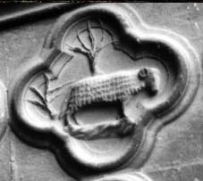
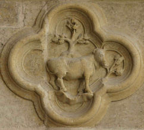
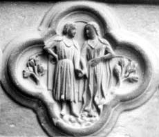
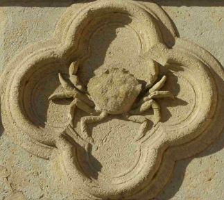
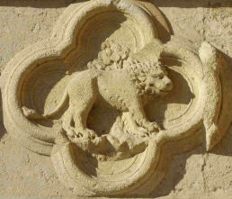
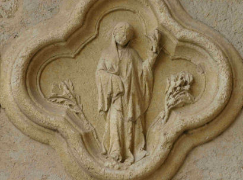
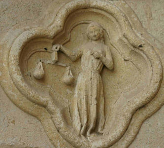
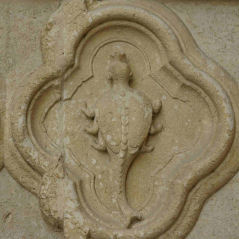
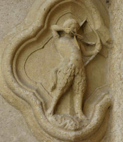
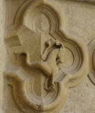
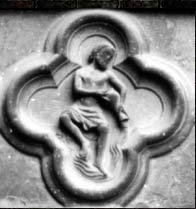
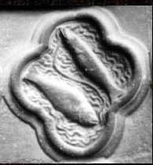
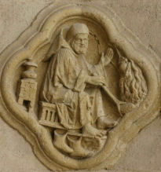
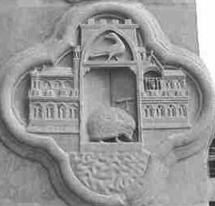
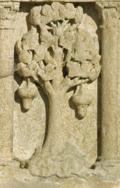
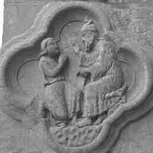
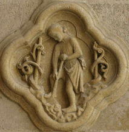
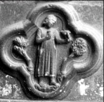
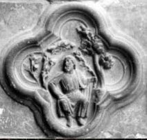
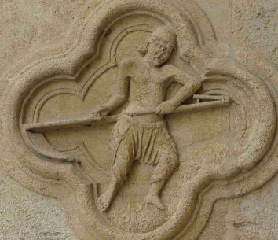
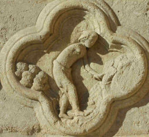
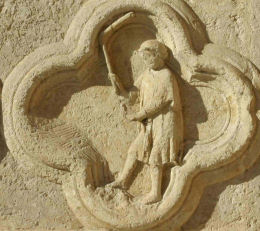
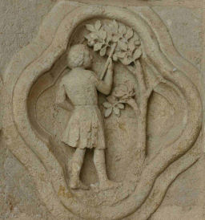
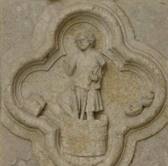
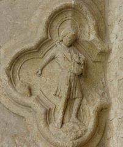
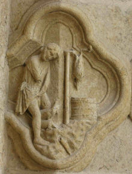
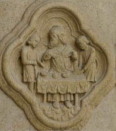
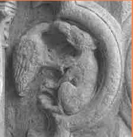
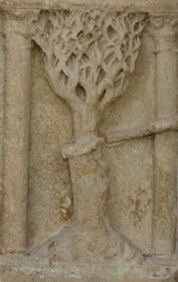
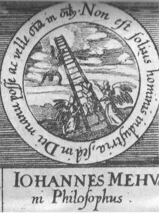
Noms cités
Fulcanelli · Paris · Hermes · Jean · Venus · Atalanta · Chevreul · Saturne · Jupiter · Bacon · Jung · Valentin · Basile · Newton